Wait But Why 长文中文版 · 原文：How (and Why) SpaceX Will Colonize Mars
作者：Tim Urban · 发布：2015-08-16 · 翻译：2026-06-14 (含 2025-2026 现实进展补充)
这是「埃隆·马斯克公司系列」四部曲的第 3 篇。要了解这个系列为什么存在，以及马斯克为什么会参与其中，请从第 1 篇开始。
发布前的话： 我是十周前开始写这一篇的。当时我完全没料到它会演变成一场「持久战」。但和 Tesla 那一篇一样，在研究过程中我意识到，这件事 A）在未来几年会变得越来越重要；B）大多数人对此了解得太少。我花了数周研究、和马斯克本人以及其他人交谈，最终建立起一套关于「人类与太空的故事」的深入理解——它彻底重塑了我对未来的心理图景（再一次）。当我列大纲的时候，我希望每个 Wait But Why 的读者都能带着同样的基础往前走——因为接下来要发生的事，我们都需要这块地基。所以就像 Tesla 那篇一样，这一篇也变成了一场「完整的事态」。就连发布前的进度更新都成了一场完整的事态。
关于这篇文章本身：它分为三个主要部分。第 1 部分提供背景和上下文，第 2 部分探讨「为什么要殖民火星」，第 3 部分深入研究「如何殖民」。为了尽可能便于阅读，文章被拆成五页，每页差不多是一篇普通 WBW 文章的篇幅，你可以通过下面的目录链接跳到任何部分。我们还尝试了两件新事情：
1) PDF 和电子书版本： 我们做了一个精美的 PDF 版方便打印和离线阅读，还有一个包含整个四部曲的电子书：
2) 音频版本。 你可以找到由我朗读的未删节音频版，以及我和 Andrew 关于这篇文章的讨论，在这里。
目录
距离出发还有一天。 她简直无法相信自己*真的*会到那里。她听过关于那个地方的所有事情——那些在人类首次踏足木卫三之前几百年就建好的建筑；体型有房子那么大的动物；和她整个世界一样辽阔的海洋；热带海滩；著名的那片蓝天；那个巨大得能灼伤皮肤的太阳；以及最诡异的部分——天上没有木星悬着。她在那么多电影里看过这一切，觉得自己要去的是传说中的某个电影外景地。这件事太大、太集中地想不过来。现在，她只需要专心把所有需要的东西打包好，跟所有人告别——下次再见到他们要很久以后了……
第 1 部分：人类与太空的故事
大约六百万年前，一只非常重要的雌性类人猿生下了两个孩子。其中一个孩子后来成为了所有黑猩猩的共同祖先。另一个则诞下了一条血脉，这条血脉有一天会包含整个人类种族。第一个孩子的后代最终会变得相当普通、相当像猴子，但随着时间推移，另一支血脉上开始发生一些奇怪的事情。1-39022-1-3902 ← 点这里
我们并不完全清楚原因，但在接下来的六百万年里，我们的祖先开始做一件地球上从未有其他生物做过的事——他们醒了。
这件事在数以千计的世代中缓慢而渐进地发生，就像你从睡梦中醒来后大脑花几秒钟慢慢恢复清醒一样。但随着这种清醒程度越来越高，我们的祖先开始环顾四周，并且*有史以来第一次*，感到*好奇*。
从一段 36 亿年的梦中醒来后，地球上的生命第一次有了问题。
我们身处的这个大房间是什么？是谁把我们放在这里的？天花板上那个亮黄色的圆是什么？它每晚都去了哪里？海洋的尽头在哪里？到了那里会怎样？我们死去的那些人现在都在哪里？
我们发现了属于我们物种的伟大悬疑小说——《我们身在何处？》——我们想要学会怎么读它。
随着人类意识之光越来越亮，我们开始给出一些看似合理的答案。也许我们站在一个漂浮的圆盘上，圆盘下面是一只巨大的乌龟。也许夜晚天上的那些小亮点，透出的是这个大房间之外的东西的影子——也许我们死后会去那里。也许我们能找到天花板和地板相接的地方，伸出头去看看另一边那些超级有趣的东西。2-2-3902
大约一万年前，孤立的人类部落开始合并，形成了第一批城市。在更大的社群中，人们可以相互讨论这个我们发现的悬疑小说，比较不同部落、跨越世代的笔记。随着学习方法越来越复杂，线索越堆越多，新的发现浮出水面。
世界显然是个球，而不是圆盘。这意味着天花板其实是一个更大的球，把我们包在里面。和我们一起漂浮在这个球里的其他物体的大小，它们彼此之间的距离，远远超出我们曾经的想象。然后，一件令人不安的事情出现了：
太阳并非绕着我们转。我们绕着太阳转。
这是一个*超级*不温暖、不让人安心的发现。*到底为什么*我们不在一切的中心？这意味着什么？
我们身在何处？
这个球已经大得让人不痛快了——如果我们不在它的中心，那我们是不是就只是出于某种毫无理由的原因待在这个球里面的一个随机小球上？真的会是这样吗？
可怕。
然后事情变得更糟。
看起来球边缘的小亮点并不是我们想的那种东西——它们是和我们太阳一样的其他恒星。它们和我们太阳一样漂浮在那里——这意味着*我们根本不在一个球里面*。我们的行星不仅不是中心，甚至我们的*太阳*也只是茫茫虚空中一个随机的家伙，被虚无包围着。
可怕。
我们的太阳其实是一大坨东西里的一小块。那是一团美丽的、浩瀚的云，由数十亿颗太阳组成。一切的一切。
至少我们还有它。直到我们意识到它不是「一切」，而是这样的：
黑暗。
我们的工具和理解力越进步，我们就能拉得越远；拉得越远，事情就越糟。我们正在以自己的危险为代价，破译着*《我们身在何处？》*的篇章，一路读到了这样一个事实：我们不可思议地孤零零，居住在一个孤岛之上，孤岛之上又有孤岛，被层层叠叠的孤立所埋葬，没有人可以说话。
这就是我们的处境。
在我们这个物种短暂的存在的最近 1% 里，我们成为了地球上首批知道「这个处境」的生命——从那以后就一直集体地陷入存在主义危机。
你真的不能怪我们。想象一下，从没意识到「宇宙是个东西」到*突然意识到宇宙是个东西*，这是一件需要消化*很多*的事情。
我们大多数人用「住在愉快的妄想里」来处理它，假装我们只住在一片无尽、温暖、五彩缤纷的大地上。我们就像这个家伙，他用一切他能想到的办法来无视「处境」：2-3-3902
我们做这件事最好的伙伴是什么？晴朗的蓝天。蓝天就好像是被*发明出来*，专门帮人类假装「处境」不存在的东西——它像一层完美的、异想天开的幕布，把我们和现实隔开。
然后夜晚降临，「处境」直直地盯着我们的脸。
哦对啊……
这种「歌舞升平 → 哦对啊…… → 歌舞升平 → 哦对啊……」的精神病旋转木马，在最近的大部分历史里，就是我们和「处境」关系的全部内容。
但在过去 60 年里，这种关系跃升到了一个全新层次。第二次世界大战期间，导弹技术大步向前，2-3902 一个新的、令人震惊的脑洞概念变得可能——
太空旅行。
数千年来，「人类与太空的故事」就是一个向外凝视、对外好奇的故事。当「人类可以离开地球岛屿、冒险进入太空」这种可能性炸开人类精神的冒险之门——
我想象着 15 世纪「大航海时代」的人们会有类似的感觉，那时候我们正在推进*《我们身在何处？》*的世界地图章节，跨洋航行的概念让人浮想联翩。如果你在 1495 年问一个小孩长大想做什么，「海洋探险家」大概会是个常见的答案。
1970 年，如果你问小孩同样的问题，答案会是「宇航员」——也就是*「处境」的探险家*。
二战让载人太空旅行成为可能，但真正的转折点是 1957 年末——苏联把第一个人造物体送入轨道，萌萌的 Sputnik 1 号卫星，太空旅行由此成为世界各大国*最具*标志性的征程。
当时冷战正酣，美苏双方都拿出了尺子，开始一场全球直播的「谁更长」比赛。Sputnik 成功发射后，苏联那一侧瞬间长出了几厘米，把美国人吓坏了。
对苏联来说，先于美国把卫星送上天是苏联技术优于美国技术的证明，反过来又向全世界说明：社会主义制度优于资本主义制度。
八个月后，NASA 诞生了。
太空竞赛正式开始。NASA 的第一要务是：把一个人送入太空，然后送入完整轨道，最好都赶在苏联前面。美国绝不能再被比下去。
1959 年，NASA 启动了水星计划（Project Mercury）来完成这个使命。他们快要成功时，1961 年 4 月，苏联抢先将尤里·加加林送入绕地球的完整轨道——成为第一个进入太空、*而且*进入轨道的*人类*，而这个人类是苏联人。
是时候采取非常手段了。约翰·F·肯尼迪的顾问们告诉他，苏联领先太多，美国在近期任何成就上都不可能超过他们——但载人*登月*这件事还离得太远，美国还有一搏之地。所以肯尼迪做了那场著名的「我们选择登月，不是因为它容易，而是因为它*很*难」的演讲，并把巨额资金（200 亿美元，按今天算约 2050 亿美元）砸向这个项目。
其结果就是阿波罗计划（Project Apollo）。阿波罗的任务是把美国人送上月球，而且要*第一个*送上去。苏联用 Soyuz 计划作为回应——他们自己的登月计划，比赛正式开始。
随着阿波罗早期阶段的推进，水星计划终于上了正轨。尤里·加加林成为首个进入太空的人后仅仅一个月，美国宇航员阿兰·谢泼德（Alan Shepard）成为第二个进入太空的人，他完成了一道小弧线，没进入完整轨道，但在弧顶处和太空击了个掌。几个月后，1962 年 2 月，约翰·格伦成为第一个进入地球轨道的美国人。
接下来的七年里，美苏共发射了 22 次载人飞行，两个超级大国不断打磨自己的技术。到 1968 年末，一路狂奔的美国共发射了 17 次，多于苏联的 10 次，两个国家一起掌握了所谓「近地轨道」（Low Earth Orbit，LEO）。
但 LEO 自 60 年代初就没真正让任何人激动过。两国都把目光牢牢锁在了月球上。阿波罗计划快速跨越，1968 年 12 月，美国成为第一个冲出 LEO 的国家。阿波罗 8 号一路飞到月球轨道，绕了 10 圈后安全返回。机组成员包括詹姆斯·洛弗尔（几个月后他在阿波罗 13 号任务中担任汤姆·汉克斯的「原型角色」），他们打破了人类高度记录，成为第一批近距离看到月球的人、第一批看到月球「背面」的人、第一批把地球看成一个完整星体的人，并拍下了这张标志性照片：2-4-3902
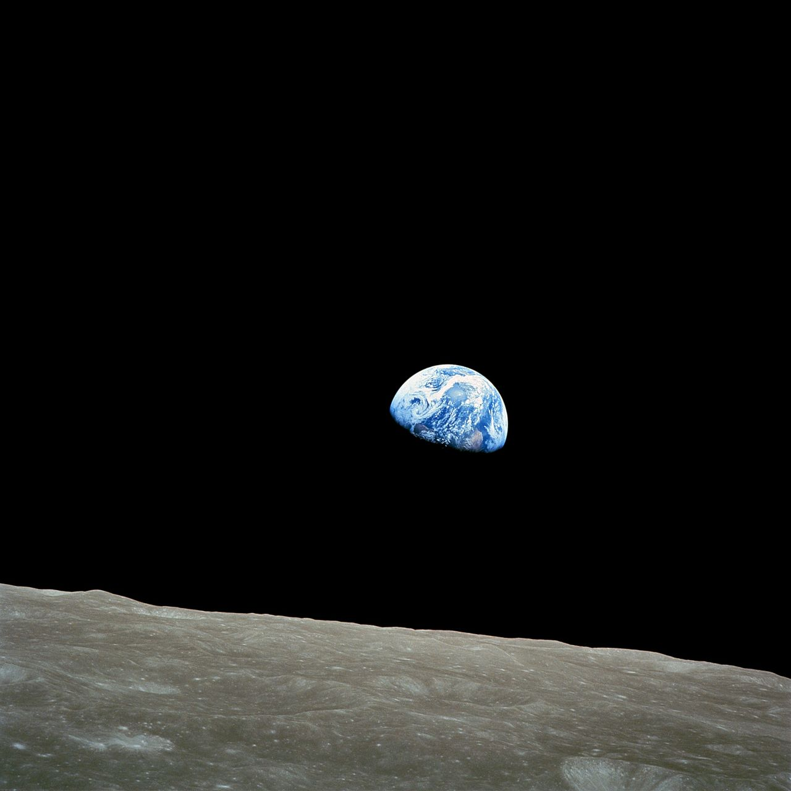
回到地球后，这三位宇航员成了美国最受爱戴的英雄——希望他们享受了八个月。三个阿波罗任务之后，1969 年 7 月，阿波罗 11 号让美国人尼尔·阿姆斯特朗3-3902 和巴兹·奥尔德林成为首批登上月球的人类，阿姆斯特朗拍下了这张著名的奥尔德林月球漫步照：2-5-3902
很难完全强调这件事有多重大。自 36 亿年前地球生命开始以来，从未有任何地球生物踏足过地球以外的天体。突然之间，阿姆斯特朗和奥尔德林在*另一颗*星球上蹦蹦跳跳，抬头看本应有月亮在天上的位置，却看到了地球。疯狂。
阿波罗计划取得了巨大的成功。它不仅在苏联之前把人送上了月球，还在接下来的 3 年半里通过另外五次阿波罗任务把另外 10 个人送上了月球。七次登月尝试中有六次成功，著名的例外是阿波罗 13 号——一次氧气罐爆炸后被安全中止。4-3902
苏联的 Soyuz 计划不断遭遇技术问题，从未真正把人送上过月球。
最后一次阿波罗月球行走发生在 1972 年末。仅仅十年，我们就征服了近地空间，进步在加速。如果当时你去问任何一个美国人、或者任何其他人，「未来几十年的太空旅行会带来什么？」他们都会做出宏大、大胆的预测：月球上会有更多人、永久月球基地、人会到达火星，甚至更远。
所以你可以想象，1972 年时——他们刚看完 12 个人类登上月球——如果你告诉他们：「43 年后，也就是听起来不可思议地未来感的 2015 年，登上过月球的人*仍然*是 12 个」，他们会有多惊讶。或者告诉他们：「我们早早甩开了近地轨道，把它当成登月前的小停车场，结果到了 2015 年，LEO 反而成了人类到过的最远的地方。」
1972 年的人会被我们的智能手机和互联网震惊，但他们同样会被震惊于：我们居然放弃了在太空拓展边界。
所以发生了什么？经过如此狂野、令人激动的「人类太空冒险十年」之后，我们为什么就*停了下来*？
嗯，就像在 Tesla 那一篇中我们发现的，「为什么我们停了？」是错误的问题。我们应该问：
我们当初到底为什么会对把人送入太空这件事这么有冒险精神？
太空旅行贵得离谱。国家的预算紧得不行。事实上，一个国家*居然*曾经为了冒险、为了激励人心、为了拓展边界而拨出大笔预算，这本身就有点让人意外。
而那其实是因为——从来没有哪个国家*真的*是为了冒险、为了激励人心、为了拓展边界而大把烧钱——是两个国家为了*谁更长*的较量而烧钱。在那个「大家都想证明自己的经济制度更好」的全球大尴尬面前，美国政府同意破例几年，把一切必要资源砸向这个命题，以确保他们赢得这场争论——
而一旦他们赢了，比赛结束，特例也就结束了。美国又回到了像正常人一样花钱的状态。2-6-3902
不再不惜一切代价推动极限，美苏两国冷静下来，穿好裤子，握握手，开始像成年人一样合作，专注更实际的项目——比如在 LEO 联合建一个空间站。
从那时起的四十年里，「人类与太空的故事」又被关回了地球。我们发现人类与太空互动只有两个主要原因（注：接下来一整段会稍微岔开话题，做一个关于卫星、空间探测器、太空望远镜的概述。如果你对这部分不感兴趣，直接跳到国际空间站那一节，我不会介意）：
1) 支持地球上的产业
自从阿波罗计划以来，人类与太空互动的首要且主要原因，并不是人类对太空本身感兴趣，而是利用太空为地球上的产业做实际用途——主要是以卫星的形式。今天绝大多数的火箭发射到太空，只是把一些东西送入 LEO，它们的用途是回头看地球，而不是望向另一侧的广袤空间。
这是一个简短的卫星概览：
关于卫星的蓝盒子
我们不太经常想到它们，但我们的头顶有数百个飞行机器人，它们在我们地球上的生活里扮演着重要角色。1957 年，孤独的 Sputnik 独自绕地球飞行；但今天，通信、气象预报、电视、导航、航空摄影等行业都高度依赖卫星，许多国家军队和政府情报机构也一样。
卫星制造业、把它们送入太空的发射、以及相关设备和服务的市场总额，已从 2004 年的 600 亿美元膨胀到 2015 年的 2000 多亿美元。卫星行业的收入今天只占全球电信业的 4%，但却占太空行业总收入的 60% 以上。2-7-3902
下面是世界卫星按用途的分类（2013 年数据）：2-8-3902
2015 年初，共有 1,265 颗活跃卫星在轨。其中美国以 528 颗遥遥领先，占总数的 40% 以上——但有超过 50 个国家至少拥有 1 颗在轨卫星。
至于*它们都在哪里*，这些卫星大部分都分布在两个明显不同的「层」：
约三分之二的活跃卫星在近地轨道（LEO）。LEO 的起点是距地面 99 英里（160 公里）——这是物体在大气阻力不捣乱的情况下能进入轨道的最低高度。LEO 的顶端在 1,240 英里（2,000 公里）高空。一般来说，最低的卫星大致在 220 英里（350 公里）或更高。
剩下的大部分（约三分之一）卫星在更远的地方——叫做地球静止轨道（GEO）。它正好在距地面 22,236 英里（35,786 公里）处。它叫「地球静止」，是因为在这个轨道上飞行的物体，其飞行速度和地球自转速度完全一致，从地面观察者来看，它在天上的位置是静止的。2-9-3902
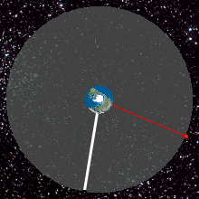
GEO 是电视卫星的理想轨道——地面上的碟形天线可以一直对着同一固定点。
剩下的一小部分卫星在中地球轨道（MEO），那是 LEO 和 GEO 之间所有的轨道。MEO 上一个著名的存在是 GPS 系统——美国人和许多其他国家的人每天都在用。我之前没意识到，整个 GPS 系统（美国国防部的项目，1995 年上线）总共只用了 32 颗卫星。2012 年之前，数量只有 24 颗——六个轨道面，每个面上四颗卫星。但你可以从下面的动图看到，即使只有 24 颗，地面上任何一个点都能在任何时刻被至少 6 颗卫星看到，通常是 9 颗或更多（图中地球上的蓝点是一个假想的地面人，能看到他的卫星是蓝色的，绿线表示它们的视线）：2-10-3902
这就是为什么你的手机即使在没有蜂窝信号的地方也能显示位置——因为 GPS 跟蜂窝服务一点关系都没有。系统本身也设计为冗余的——只需要同时有 4 颗卫星看到你，就能精确定位。GPS 卫星的轨道周期约为 12 小时，每天绕地球两圈。5-3902
你可以用 Google Earth 查看卫星位置（这里有一个很酷的视频展示了 Google Earth 显示卫星的样子）。
关于太空碎片的蓝盒子
卫星的世界里有一个大问题。除了那 1,265 颗活跃卫星在轨，还有数千颗不活跃的卫星，以及一大堆前几次任务留下的废弃火箭。偶尔，它们中的一颗会爆炸，或者两颗会相撞，产生一大堆叫做太空碎片的小碎片。太空中的物体数量在最近几十年里增长很快，正如欧空局（ESA）制作的这个动图所示（其中物体相对地球的尺寸是夸大的）：2-11-3902
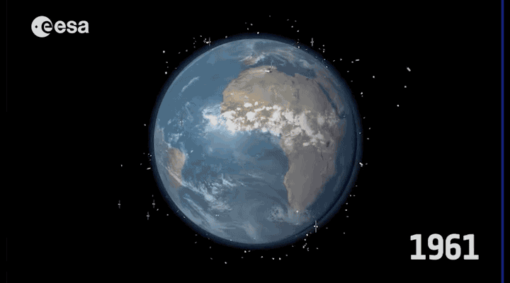
大部分卫星和碎片都密集地聚集在地球周围的 LEO，外环是位于 GEO 的物体。
地球上的航天机构在追踪大约 17,000 个太空中的物体，其中只有 7% 是活跃卫星。这里有一张地图，显示今天每一个已知物体的位置。2-12-3902
但疯狂的是，他们只追踪大的物体，我们看到的图像就是那些大的。估计更小的碎片（1–10 厘米）数量在 150,000 到 500,000 之间，超过 2 毫米的碎片总共超过一百万块。2-13-3902
问题在于，太空物体以极快的速度运动（大多数 LEO 物体以超过 17,000 英里/小时的速度飞行），哪怕撞上一个小小的物体，也可能给活跃的卫星或航天器造成毁灭性的破坏。一个 1 厘米的物体在这个速度下，碰撞时产生的破坏力和一颗小*手榴弹*相当。7-39022-14-3902
超过三分之一的太空碎片来自两起事件：2007 年中国的反卫星测试——中国故意炸掉自己的一颗卫星，往全世界脸上「拉屎」，产生了*3,000* 块大到可追踪的新碎片；以及 2009 年两颗卫星相撞，炸出 2,000 块碎片。2-15-3902 每次相撞都会增加碎片数量，碎片数量增加又增加更多相撞的概率，于是存在一种「多米诺效应」的风险，科学家称之为 凯斯勒症候群。有不少机构正在提议各种缓解 LEO 碎片的方案——从用鱼叉射碎片、到用激光轰，再到用一片气体云截击。
这张图总结了每个国家的「太空足迹」——展示了每个国家拥有多少活跃卫星、不活跃卫星、制造的太空碎片：2-16-3902
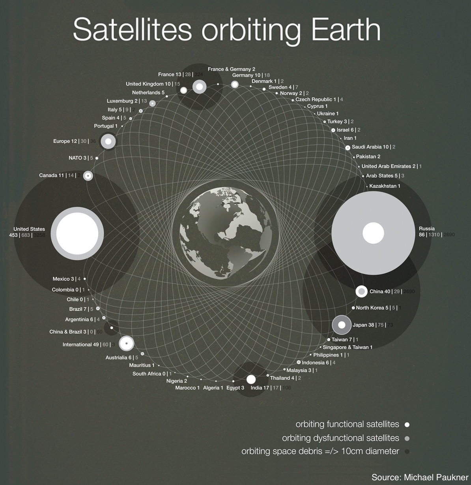
「支持地球产业」这个人类/太空互动的分类下还有一些其他活动——比如太空采矿、太空葬礼、太空旅游——但至少目前，卫星几乎占了这个分类的全部。
2) 观察与学习
过去四十年里，人类与太空互动的第二个原因证明：虽然我们可能不再派人去「处境」，但我们从未失去对「外面到底有什么」的求知欲。当社会从太空移开注意力，转向别处，天文学家们却一直在埋头破译那本古老的悬疑小说 《我们身在何处？》 的页页篇章。**
天文学家最擅长用「眼睛」学习，太空竞赛的一个副作用是「观察*外面有什么*」的技术得到了极大发展。现代天文学家有两种高科技方式去看东西：
观察与学习工具 #1：向太阳系发射探测器
基本上，科学家会朝某个遥远的行星、卫星或小行星发射一个高端机器人，然后这个机器人花几个月或几年在太空中飞，孤独无聊，直到终于抵达目的地。然后根据计划，它要么直接飞过目标，路上拍些照片；要么绕目标飞行以获取更详细的信息；要么降落在目标上做全面检查。它学到的一切都会发回地球。最终任务完成时，我们要么把它撞向那个天体让它「殉职」，要么就让它飞进深空、自生自灭。
我经常把自己当作公众可能知道什么、不知道什么的试纸。就像我之前在博客上提过的，我从三岁起就「与天文学认真交往」——所以如果我都不知道太空里在发生什么，我就假设大多数人也不知道。说起空间探测器，我常常一头雾水：是有 200 个在飞？是 50 个？还是 9 个？为什么它们在那儿、谁发射的、都在做什么？我所知道的是：偶尔会有探测器发回震撼照片的报道——我打开 cnn.com 图集，一张张划过去，激动一秒，把链接发给和我一样「与天文学认真交往」的三位朋友，然后想关掉页面，结果看到 CNN 旁边一个低俗的标题党，点进去，毁掉我接下来三个充满怨气的钟点。这就是我和人类空间探测器的关系。
但研究这篇的过程中我很快意识到，其实没那么多要知道的，要完全搞清楚也不需要花太大功夫。下面是我认为现在最值得知道的八个关键太空机器人：2-17-3902
1) 新视野号（冥王星，NASA）
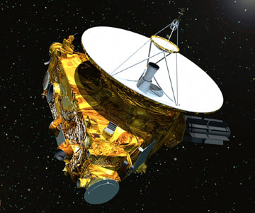
新视野号排第一是因为它的「大时刻」刚刚发生。2006 年发射，踏上前往冥王星的十年旅途（2007 年借木星引力弹弓加速），*终于*在 2015 年 7 月 14 日抵达冥王星。它没有在冥王星上降落，但飞得很近，第一次让我们看到冥王星的真实面貌：8-39022-18-3902
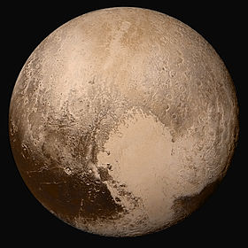
接下来，新视野号将继续飞向柯伊伯带更深处，发回彗星和矮行星的照片。你可以在这里追踪新视野号的位置。
有点尴尬的是，新视野号发射时冥王星还是行星，在冥王星被「降级」后的那些年里，整个新视野号团队都避免和冥王星「对上眼神」。我同意大家普遍的感受——冥王星被降级确实有点悲伤，9-3902 但事实是：冥王星应该感谢自己——以「伪行星」的身份逍遥了 76 年，其间在柯伊伯带里吸引了一大堆「粉」。而它的柯伊伯带同门矮行星阋神星（Eris），整个这段时期都默默无闻，直到 2005 年才被发现。
2) 好奇号（火星，NASA）
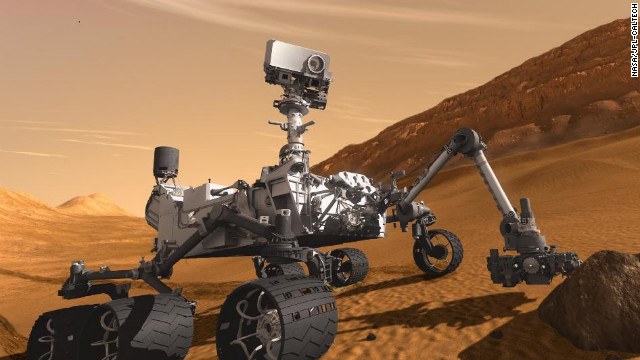
好奇号是一台如今非常著名的火星车。一辆汽车大小、人见人爱的着陆机器人，2012 年降落在火星表面。好奇号在一个大陨石坑里研究各种东西，主要任务是判断火星上是否曾经有过生命。前面两台火星车——机遇号和勇气号——2004 年着陆，原本计划任务 90 天。它们都远远超过了「保质期」，机遇号到今天*仍然*在工作。真是好样的。
围绕火星还有一大堆其他探测器，但好奇号是主角。
我做研究时看到了一个 IMAX 电影的视频，讲的是怎么把勇气号从地球送到火星表面，我觉得那是有史以来最酷的视频。直到我又发现了这个视频——讲怎么把好奇号送上火星——更酷。
3) 朱诺号（木星，NASA）
朱诺号 2011 年离开地球，绕了一大圈后于 2013 年回到地球借引力弹弓（期间拍了一段超酷的视频，画面是月球绕着地球转）。它现在正飞向木星，预计 2016 年 7 月抵达。2-19-3902
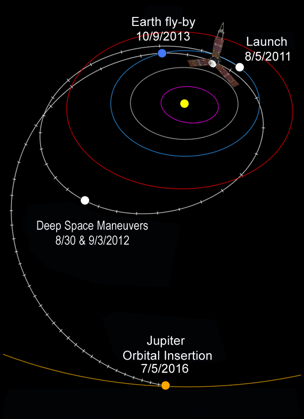
抵达木星后，朱诺号会进入木星轨道，拍照并用各种传感器研究那些看着多汁的云层下面到底有什么。它最终的结局是坠入木星——最好在烧毁之前能拍下并传回几张木星大气层内部的照片，然后有人能做一个 VR 视频，让你「下降」到木星表面。
4) 卡西尼号（土星，NASA / 欧空局 / 意大利航天局合作项目）
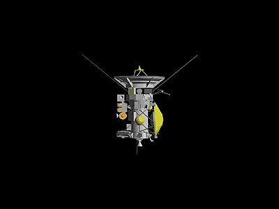
1997 年发射，卡西尼号朝土星飞去——土星是太阳系中唯一一个决定「穿蓬蓬裙也行」的行星。2004 年抵达土星后，卡西尼号成为历史上第一个绕土星飞行的探测器，发回了一些令人瞠目结舌的照片，比如这张：2-20-3902
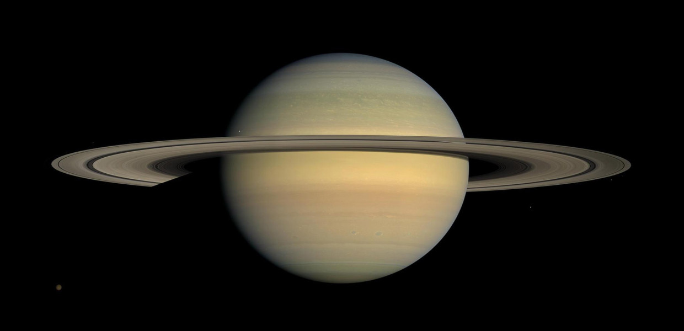
还有这张：
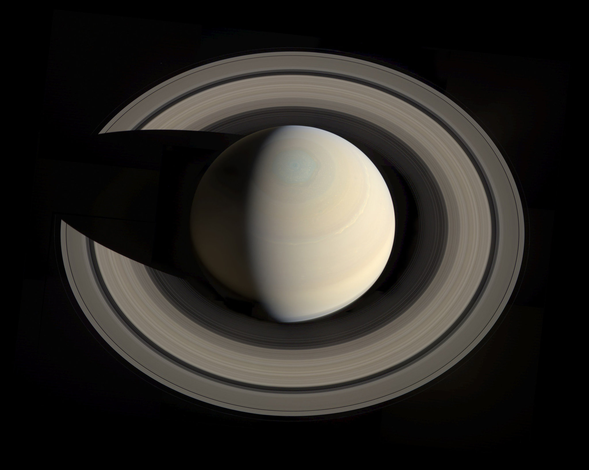
和这张土星环的特写：
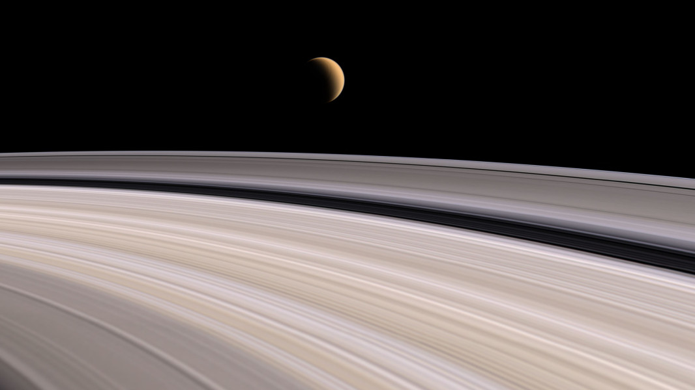
和这张太阳在土星背后、酷到没朋友的：
2005 年，卡西尼号释放了它的着陆器「惠更斯号」（名字实在是不太吉利）到土星最大的卫星——泰坦。这是惠更斯号拍下的泰坦表面真实图像（看到这么遥远神秘的土星卫星的真正表面，诡异但迷人）：2-21-3902
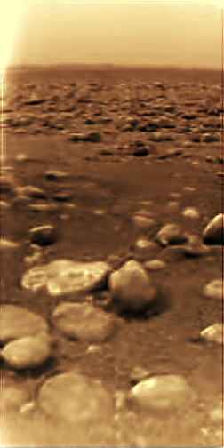
5 和 6) 旅行者 1 号和 2 号（木星、土星、天王星、海王星；NASA）
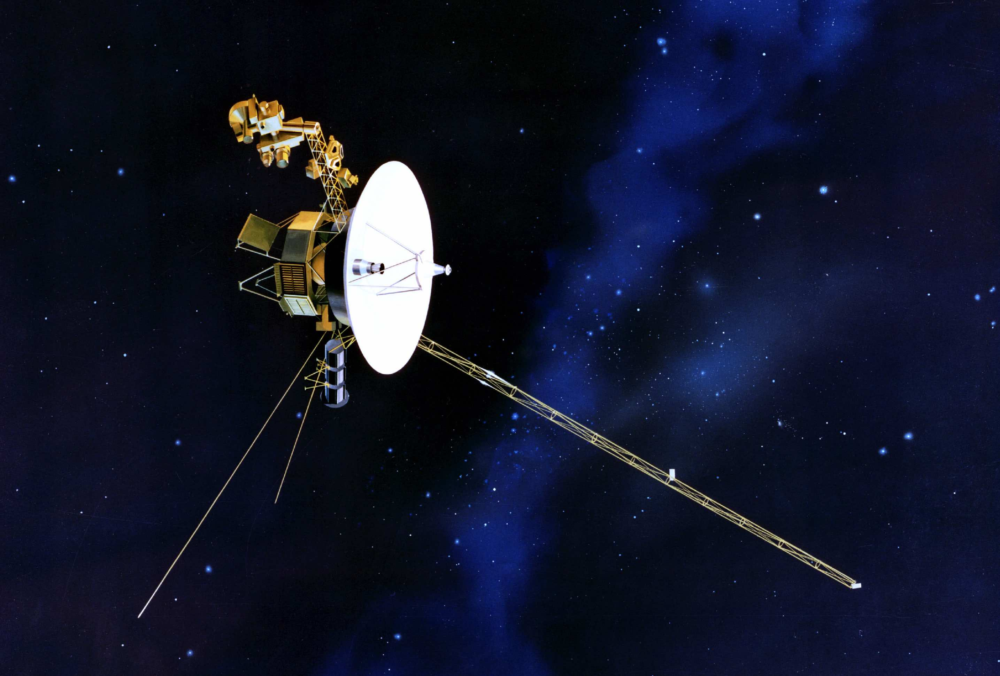
1977 年发射，两艘旅行者号探测器是第一批拍到太阳系外侧四大行星照片的探测器。旅行者 2 号仍是唯一造访过天王星和海王星的探测器，分别拍下了这两张诡异的照片：2-22-3902
旅行者号有趣的地方在于，虽然它们的初始任务早已结束，但它们至今仍在向外飞。它们现在都已经远得不可思议，而且飞得飞快。旅行者 1 号是两者中更快的那个，速度 38,000 英里/小时（61,000 公里/小时）——快到五分钟就能横跨大西洋。它是离地球最远的人造物体，目前距离地球 131 个天文单位。10-3902 它也是第一个离开太阳系的人造物体。按这个速度，旅行者 1 号需要大约 73,000 年才能到达最近的恒星比邻星。
旅行者号还有一件很酷的事情：在发射前，NASA 一个由卡尔·萨根领导的委员会给两艘探测器各装了一个时间胶囊，里面装满了地球的符号、声音和图像（还有教外星人怎么播放和查看这些媒体的说明），希望探测器有一天能向「外星人」介绍我们的故事。大概率是白费功夫，但谁知道呢。
7) 罗塞塔号（彗星，欧空局）
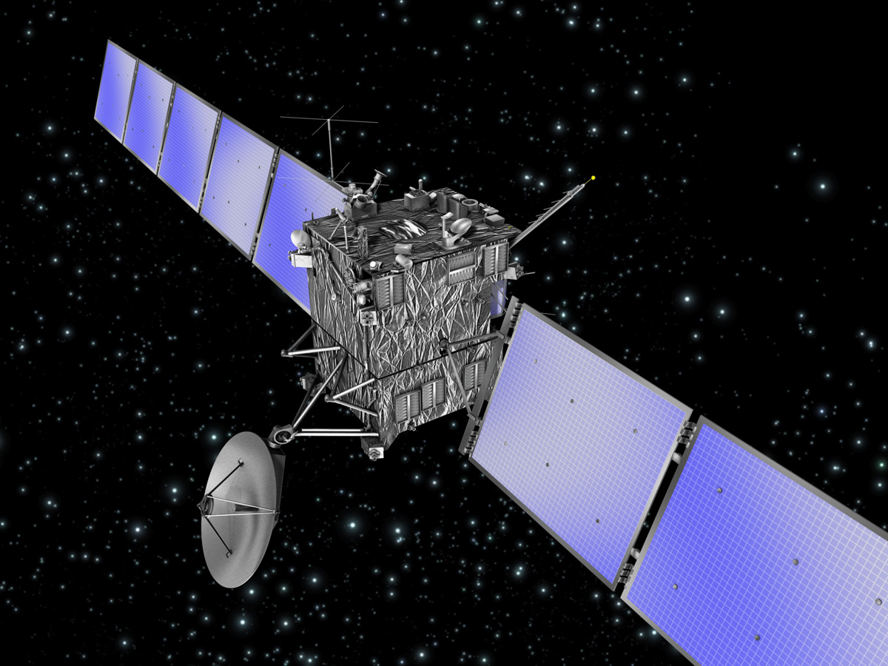
2004 年发射，罗塞塔号去年（2014 年 8 月）抵达 67P 彗星，并成功在几个月后将它的着陆器「菲莱」降落在彗星上，从而大出风头。67P 彗星基本上就是一块大石头（长 2.7 英里/4.3 公里），但罗塞塔号拍的图像很酷：
8) 黎明号（灶神星和谷神星，NASA）
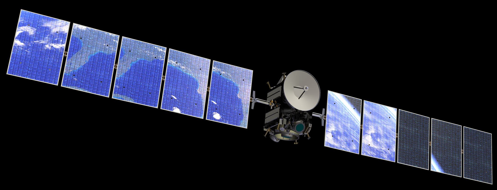
黎明号不敢相信自己上了这个榜单。我收录它的原因是，我不确定大家是否意识到小行星带里其实有巨大的、几乎行星大小的天体。小行星带是一大圈数百万颗小行星，其中超过 750,000 颗直径不小于 1 公里2-23-3902，位于火星和木星轨道之间（不要和外太阳系包围着的大得多的柯伊伯带混淆）。小行星带里最著名的两颗是谷神星——一颗直径为月球 27% 的矮行星，占小行星带总质量的三分之一；和灶神星——小行星带中第二大的天体，是夜空中最亮的小行星带天体。11-3902 我之前真不知道谷神星和灶神星是这种存在。Anyway，黎明号 2007 年发射，2011 年花了九个月绕灶神星飞行，然后飞向谷神星，2015 年 3 月抵达（成为历史上第一个绕两个不同天体飞行的探测器）。
此外还有十几个其他探测器。比如信使号——绕水星飞行了七年，2015 年 4 月故意撞向水星；晓号——日本探测器，本应在 2010 年开始绕金星飞行但失败了，今年会再试一次；还有一些探测器安静地绕月球飞行，包括中国的嫦娥三号，它投放了 1976 年以来月球上的第一个着陆器；以及一群观测太阳的探测器。这里有一个详尽的列表，列出了所有过去和现在的探测器，还有一个很棒的《国家地理》可视化图，总结了这一切（点击图片看大图）：2-24-3902
观察与学习工具 #2：望远镜
望远镜自 17 世纪初就出现了，在接下来的 400 年里越来越强大，成为人类翻阅*《我们身在何处？》*的主要工具。
但到了某个点，地面望远镜撞到了天花板——不管多先进，都无法看到更远的东西。你知道透过一杯水看光，光会变得弯弯扭扭吗？星星闪烁也是同样的原理，只不过我们不是透过水，而是透过地球的大气层看它们。大气层对光的扭曲不像水那么严重，但星星和星系在天空中只是*很小的*亮点，所以任何程度的模糊都是大问题——就像你在游泳池的水下往上抬头看，努力辨认天上飞过的一群鸟。
1960 年代，人类获得了把望远镜放到*太空*的能力，于是看到了历史上第一批无遮挡的星空。1990 年，NASA 发射了第一台真正牛×的太空望远镜——哈勃。12-39022-25-3902
这台 13 吨重、巴士长度的哈勃太空望远镜，口径 7.9 英尺（2.4 米），精度高到可以在 200 英里外把激光打到一枚硬币上，威力强到可以从波士顿的家中看到东京的一对萤火虫（如果地球是平的）。它位于地面以上 340 英里的轨道上，那儿没有大气、没有光污染，NASA 称这个位置为「终极山顶」。2-26-3902 这一切给了哈勃前所未有的宇宙视野，让它在过去 25 年里发回了我都无法相信是真实存在的、最震撼的照片。比如这张史诗级的星系：2-27-3902
或者这两张正在缓慢合并中的星系：
或者这张大到不可思议的「创生之柱」（左边那根「手指」从上到下有 4 光年长，如果你从指节开始乘飞机往上飞，要飞 450 万*年*才能到指尖）：
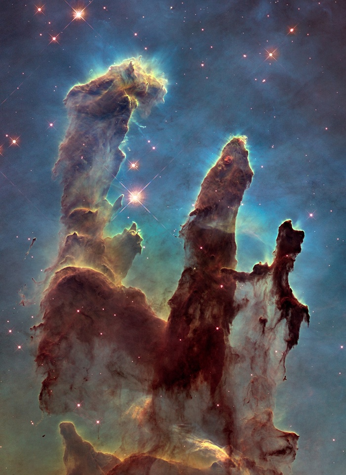
或者哈勃把镜头对准天空中一个看似空无一物的小方块时（方块旁是月球，用来显示方块大小）：
却发现了数千个星系：
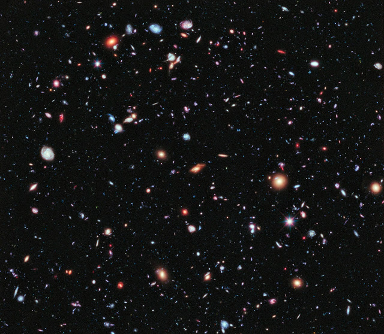
哈勃和其他太空望远镜13-3902展示给我们的东西揭示了大量关于我们身在何处以及如何到达此处的新信息——从暗能量、到宇宙的起源和年龄和大小、再到有多少像我们这样的行星可能存在生命——拓展了我们的认知。
四十多年来，这两个目标——支持地球上的产业、继续学习和发现——就是我们与太空关系的全部。
因为这两个目标都最适合用*机器*太空旅行者完成，「人类与太空的故事」最近的一个章节全部是关于「在太空飞行的机器」，而人类的角色发生在地球上或地球附近，拿着摇杆控制一切。
自 1972 年阿波罗 17 号返回地球以来，人类之所以还去太空，唯一的原因是：有时候机器还不够先进，无法完成某项任务，所以我们需要送一个人上去。在大约 550 个曾经去过太空的人当中，有 400 多个是在太空竞赛之后上去的。但阿波罗之后，原因都是实际的——科学家和技术人员去太空做一项工作。这就是为什么过去四十年的每一次载人任务都局限在地球周围那层薄薄的太空——近地轨道。
国际空间站
今天，几乎每次载人太空任务的目的，都是把宇航员送上国际空间站（ISS），或把他们接回来。2-28-3902
国际空间站是 16 个国家合作的成果，1998 年开始，历时十年建成。空间站运行在 LEO 最底部的轨道，高度在 205 至 255 英里（330–410 公里14-3902）之间，差不多相当于冰岛的宽度——离地面近到你用肉眼就能在晚上轻松看到它。15-3902 它比大家想象的要大，重量相当于 320 辆汽车，长度相当于一个美式橄榄球场：2-29-3902
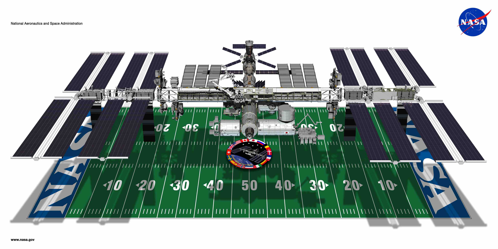
国际空间站里的人到底在干啥？蓝盒子
当我开始写这篇时，我意识到我其实不知道国际空间站是干嘛的，里面的人到底在做什么。每次我看到空间站内部的视频，就是一个成年人在里面飘来飘去地玩耍。
巧的是，还真有一个「国际空间站大会」，上个月刚在波士顿开过。所以我去了。大会由「科学促进中心」（CASIS）主办，他们管理着美国在 ISS 中的那一部分。这是我在大会上了解到的：
- 国际空间站是一个科学实验室。它有点像其他实验室，只不过有一个派对绝技：它在太空中飞，所以这是唯一一个可以在零重力（其实不是零重力，是*微*重力*——*我后面会解释）下做实验的实验室。
- 大多数 ISS 实验有一个共同点：都是为了利用「重力状况」这个条件。但除此之外，它们的目的广泛——从研究骨质疏松（宇航员的骨头会萎缩，因为他们不需要对抗重力），到测试设备在太空中的耐久性，到分析液体在没有其他力影响下的行为和互动，再到利用重力变化「诱骗」细菌暴露让它们对某些药物免疫的基因。
- 国际空间站上的宇航员工作日有着紧凑而受控的日程。他们要么在睡觉（8.5 小时），要么在吃饭（早晚餐各 1.5 小时，午餐 1 小时），要么在锻炼（每天强制 2.5 小时），要么在做实验（每天 9 小时）——我拍了这张照片，是 ISS 上三名宇航员当前的日程表。16-3902 周末休息，听起来简直不能再爽了——你可以整天飘来飘去、看看窗外。
- 想要上 ISS 玩的不止我一个——NASA 选拔的过程竞争异常激烈。数千人申请，100 人进入最后一轮面试和体检，最终只有一两个人能入选。少数情况下，私人公司或个人可以花几天的「船票」在空间站上待几天，但费用大约是 6,000 万美元。
如果你想更好地感受在国际空间站上的生活是什么样，这里有一个由「飘浮的宇航员」做的空间站视频导览。
到目前为止，已经有 216 人来自 15 个国家在 ISS 上玩过：2-30-3902
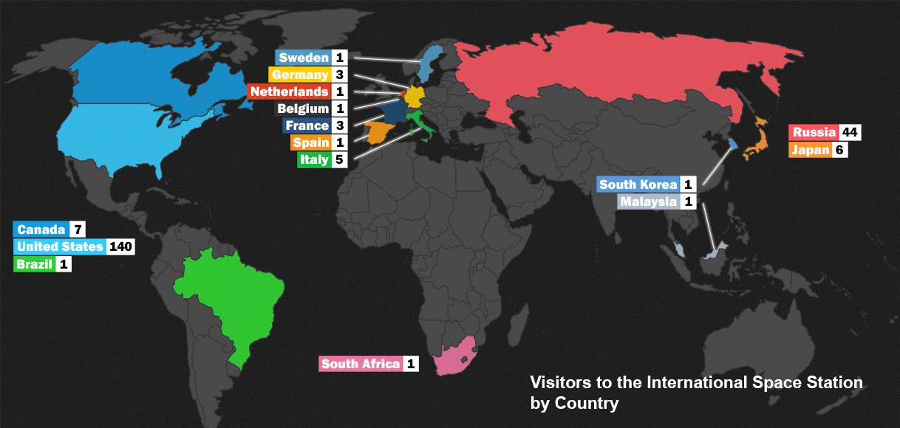
东西是怎么上太空的？
我们已经谈过太空中有什么，但所有这些东西是*怎么*上去的？你有没有想过 GPS 卫星最初是怎么到那儿的？答案是，世界上有 9 个国家有能力把东西送入轨道：俄罗斯、美国、法国、日本、中国、印度、以色列、伊朗，嗯，还有朝鲜——加上一个非国家实体，欧洲航天局（ESA）。一颗卫星要进入太空，得是有人付钱给这十个实体之一，让它们用一枚巨大而昂贵的火箭把卫星送上去（或者一个国家为了自己的用途把自己的东西送上去）。
至于把*人*送入太空，历史上只有三个国家做到过——俄罗斯、美国和中国（中国是太空行业快速增长的新玩家）。60 年代以来，俄罗斯用 Soyuz 火箭把人送入太空；美国在 1972 年结束阿波罗计划后，于 1981 年凭借 Space Shuttle 计划重新获得把人送入轨道的能力。2-31-3902
接下来的 30 年里，美国用航天飞机把 135 次任务送入 LEO，其中 133 次成功。两次例外是美国历史中相当令人伤痛的——1986 年的*挑战者号和 2003 年的 哥伦比亚号*。
Space Shuttle 计划在 2011 年退役。今天，只有两个国家能把人送入轨道——俄罗斯和中国。美国自己没有这个能力——这个曾经自豪地把人送上月球、让全世界观看胜利的国家——现在不得不在俄罗斯的火箭上发射自己的宇航员，而且要看俄罗斯的脸色。
那么我们应该怎么看待「人类与太空的故事」？这是一个有点奇怪的故事。1970 年的时候，故事看起来是这样的：
所以大家对这个故事走向的假设是这样的：
但现在是 2015 年，原来发生的事情是这样的：
当我看着今天人类和太空发生的事情，我应该觉得不可思议。从苏联把第一个人造物体送入轨道到现在才 58 年，我们已经有一大群高科技设备在我们星球周围飞翔，赋予人类在视觉和通信上近乎神奇的能力。有一支飞行的机器人信使散布在太阳系各处，把它们的发现报告回来。有一台*巨大的飞行望远镜*高高悬在地球上方，让我们看清可观测宇宙到底长什么样。在我们头顶 250 英里的地方，有一个橄榄球场大小的*科学实验室*，里面*住着人*。
我刚才说的每件事都*了不起*。
如果只有「人类与太空的故事」看起来是这样——
——我会*惊叹*于我们今天在「处境」里做的所有事情。
但不幸的是，60 年代确实发生了。所以相反，它是这样的：
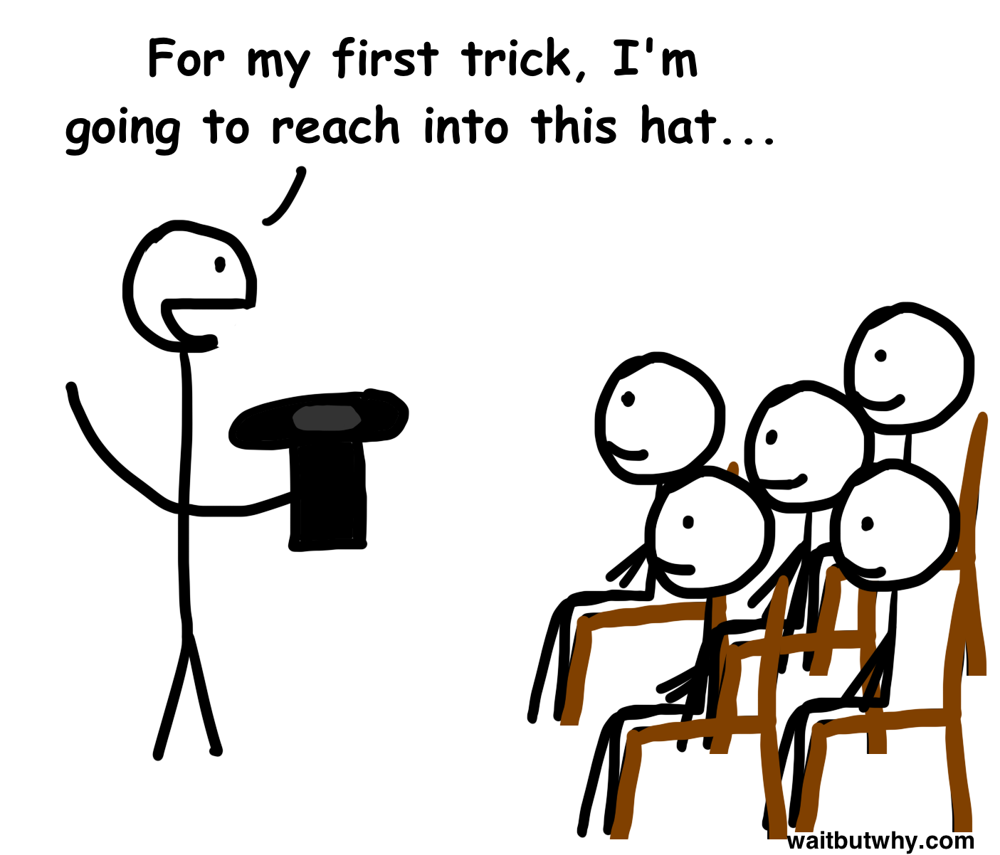 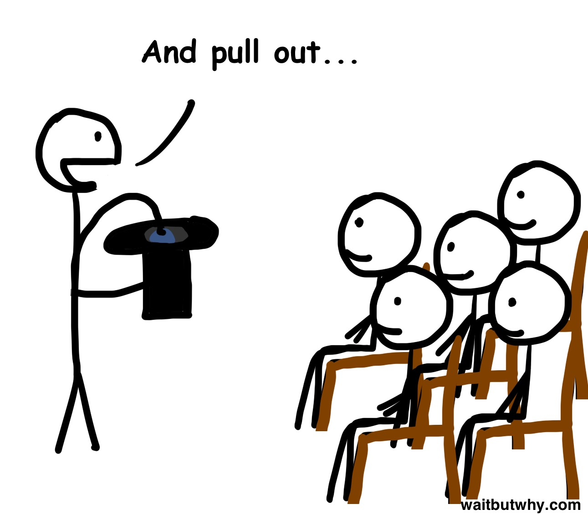 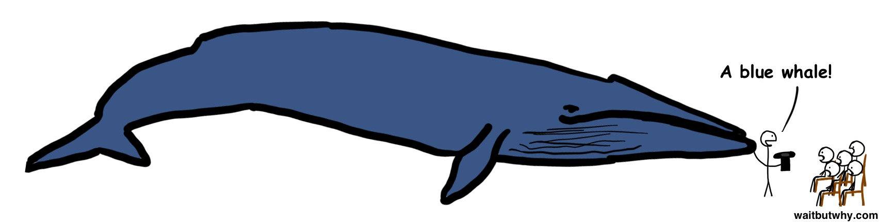 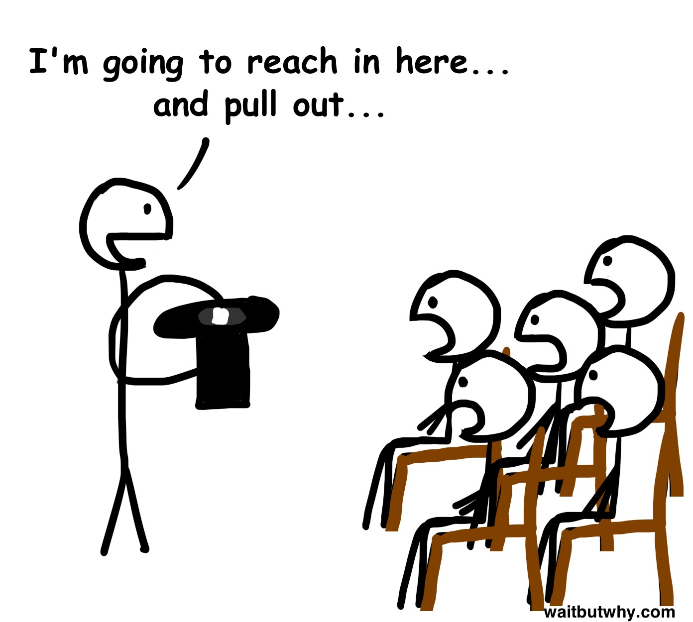
一场好的魔术表演遵循一个简单的规则——让戏法越演越精。如果你跟不上越来越挑剔的观众，他们很快就会把你屏蔽掉。
在某些领域，「人类与太空」的魔术表演一直在稳步上升。比如在我们对知识和理解的追求上，我们每十年都比上一个十年了解得更多。人类*探索*的精神不仅活着，而且在阿波罗之后在太空中依然蓬勃发展。
但尽管我们对探索充满兴趣——尽管我们如此渴望了解*《我们身在何处？》*里隐藏的所有秘密——在真正让我们兴奋、受到激励、让肾上腺素飙升这些事情上，探索远远比不上*冒险*。探测器和望远镜也许能让我们惊叹、点亮好奇心，但没有什么能像*看着我们这个物种去*「从未有人去过的地方」那样直击我们*动物本能的核心*。而在这个舞台上，过去四十年让我们感到空虚。看着人类登上月球之后，再看 ISS 来来回回的载人任务，套用 Ross Andersen 的话说，是「跟看哥伦布坐船去伊维萨岛差不多刺激」。
这就是为什么在今天的世界里，「人类与太空的故事」已经从我们意识的前页上悄悄溜走。一个本应让我们所有人跪下来的话题，变成了 geek 们的小众余兴。问你认识的 10 个受过良好教育的人，关于太阳系探测器、ISS、NASA、SpaceX 现在都在干什么，大多数人都说不出太多东西。有些人甚至不知道现在还有人去太空。人们不知道，是因为人们不在乎。由于历史的进程，「人类与太空的故事」感觉像是一种失望。环顾今天的世界，直觉上很容易预测太空故事的下一章会像今天这样继续小步慢走：
很多人并不觉得这是坏事。「地球上还有这么多问题没解决，为什么要把大笔的钱送到太空的遥远角落？」他们会问。马萨诸塞州国会议员 Barney Frank——三十年来在美国预算决策中扮演关键角色——称有抱负的载人太空探索「充其量是一种国家不该沉溺的奢侈品」、「彻头彻尾的浪费钱」、「纯粹的劳民伤财」。2-32-3902 阿波罗时代结束后 NASA 预算被大幅削减的事实表明，Frank 并不是唯一持这种观点的美国政客。
乍一看，Frank 完全是在理性思考——毕竟，面对医保、国安、教育、贫困这些关切，我们真的应该留出「冒险预算」吗？由此看来，上面那张「人类与太空的未来」图，似乎完全可能按当前路径继续下去。
我过去几个月几乎不停地读、谈、想——「这个故事接下来会怎么走」——我关于未来的假设现在已经发生了巨大变化。
我觉得我们都将迎来一个巨大的惊喜。
第 2 部分：马斯克的使命
和大多数人一样，埃隆·马斯克有自己的一小撮人生目标。和大多数人不一样的是，他的人生目标之一是把 1,000,000 人送上火星。
在过去的几个月里，每当我和朋友解释我在写这一系列文章时，总会有那么一个明显的瞬间——在我提到「火星那件事」的时候。他们的面部反应从「什么？不要啊」到「噢太可惜了，亏我还一直觉得埃隆·马斯克听上去挺酷的，没想到他是个乱来的疯亿万富翁」再到「我该不该笑？还是 Tim 这事是认真的、他会不会不高兴？」
我没见过的一种反应是：「酷，听起来挺合理。」
我懂——直到最近我自己也是同样的反应。通常一句话里出现「火星」这个词，要么是在讲某个高深的天文学玩意儿，要么是某个极客的科幻玩意儿。而「殖民」这个词一般只出现在讲历史句子里。这两个词在现实世界里压根儿不该凑到一块儿。
为了解释为什么马斯克想把一百万人送上火星，我要给你介绍两个住在银河系另一端某个类地行星上的外星人——Zurple 和 Quignee：
Zurple 和 Quignee 住的行星叫 Uvuvuwu，它的形成比地球晚 12 亿年，但因为在 Uvuvuwu 上单细胞生物从简单进化到复杂只用了 3 亿年（地球上用了 16 亿年），Uvuvuwu 上的生命抢先一步，在 1,100 万年前就达到了人类级别的智力。今天，Uvuvuwu 上的生物已经远远领先于我们在地球上能梦想到的一切。
Zurple 和 Quignee 自从 240 万年前读研时认识以来就是朋友，他们最喜欢的活动之一就是观察整个银河系中新生的智慧生命，然后打赌它们是会灭绝还是「闯关成功」（他们有办法实时观测所有的行星，靠的是我们人类根本理解不了的科技）。
最近，Zurple 和 Quignee 一门心思盯着 143-Snoogie 行星上正在发生的事——也就是他们对地球的叫法。他们对 143-Snoogie 的兴趣始于大约 35 万年前，当时 Zurple 的 IntelligenceWatch APP 上弹出了一条提醒：
143-Snoogie 上的生命已达到胎儿期智力。
当时他正和 Quignee 一起吃午饭，他一提到这个提醒，Quignee 就说：「我跟你赌 2 赔 1，它们会灭绝。」Zurple 握了握手表示成交。为啥不呢？一直有一群物种可以追踪、可以当啦啦队，是件挺有意思的事。
但最近——大约从 100 年前开始——这两个外星人开始对 143-Snoogie 上的生命给予更密切的关注，而今天，他们完全被这颗行星上正在发生的事给迷住了。
要想明白为什么，我们来想一下他们之间的赌注，以及什么会让他们中的一个赢。Quignee 希望人类灭绝，热切地希望。Zurple 希望人类「闯关成功」，至于这个词什么意思，我们先放一放。
他们很可能在关注的一件事，是 143-Snoogie 生命史上各种灭绝事件的模式。让我们来看一看。
宇宙的恐怖之处
物种灭绝有点像人的死亡——它们一直在发生，频率温和而稳定。但一次*大灭绝事件*，对物种来说，就好比战争或者横扫性流行病对人类来说——一种不寻常的事件，一次性抹掉一大块人口。人类从未经历过一次大灭绝事件，而如果真的发生一次，合理的可能性就是它会终结人类——要么是事件本身就把我们弄死了（比如和一颗够大的小行星撞上），要么是事件的后果弄死了我们（比如某样东西摧毁了食物供应，或者剧烈改变温度和大气的构成）。下面这张灭绝图表显示了动物随时间的灭绝情况（以海洋生物灭绝为指标）。我已经标出了五次大灭绝事件，以及每次事件中损失的物种总数百分比（这张图上没有包括许多人相信正在成为新一轮大灭绝的事件——它正在当下发生，由人类的影响造成）：2-1-3902
自然发生的灭绝事件可能由很多原因引起。宇宙是一个充满暴力、充满敌意的地方，而我们是一群脆弱的生物，依赖一系列精确条件之间的微妙平衡。我们现在还活着，是因为宇宙暂时允许我们活着。可能把我们抹掉的事情有：2-2-3902
- 一颗近邻的超新星。超新星是宇宙里最大的爆炸，发生在大质量恒星死亡的时候。如果有一颗在我们 30 光年之内爆发——这大概每 2.5 亿年发生一次——它大概就会把我们干掉。
- 一次伽马射线暴。伽马射线暴是宇宙中最明亮的事件。它发生在一颗大质量恒星的核心一层层地聚变成越来越重的元素，直到最后它再也聚变不下去了，于是恒星坍缩成一个黑洞，同时向两个方向喷射出一束双极喷流，那玩意儿疯狂到在几秒钟内释放的能量相当于太阳在整个 100 亿年寿命中所释放的总和。伽马射线暴比超新星稀有得多——每个星系在 100 万年里只会发生几次——但和超新星（在我们这种星系里大约一个世纪发生两次2-3-3902）不同的是，伽马射线暴可以从更远的地方——比如我们银河系内的任何地方——把我们这一天给毁掉，只要它恰好对准我们。有假说认为，上面那张图里的第一次大灭绝事件可能就是由伽马射线暴引起的。
- 一次太阳超级耀斑。太阳耀斑经常发生，而地球的磁场通常能帮我们挡住它们（这就是极光的成因），但我们已经在观测中看到过，其他类太阳恒星偶尔会爆发出比普通耀斑强*几百万*倍的超级耀斑。我们太阳要是来一次超级耀斑，那就爽了。说到地球磁场——
- 地球磁场的反转。这种事随时可能发生，每当地球磁场「想引起关注」的时候就会反转一次——平均大约每 50 万年反转一次。问题其实不在反转本身——危险的是*过渡期*。在磁场反转的过程中，会有 100 到 1,000 年这么一段窗口，磁场强度会降到正常水平的 5% 左右。既然我们仰赖磁场的保护，减弱期间对生命来说可能是毁灭性的。科学家们已经发现了磁场反转与大灭绝事件之间的联系。
- 一个流浪黑洞。时不时地，会有这么一个家伙不请自来地溜进一个太阳系，大搞破坏。哪怕它没有从地球近旁经过，哪怕它只是从我们身边大约 10 亿英里远的地方路过，它也会把地球甩进一个更扁的椭圆轨道，让我们的夏天温度飙升到大约 150°F（65°C），冬天温度则降到大约 -50°F（-45°C）。那可不行。
- 外星人是混蛋。让我用已故物理学家 Gerard O'Neill 的话来总结一下：「先进的西方文明对所有与之接触过的原始文明都产生了毁灭性的影响，即使在那种已经竭尽全力去保护和守卫原始文明的情况下也是如此。我看不出有什么理由，同样的事情不会发生在我们身上。」2-4-3902
- 一次全球性流行病。*《极度恐慌》*那种没有好莱坞式完美结局的版本。
- 一颗小行星。这还用说吗。要说的东西太多，不适合塞在一个项目符号里，所以这里给你准备一个蓝色小框：
小行星撞击让你不爽 蓝色小框
太阳系到处都有漫游的小行星和彗星1-3902，小的如一粒鹅卵石，大的如一颗矮行星，但它们大部分都待在三处地方——1）火星和木星轨道之间的小行星带（它本来可能凝结成一颗行星的，但因为附近木星引力的能量而始终没成）；2）大得多的、环绕海王星轨道的柯伊伯带；3）大得*多得*多的奥尔特云——一个包裹着整个太阳系的巨大球状天体云。
快速比一下尺寸：如果太阳系是一枚 1 美分硬币（直径 2 厘米），海王星只是硬币边缘的一个小针孔（地球的整条轨道小得看上去就只是中心一个小点），那小行星带就是硬币中央用削尖的铅笔细细画出来的一个圆环，直径大约 2 毫米。柯伊伯带则是硬币外围的一个扁圆（像土星环），用指尖沾颜料涂一圈就差不多那么厚。奥尔特云和前两者不一样，它不是一个圆盘，而是一个球——从硬币四周往外大约 30 厘米（1 英尺）开始，然后向四面八方延伸 30 米（100 英尺），所以它比地球飞船还要大一圈。2-3902 顺便说一句，最近的恒星距离这枚硬币 90 米（295 英尺）——差不多是硬币到奥尔特云球体外侧之间距离的三倍。所以如果太阳系这枚硬币处在一个橄榄球场的某一个端区，最近的恒星就是另一个端区的一个小针孔，而旅行者 1 号——速度最快的人造物体——已经连续飞了 38 年，它只飞到了离硬币 4 厘米远的地方——是迄今飞得最远的人造物体。我得强迫自己停下来回到正文，但这事儿实在太有趣了我停不下来。
Anyway，小行星。
我们可能会被一颗小行星或彗星（接下来我都直接用「小行星」来指代两者）撞上——起因是它被某种碰撞或引力扰动（很可能是木星或一颗路过的恒星造成的）撞出了原本的轨道。
那颗让恐龙哭出来的小行星直径大约 6 英里（10 公里）。要是一颗同样大小的小行星撞上我们，先是迎头一发热浪——在小行星坠落地附近，热浪的温度是太阳表面温度的十倍——因为小行星以子弹速度的 100 倍从天而降，把下方的空气狠狠压缩。然后几乎在瞬间，一道冲击波会向外扩散，把方圆数百英里内的一切夷为平地。就在那时，威力超过*十亿*颗广岛原子弹的爆炸，会把小行星和撞击点处大约 1,000 立方公里的岩石高高溅入太空，在那个半球所有人面前竖起一道比云层还高的黑墙。当所有这些岩石重新坠回大气层时，它们会变成几千颗巨大的火球，点燃整个地球上的城市和森林。很快，整个地球都会变得滚烫，一连串地震被触发，世界各地的火山相继喷发，难以想象的巨大海啸会拍打每一片海岸。在这之后，一团全球性的尘埃云会升起来，把太阳遮住几个月甚至几年，让地球显著降温——气候要过 1,000 多年才能恢复到今天的样子。
而这一切，都仅仅是因为被一个东西撞了——而那个东西的尺寸，如果地球是一栋三层小洋楼，它的大小顶多也就是一颗豌豆。
地球本身受到的影响其实不会太大——但地球*表面*的条件会受巨大影响，因为它们实在太脆弱了。这里有一个让人抓狂的视频，呈现了我刚刚描述的场景。
更恐怖的一点是，小行星在太空中几乎不可见，也非常难以探测。航天机构和业余天文学家正在追踪一些可能具有威胁的小行星，但很多情况下，我们要到小行星已经轰隆隆地砸下来那一刻才知道它要来了。3-3902
所以，即使我们觉得自己是待在一颗安全的小行星上、处在一个静谧安宁的宇宙里，实际情况更像是身处一片*目前*宁静祥和的森林——但时不时地，会有一种恐怖的嗜血肉食动物从树丛里突然窜出来，把这里大部分的生命都撕成碎片，从存在中彻底抹掉。上面那张大灭绝事件图表讲述了五个来自过去的恐怖故事：在那些时期，我们安静的地球变成了当时生活在这里一切生物都无法言喻的噩梦现场。而它还会再发生一次——就在你坐着的这个地方。唯一的问题是：什么时候。
我们来看看动物 6 亿年的历史以及期间发生的大灭绝事件：
看着这条时间线，我们看到，虽然未来肯定潜伏着坏事，但问题中涉及的时间尺度是*巨大*的，所以一场灾难性的、关乎存亡的自然灾害在近期内发生的概率非常低。到底有多低呢？
为了把这个概率在脑子里捋清楚，我们从过去推算：在未来 5,000 万年内的某个时候发生一次大灭绝事件的概率很大，这意味着在接下来 1,000 年里发生一次的可能性大约是 5 万分之一。从比例上说，这和某人在地上画一个 X，然后告诉你，闪电在接下来一个月内某个时候会击中那个点是一样的。一个月里 5 万分之一约等于一分钟，所以下一分钟闪电击中那个点的概率，等同于下一个千年里地球上发生一次大灭绝事件的概率。换句话说，在接下来 1,000 年里待在地球上，应该和站在那个闪电点上站一分钟一样安全——反正你心里知道这个月某个时候闪电是会击中这个点的。
如果千年是闪电例子里的一分钟，那么一个人的一生大约是五秒钟。所以问题是：让你站到那个 X 上站五秒钟，你会感觉如何？我可不会特别乐意在那个 X 上站*任何*时间，而那五秒钟可能多少会有点压力——但我也清楚，我几乎肯定会没事。这才是我们在有生之年在地球上生活应有的感受——至少就关乎存亡的自然灾害而言是这样的。
如果你只关心自己这一辈子，甚至是你之后十代后人的一辈子，那被绑在地球上并不是什么大事。
但如果你关心的是作为一个*物种*的人类，你的思路就必须变一变。如果人类作为一个物种永远被局限在地球上，那和一个打算在 X 上面站上好几个月的人没有区别。既然上面那张灭绝图表告诉我们，闪电差不多每两个月就会击中 X 一次，那这就不是一个多好的长期计划——对吧？也许我们的技术能帮我们扛过几次闪电直击脸部，但过程本身依然会让人痛苦不堪，而任何一次单独的闪电都有把我们抹掉的可能。
我们换个角度来看。假设地球是一块硬盘，地球上的每一个物种——包括我们自己——都是硬盘上一个装满几万亿行数据的 Excel 文件。用我们压缩过的时间尺度——5,000 万年 = 一个月——我们已知的事情是：
- 现在是 2015 年 8 月
- 硬盘（也就是地球）出现在 7.5 年前，差不多是 2008 年初
- 一年前，2014 年 8 月，硬盘上装满了 Excel 文件（也就是动物的起源）。从那以后，新的 Excel 文档被不断创建，而另一些则蹦出一个错误提示再也打不开（也就是灭绝了）
- 自 2014 年 8 月起，硬盘崩溃了五次——也就是五次灭绝事件——分别在 2014 年 11 月、2014 年 12 月、2015 年 3 月、2015 年 4 月和 2015 年 7 月。每次硬盘崩溃，几个小时后就会重启，但重启之后，大约 70% 的 Excel 文件就再也没了。除了 2015 年 3 月那次，那次直接干掉了 95% 的文件
- 现在是 2015 年 8 月中旬，智人（homo sapiens）这个 Excel 文件大约两小时前才被创建出来
现在——如果你拥有一块装着一份极其重要的 Excel 文件的硬盘，而且你知道这块硬盘相当稳定地每两个月就会崩一次，上一次崩溃发生在五周前——你会做的、最显而易见的事情是什么？
你会把那份文件复制到第二块硬盘上。
这就是埃隆·马斯克想把 100 万人送上火星的原因。
为什么是 100 万人？因为这是马斯克大致估计的、构建一个*完全自给自足人口*所需要的最少人数。这里，自给自足的定义很简单——它意味着，如果地球从存在中消失了，火星上的人口仍然能够生存、繁荣、成长。他们不会在任何事情上依赖地球。需要挖矿？火星上得有知道怎么建造矿井的人，也得有下井干活的矿工。需要建一座新医院？需要发射火箭去修一颗坏掉的互联网卫星？需要扩大农业以应对食物短缺？因为战争爆发需要采取紧急措施？火星人口得靠自己把这些事全都覆盖到位。马斯克不认为 1 万人或者 10 万人会够用——但他认为 100 万人应该足够。
这个概念——以自给自足的方式让人类生命延伸到多颗行星上——通常被称为「行星冗余」。马斯克把它叫做物种的生命保险。我把它叫做备份硬盘。
当然，火星那块硬盘并不比地球那块更可靠。它会和地球一样脆弱，遭受大多数相同的灾难，它也会每两个月崩一次。但大多数情况下，这两块硬盘的崩溃时间会错开。如果某一块崩得*特别*猛，把那块硬盘上的 Excel 文件也弄没了，那另一块硬盘上的还在——而且它会有充裕的时间去规划一份新的备份。
所以现在你已经把那份宝贵的 Excel 文件放到了两块硬盘上。你会感觉*好*多了。但要是那份文件对你来说足够重要，你可能不会满足于只有两块硬盘。你会想把它复制到一打*更多的*硬盘上。但我们还能选哪些硬盘呢？这是上蓝色小框的好时机：
哪些行星适合居住？
我们一个一个过。2-7-3902
水星
一个月后，当夜晚*终于*降临时，你心情好了一分钟，然后你会意识到现在的温度是 -280°F（-170°C），比地球历史上记录到的最低温度（南极的沃斯托克站）还要低 152°F。这是因为水星没有大气来留住太阳的任何一个热、或者把这些热分布到整个行星上。你还是尴尬地站在真空里。你得花整整一个月被深度冻死，然后才能在日出时重新开始被烧死。
你在水星上最好的选择是待在两极附近——那里虽然严寒且永远黑暗，但至少上面有冰，所以你能保持水分。理论上，可以在两极附近建立一个人类基地，但收益也不会太大。
我问马斯克怎么看水星，他管它叫「地狱」，然后对话就被这俩字给终结了。
金星
事实证明，真空和金星这种「我偏要反过来」的环境一比，简直是天堂。下面是去金星走一趟的流程：
首先，空气 96% 是二氧化碳，吸一口就中毒。
其次，谁还关心空气能不能呼吸呢，因为你很快就会被大气压直接压扁——它的压强是地球表面大气压的 90 多倍。这个压强相当于你身处海面以下 1 公里——比水肺潜水的世界纪录深度还要深三倍。就算你有办法勉强站稳，大气阻力也大到让你挥动手臂的感觉像把手臂插在水里挥动。
再次，前两条谁还关心呢，因为那里的温度是 870°F（465°C）。想象一下，你把烤箱开到能熔化铅的那种滚烫温度，然后再往上调*又*138 度——然后让*整个星球*都保持这个温度。在夜晚（这里夜晚来得很慢——金星的一天比它的一年4-3902还要长），金星的温度纹丝不动，因为那层厚厚的大气把热量死死锁在里头。
白天的时候，你在昏暗的光线中经历这一切，头顶是一层红橙色的云层。太阳只是天空中一块朦胧的、偏黄的亮斑。夜里，你会身处一片完全没有星星的漆黑之中——同时被压扁在一个滚烫的熔炉里。至少那儿没有虫子。
听了我刚才说的这一切之后，我对苏联探测器金星 13 号的那个超硬核着陆器肃然起敬——它 1982 年一路降落到金星表面，并且硬是撑了 127 分钟——撑到足以拍下这两张照片，而这是我们仅有的金星表面的影像：
金星表面上倒不用担心风的问题——你只会感受到一阵微风——但随着你往大气层上方爬，风会迅速变成另一个级别的噩梦。金星上层大气是一种新型地狱——风速持续保持在我们最强飓风的两倍，到处都是硫酸液滴（和通下水道用的那种酸一样），直接抽你脸上。典型的金星。
不过说来也怪，如果你一路爬到金星大气的*最顶端*，你会意外地得到一个奖励——令人震惊的、令人愉悦的宜居条件。巧得很，在金星云层顶端某一层，温度和气压跟地球差不多，而且因为氧气和氮气在金星浓密的大气中都会上升（就像地球上氦气会上升那样），那一层里的空气说不定真的接近*可以呼吸*。这让一些科学家真的开始讨论人类对金星高层大气进行*殖民*的可能——建造「被设计成漂浮在金星大气中约五十公里高度的空中城市」。2-8-3902
当我问马斯克对金星的看法时，让我意外的是，他居然真的说，金星在「极端困难」的条件下是有可能变得宜居的。他说，假设技术足够发达，也许到了非常遥远的未来，办法是有可能把金星的大部分大气清理掉，从而让它*有可能*成为遥远的未来殖民的选项。5-3902
火星
火星基本上就是一块更冷、长得像亚利桑那沙漠的南极，空气不能呼吸，太阳晒久了还要你的命。火星上每一寸土地的可宜居性都比地球上最不宜居的地方差出一大截。但那里的条件*刚好*勉强够用——只要有一个人工「居所」（hab）住着、一个小温室花园、再加上一套够好的宇航服，你就可以在火星上活下去、不死掉。火星上甚至有水——还不少——都冻成了极冠里的冰。要是你在合适的季节到了行星上合适的位置，你甚至能享受到*70°F（21°C）*的美好天气。或者至少你可以一边隔着居所的窗户往外看，一边在脑子里告诉自己外面其实挺舒服。
火星上的一天（一个「sol」）大约是 24.5 小时，对人类和植物都挺友好。再加上那里的重力只有地球的 38%，你基本上可以正常过日子。还会有一些有趣的低重力红利，比如能扣一个 15 英尺的篮，或者住在公寓的二楼、早上直接从窗户跳下去上班（重力大约只有三分之一，所以从 X 英尺高的窗台跳下去，在火星上的冲击力相当于在地球上从 3X 英尺高的窗台跳下去）。
太阳系里最酷的旅游景点也在火星上——太阳系最高的山，奥林帕斯山：2-9-3902
它能罩住整个亚利桑那州，让珠穆朗玛峰看起来像一个小山包：2-10-3902
更别提火星上的那条大峡谷——它让美国大峡谷看起来像是被纸划了一道小口子：2-11-3902
我们稍后会细说，但理论上，只要有足够多的努力和技术，人类可以*地球化改造*火星，遥远未来的某一天，让它变成一颗相当宜居的行星——有树、有海洋、出门不用穿宇航服。
行星相对距离 蓝色小框
我们很快就要离开太阳更远了，所以让我们把这些距离先放进一个看得见的尺度里来感受一下。你可以这样切：把太阳系大致分成相等的三段，每段大约 10 亿英里，或者 10 AU（一个 AU 是地球到太阳的距离）：
第一段：太阳到土星 第二段：土星到天王星 第三段：天王星到海王星6-3902
所以如果太阳系是一码长，土星、天王星、海王星就分别落在每只脚的最末端。木星距离太阳 6 英寸（约 5 AU），正好把第一段切对半，而其他四颗行星都被挤在前两只脚的头两英寸里：
木星、土星、天王星和海王星
希望你享受过「地板」这个东西，因为后面这些行星一个都没有。下面是这四颗遥远的行星为什么这么怪：
46 亿年前，太空中曾经有一大团气体云，某次扰动触发了它向自身坍缩的过程。宇宙里的物质都心里清楚这意味着什么——一下子就是「黑色星期五」，大家疯了一样去抢物质资源。每颗恒星和行星都会告诉你，关键在于起跑要早。如果你一开始质量最大，那你就更容易吸引到更多物质，变得更大，优势会进一步扩大。一旦早期领跑者确立，后来者就很难追上。
最后的赢家会成为一颗恒星——其他所有家伙都会沦为围着这颗恒星转 100 亿年的「狗仔队行星」，直到恒星过气退休，然后一场新的游戏重新开始。
就我们太阳系而言，太阳赢得了这场比赛，它抢走了那团气体云大约 99.8% 的总物质。在那之后，就变成了对残羹剩饭的惨烈争夺。能抢到足够的，好歹还能光荣地成为一颗行星；想抢但没抢到的，就只能屈辱地花上 100 亿年当「行星的狗仔队」——低人一等的卫星。
那些既没成功变成恒星、也没变成行星、甚至*也没*变成卫星的倒霉物质，只能注定变成小行星——太阳系里的流浪汉——或者被更大的天体吸收掉，连身份都丢掉。外面的世界真残酷。
在这场老鼠赛跑中，有时候会发生一件尴尬的事。有些物质还没有老练到懂得太阳系形成的金科玉律——识时务者为俊杰。水星、金星、地球和火星显然很早就看懂了形势，意识到太阳已经领先太多了，果断放弃了当演员的梦想，转身去争取当一颗行星。
而那四颗*气态巨行星*7-3902 呢，则继续徒劳地吸积气体，妄图逆风翻盘。但当你做这种事的时候，你最后就会落在一个很糟糕的处境里——变成一个怪异的「差一口气就是恒星的家伙」。木星的成分是氢和氦，跟太阳一模一样，但和太阳不同的是，木星没有足够的质量点燃核聚变，它有的质量只够它永远提醒大家它曾经那次失败的「逐梦演艺圈」。
气态巨行星当然不会承认这一点。一旦它们完全意识到自己成不了恒星，这四位立刻换了一副嘴脸，假装自己从一开始就是想成为行星的。现在它们被卡在一个令人沮丧的、进退两难的「既不是恒星也不是普通行星」的位置上，要花 100 亿年当一颗没有表面的臃肿行星。没有人想当一颗没有表面的行星。
我们不太确定气态巨行星——比如木星——的内部到底在发生什么。8-3902 如果你尝试去探个究竟，你会穿过外层的云层一路俯冲下去，强大的引力（地球的 2.5 倍）会越拉越快。你越往下落，周围就变得越暗、越热、压强越来越大。最终，你会陷入一片漆黑，温度会超过太阳表面的温度，再加上你头顶那层巨厚的大气，周围的气体被压得你根本分不清它是气体还是液体（这种状态叫做「超临界态」）。9-3902 再往下，氢会被压得*极*致密，电子开始在原子之间流动，让它变成一片液态的、能够导电的「金属氢」。至于你是否真的能在木星的最中心踩到一个固态核心，至今没有定论。
没有争议的是：人类永远不会搬到木星上。也不会搬到土星、天王星、海王星上。
人类*有*可能搬去的地方，是木星和土星周围那些巨大的、岩石质、被冰层覆盖的*卫星*。但那里不会暖和。我们也*也许*能搬去我们自己的月球，但那基本上就是水星情况的一个温和版——白天的温度能让水沸腾成气体，夜里的温度能让氧气凝结成液体，还没有对太阳辐射的任何防护。加之 28 天的自转周期意味着植物得连续两周在没有阳光的环境里硬撑——不容易。
当我问马斯克除了火星以外人类还能搬去哪里时，他说如果技术足够先进，那确实还有少数几个地方可以——几颗卫星、几颗最大的小行星，如果你想玩得很野的话甚至包括水星和金星。但他最后说：「我的意思是，火星*远远*是最优选择。」
在我们回到正片、回到非蓝色小框的世界之前，我们能不能先停下来承认一下，住在*地球*上现在听起来是有*多棒*？？想象一下生活在*室温*天气、一个大气压、*1g*引力、温柔的小风、湿润的雨幕、丰富的液态海洋、磁层和大气层一起保护你免受太阳辐射、到处都是食物、空气你可以直接*吸进去*，这是一种什么样的特权。要让你能够在不穿宇航服的情况下走到户外随便溜达，需要一大堆不同的条件*精确*到位。所以让我们都来珍惜一下住在地球上的这种*奢侈*吧——先珍惜七分钟，然后我们所有人会同时再次把这一切抛到脑后，永远地。
我们重新整理一下思路。到现在为止，我们已经确立了下面这些：
- 备份人类硬盘是一件关键而必要的事情，迟早要做——把所有鸡蛋都放在一个星球篮子里，让我们自己暴露在灭绝风险之中。
- 火星是远远最好的备份人类硬盘的地方。
- 但只要技术足够，我们*确实*可以创建更多的备份，方法是把多达十几颗甚至更多的卫星、小行星和行星都给殖民了。
另一个有意思的选项是：科学家们已经探索过一大堆空间栖息地的奇思妙想，它们看起来都挺有意思的。虽然现有的方案被我们当下的想象力所限制，但我可以设想这样一个未来——住在行星上对那时的后代来说，就像我们今天看史前人类住在洞穴里一样原始。在过去几千年里，人类发明了「室内」这个概念，现在几乎所有人都把家定义为「室内的某个地方」——也许在未来，一座巨大的、人造的、有着山川河流和树木、容纳几百万人的太空栖息地，会相当于把「室内」这个概念推广到整个*世界*。而担心天气、地震、被小行星撞这种事，到那时可能就像洞穴人担心睡着时被一群狼袭击一样。也许吧。
不管怎么说——一旦有几百万人类分布在多个天体或栖息地上，那份 Excel 文件就相当安全了，人类应该能扛过自然很久、很久。
哦但是还有
当然，所有这些硬盘都还装在同一个太阳系里，如果你的所有备份都放在同一栋房子里，那这栋房子哪天要是着了火就很麻烦。很不幸，我们正用着一块注定要崩的硬盘，我们也正住在一栋注定要着火的房子里。太阳的寿命差不多走完了一半。这是「第二幕」的剧本：2-12-3902
在蹂躏完地球之后，太阳会向外膨胀，一个一个地让我们其他那些可能成为家园的地方变得不再宜居。幸运的是，我们还有一个绿色窗口期，给了我们一个做点什么的机会。马斯克指出，我们现在距离「地球走到海洋蒸发、热度变得无法忍受、所有复杂生命统统死光」那一刻，大概已经走过了 90%——「所以如果智慧生命的进化再多花 10% 的时间，它就永远不会进化出来。」10-3902 说到我们的进化，我们是在第九局才登场的，堪堪赶上最后一秒——现在我们必须想出办法，在被卷回永恒的「无」之前，先把自己扩展到行星之外，最终扩展到太阳系之外。
这里的一条好消息是，相关的时间尺度都大得离谱。太阳的「发疯」还要等到长得不可思议的时间之后，而且我假定，如果我们真的撑到了那个绿色窗口的尽头，那时的技术应该足以让我们：A）轻松在太阳系各个安全区域之间迁徙；B）变成一个跨*恒星*的物种，把我们分散到银河系里其他适合生命生存的恒星系；和/或 C）创造出不依赖恒星就能提供能源的、安全的太空栖息地——要么通过核能，要么更可能的是某种我们今天都想象不出的先进方法。
所以我们的待办事项清单是：
1）在某样东西在地球上把我们灭绝之前，先让我们自己变得「地球免疫」（方法是成为多行星物种）。这会给我们足够的时间来： 2）在太阳把太阳系毁掉之前，先让我们自己变得「太阳系免疫」。
说到第 1 件事，是的，下一次大灭绝事件可能随时发生，但只要我们利用接下来的几千年想出怎么把自己扩展到地球之外，那我们就有很大概率在任何过于灾难性的事情发生之前先把自己备份好。
所以这件事看起来是相当可控的——但我们再回到 Zurple 和 Quignee 这边。如果我们距离任何「可怕事件」还隔着几千年、甚至很可能是几百万年——那他们俩为什么现在就这么死盯着 143-Snoogie 上正在发生的事呢？
人类的恐怖之处
为了强调「成为多行星文明」这件事那完全无法衡量的分量，马斯克经常讲起一个观点：把视野往历史上一拉远，所有事件就都会暴露出它们真正的*意义*。你拉得越远，一件事件的「重大性」就必须在那个尺度下显得够「大」才不会被过滤掉。
物理世界可以玩这个「拉远」游戏。从你坐的地方看去，街道、房子、汽车都是有意义的物体。但从飞机上看，它们全都消失了，能立住的只有像城市、湖泊、山脉这种更大的东西。从国际空间站看，只剩下大陆和海洋是有意义的。再远一些，就只剩行星和恒星。再远，就只剩整个星系。
把视野往生命的历史上拉也是一样的道理（我们在另一篇文章里干过一次）。要登上每日新闻，一个事件可以是最新的某个丑闻、金融市场的波动、一桩抢劫、一场抗议、一场体育比赛、两位政客会面。这些事件相当小，但「意义滤网」上的洞也相当小。
当我们把视野拉远到一整年的跨度时，就像是从地面升到了飞机——我们离得太远，看不见绝大多数每天的新闻事件了，它们中的大多数都融进了背景。从这个距离看，只有这一年里影响最大的事件是可见的，那些更宏观的、原本近处看不太清的故事主线也开始浮现——一次骇人听闻的恐怖袭击、一场重要选举、一项席卷全球的新产品或新服务。
看一整个世纪的跨度，就像是从国际空间站看地球。这个世纪里的那些大故事，就像是那些从飞机上看不到全貌的大陆和大洋——席卷性的文化或政治变迁、战争和其他重大悲剧及其引发的一切、突破性的科学发现、改天换地的技术进步。
如果我们再往远拉，看几千年，那更宏大的故事线会浮现——帝国的兴衰、世界性宗教的弧线、科学理解或技术进步的新一轮迭代、影响世界数百年的现象，比如帝国主义时代、工业革命、民族国家的诞生。
把视野拉到 10 万年，我们能看到我们这个物种的整条故事线。我们看到大规模迁徙、语言和农业和文字的发展，以及工业化世界最终诞生。
不过，即使是在这么史诗的尺度下，我们离「看清生命整体故事线的轮廓」还差得远。生命史的推进速度比人类史要慢得多。
就算往回拉到 1,000 万年，我们也只能看到生命尺度故事线的零星痕迹。在我们自己的进化线上，我们看到大型灵长类动物越来越分化、人族与黑猩猩支系的分裂、人属的进化历程，并最终演化成人类。这就是在 1,000 万年的尺度上，你在生命故事其他部分看到的那种东西——没有什么大事件，主要就是对既有生物学的各种小修小补。
用一块 5 亿年的镜头，我们才能看到动物这条伟大的故事。复杂度的提升——先是鱼类、然后昆虫、然后爬行动物、再然后哺乳动物依次出现，伴随着恐龙的兴衰。在这里，五个大灭绝事件清清楚楚地映入我们的视野。
而当我们一路拉到最远——38 亿年——我们能在这头看到生命的起源，在那头看到今天——这时，哪些事件才有资格被称为「重大」？
我们看到简单的细胞，然后看到复杂的细胞，然后看到多细胞生命。我们看到生命大爆发式地多样化、从海洋登上陆地，最终，随着哺乳动物的登场，达到了高智能。
在一份「生命最重大飞跃」的清单上，把哺乳动物和「智能」包括进去，可能看起来有点自以为是，但其实不是，因为只有通过意识，生命才能迈出下一个伟大的飞跃——成为多行星物种。
如果人类能在火星上自给自足，那么对于整个地球生命来说，这会是一个事件——即便用最大的「拉远镜头」来衡量，它都还立得住——它就是*那个*级别的。
而当你以这种视角来看时，你才会意识到尼尔·阿姆斯特朗把登月称为「人类的一次巨大飞跃」其实用词并不准确。登月属于「把第一个人送入太空」或「第一个人登顶珠穆朗玛峰」这一类——它是人类的伟大*成就*。但如果第一条爬上陆地的海洋生物只是在那儿躺了一分钟就被冲回海里，那它也算不上生命的巨大*飞跃*，登月同样也算不上。只有当某些变异的鱼开始以*可持续*的方式在陆地上*生活*时，生命作为一个整体才完成了一次巨大飞跃。只有*永久*地*殖民*火星，才是人类的巨大飞跃。
但我们是不是应该停一下、稍微 note 一下：在 38 *亿*年——3,800,000,000 个世纪——之后，我居然声称*这个世纪*我们可能会见证一次与历史上六、七次最伟大飞跃比肩的巨大飞跃，这事儿多少有点*奇怪*。怎么可能呢？
而且等一下，这让我想起一件事。当我们钻研人工智能的时候，它确实看起来 A）是一件有可能在下个世纪爆发成超级智能的事情；B）是一件有可能*永久地、戏剧性地*影响这颗星球上所有生命的事情（不论是更好的还是更糟的方向）。这*算不算*一次潜在的巨大飞跃呢？
而且——随着我们对人类基因组的理解不断深入、基因工程科学突飞猛进，一百年后，科学完全有可能搞明白怎么让人类活到远远超过自然生物寿命的年龄，并给人安排真正的「返老还童」流程。如果真发生这种事，而我们征服了衰老，*这难道不也会*够格登上生命史上重大事件的清单？
这他妈到底是怎么了？？
要么是我天真得无可救药，要么这是一个*极其*不平静的时代。我认为是这么回事：
正如我们讨论过的，进步的速度可以呈指数级增长，因为越多的进步发生，就越能促成*更快*的进步发生，而当进步向上爆炸的时候，会引发一连串的级联。我们可以在下面这一系列越来越爆炸式的增长率中看到这一点：
- 史前人类物种在区区 10 万年的时间里对自然界造成的影响，比*正常情况下大得多得多*——从来没有其他物种在这么短的时间里、在这么广的范围内、发生这么大的变化。
- 拉近一点看，自农业革命以来过去 1 万年人类的进步，比任何此前的 1 万年时期*都要大得多*。
- 再拉近一点看，自工业革命以来过去两个世纪——也就是 1815 年到 2015 年之间——的工业和技术大爆发，*远远超过*此前任何 200 年时期的进步。
当你把这些图拼到一起，你就得到了一条*货真价实*的指数趋势线：
所以也许我不是天真——也许我们有充分的理由相信，我们正生活在一条生命从未经历过的指数级进步曲线的上升期。而随着进步一起来的是力量，我们这个物种如今拥有了一种前所未有的、足以影响一切的力量。
而在某个时刻，这种力量会大到一种程度——那种原本需要微生物和动物界花上几亿年才能取得的「巨大飞跃」，可以被压缩到一个世纪以内完成。
当一个物种强大到能在不到一个世纪内完成生命级别的巨大飞跃，他们基本上就是神了，只是神的方式有许多种。我们就把那一刻叫做到达「上帝点」。如果进步真的在加速，那一个先进的物种最终命中「上帝点」是合乎逻辑的，而大量证据似乎表明，人类要么已经到达、要么已经非常接近——太空旅行、人工智能、生物科技、粒子物理、纳米技术、武器等领域的进步，给我们打开了一长串难以想象的、对未来具有戏剧性影响的可能性的大门。
在那份长长的清单上，一系列正面的发展有可能把人类带入「不可灭绝」的地狱，而数量更多的、令人毛骨悚然的末日场景则可能把整个物种抹掉、引发一次大灭绝、甚至终结一切生命——从一场人造瘟疫、到一次对撞机灾难、到一次失控的纳米机器人链式反应、到一种意外不友好的人工超级智能、再到失控的气候变化、再到现在还无法想象的一大堆事情，因为对应的技术还差临门一脚。
今天讨论的这些好坏参半的「大规模影响」场景中，大多数最终都不会发生，但有些很可能会发生——尤其是随着技术持续进步——而现实是，我们正处在一个可能在有生之年见证*多件*堪比「生命从海洋走向陆地」那种级别事件的时代。我们不仅可能正处在「生命成为多行星物种」这一伟大飞跃的边缘，还可能正处在*其他一连串伟大飞跃*的边缘。
还有一些迹象也都指向这个时代是极不寻常的：
- 在 99.8% 的人类历史中，世界人口不到 10 亿。而在那段历史最近 0.2% 的时间里，人口先后越过了 10 亿、20 亿、30 亿、40 亿、50 亿、60 亿、和 70 亿这几个台阶。
- 直到 25 年前，这个星球上从来没有过这种「神一般的、拥有信息访问和连接能力的全球大脑」。今天，我们有了互联网。
- 在人类历史最初的 99,800 年里，我们几乎没怎么用能量，但在过去 200 年里，我们突然一头扎进了「化石燃料时代」，把地底下储存的大量碳能源一通猛烧，却没完全理解这么做的后果。
- 在过去 1,000 个世纪中的 999 个里，人类靠走路或骑马出行。在这个世纪，我们开车、开飞机、还登上了月球。
- 如果有地外生命在宇宙中寻找其他生命，那它们要找到我们，这个世纪会远远比以往任何一个世纪都容易——我们正在向太空发射出几百万条信号。
- 既然动物出现以来平均每 1 亿年就有一次大灭绝事件，那我们*可能*正在不小心地亲手制造第六次。
如果我们退后一步、只看着眼前的局势，那有一点应该是清楚的：*现在正在发生的所有事情，没有一件是正常的。*当代人类所拥有的力量，远远超过地球上出现过的任何一种生命，而非常可能的情形是：十亿年后，如果有个外星的历史学本科生要写一篇关于地球生命史的学期论文，无论如何，我们当下这个时代都会是那篇论文的重要组成部分。
而这，就是 Zurple 和 Quignee 此刻紧盯屏幕的原因。他们看了一眼手机，看到 IntelligenceWatch APP 上弹出了一条新的提醒：
143-Snoogie 上的生命已达到上帝点。
Zurple 和 Quignee 并不在等某颗小行星撞过来、或者太阳燃尽、或者附近有超新星爆发——他们在等着看接下来 100 年会发生什么。
他们的赌约赌的就是这个。当一颗行星上的生命达到高智能，通常意味着距离它们的「生死存亡时刻」还有大概几十万年。它们的进步会越加越快，直到最终撞上「上帝点」——那一刻，它们会同时获得两种力量，一种是让物种从此不再脆弱、另一种是让自己一不小心走向灭绝——而赌的就是哪个先来。
这就是为什么第一条 IntelligenceWatch 提醒说的是 143-Snoogie 上的生命已达到「胎儿期智力」——因为放到一个拉远了的镜头下看，最初达到智能只是「受孕」那一刻，而只有抵达「上帝点」才会决定这是一次「流产」还是一个新的、长期存在的智慧物种的「诞生」。那些撞上「上帝点」之后进入了那段不可避免的混乱、并且不知怎么从另一头活着爬出来的物种，算是「闯关成功」，他们可以正式加入宇宙里那些「成年、不朽、智慧物种」的俱乐部。
Zurple 和 Quignee 因为赌约的缘故，对 143-Snoogie 关注有一阵子了，但任何一颗银河系里的生命撞上「上帝点」都是一件大事、都是一场绝佳的观赏赛事，所以最近，143-Snoogie 成了 Uvuvuwu 全境的大新闻，每个人都追着这个故事看，就为了看 143-Snoogie 上的生命到底能不能闯关成功。
而哪怕只有一点点可能性，假设我说的是对的，我们真的撞上了某种进阶的「临界点」——一个我们拥有了各种新力量、后果未知且不可预测、而我们又是头一回拥有这种力量的小白阶段——
那么现在，难道不是一个备份硬盘的好时候吗？
你只需要换位到 Quignee 那一头——想象一下你在给某个遥远的物种唱衰。你押了*大把*的钱，你是*真心*希望它们灭绝。在这种情况下，那个物种要是真的成功成为多行星物种了，你该有多*泄气*？人类殖民火星，是 Quignee 最*不想*看到的事。没错，某些类型的灾难即使在人类跨行星分布后依然能把物种抹掉，但当所有的鸡蛋都被困在同一个篮子里时，一个物种要灭绝起来总是*容易*得多——而把硬盘备份一份，会是对他胜算的沉重一击。
与此同时，桌子的另一头，Zurple 正死死盯着屏幕，嘴里念念有词：「快点快点快点快点……」。他的屏幕被放大到加州霍桑市的一栋工业风建筑上——SpaceX 的总部。
思考火星这件事的，不止马斯克一个。
斯蒂芬·霍金说过：2-13-3902
我不认为人类种族能在下一个一千年里幸存下来，除非我们扩展到太空中……我们面对着各种各样威胁我们生存的东西——核战争、灾难性的全球变暖、基因工程病毒；随着新技术的发展、新出错方式的出现，这类威胁的数量未来很可能会增加……我们需要把我们的视野扩展到地球这颗行星之外，如果我们想要一个长期的未来——扩展到太空中，扩展到其他恒星——这样一来，地球上的某场灾难就不至于意味着人类种族的终结。……一旦我们扩展到太空、建立独立的殖民地，我们的未来就应该安全了。
普林斯顿大学教授 J. Richard Gott：2-14-3902
1970 年的时候大家都觉得现在我们早该把人送上火星了，但我们没有抓住那个机会。我们应该尽快去做这件事，因为殖民其他世界是我们对冲风险、改善我们这个物种生存前景的最佳机会。如果我们一直待在一颗行星上，迟早会有什么东西把我们干掉。等我们陷入麻烦、再后悔没在火星上建好那个殖民地的时候，可能就太晚了。
NASA 局长 Michael Griffin：2-15-3902
从长远来看，一个单行星物种是不会存续的……如果人类想要再存活几十万年、几百万年，我们就必须最终去到其他行星上殖民……总有一天，生活在地球之外的人类会比生活在地球上的更多。
科幻作家 Larry Niven 的概括也许最到位：2-16-3902 恐龙之所以灭绝，是因为它们没有太空计划。而我们如果因为没有太空计划而走向灭绝，那也是活该！
最让马斯克担心的是费米悖论。我们从未见过任何外星生命存在的证据，这一诡异的事实让他怀疑，宇宙中「有一大堆单行星灭绝文明」。他警告说：「如果我们是极少数，那我们就得赶紧进入多行星的局面，因为如果文明本身就很脆弱，那我们就必须尽一切所能，让我们那已经很低的生存概率得到显著改善。」
那是 2001 年马斯克的想法，当时一个朋友问他 PayPal 之后打算干什么。马斯克回忆那场对话：「我说，我一直都对太空很感兴趣，但我不觉得作为个体我能做什么。但是，我接着说，看起来我们显然是要把人送上火星的。突然我就开始想，这事儿为什么到现在还没发生？后来我跑去 NASA 的官网，想看看我们到底安排在什么时候去。」2-17-3902
但当他把那个网站翻了个遍之后，他震惊地发现……啥都没有。自 70 年代初 NASA 预算第一轮被大幅削减以来，火星计划一次又一次被推迟，争取更多预算的斗争屡屡失败。如今，根本没有任何计划。
所以马斯克想出一个办法来帮一把——他要在火星上放一株植物。那个计划叫做「火星绿洲」——执行一次慈善性质的火星任务，把一个小型的机器人温室送上火星。温室会用一只机械臂挖起一些火星土壤、播下一颗种子，然后等植物长出来之后，温室会把马斯克口中「那张最值钱的照片」发回来——一张长在异星红色背景中、健壮的绿色植物的照片，也就是火星上的第一株（已知的）生命。
这个计划的设想是：这场秀会吸引大量关注、再次唤醒世人对太空旅行的热情、激励一大帮孩子投身航空航天事业——最终，马斯克希望，这种被重新点燃的公众兴趣会带来 NASA 预算的增加。马斯克相信——他至今仍然相信——美国 GDP 的 0.25% 左右、或者预算的 1%，应当被专门用于太空。他也明确表示，他并不是在说要回到 60 年代那种「4% 预算」的日子——只是从今天不到 0.5% 的水平往上调一调。「只要 1%，」他说，「我们就买得起一份生命保险。」
马斯克当时正在收尾 PayPal 那一摊事，eBay 对 PayPal 的收购在即，他把一支太空团队聚拢到一起，和他一起做火星绿洲。要做成这件事，他们需要一枚火箭，马斯克会拿他 PayPal 赚来的钱中的一部分去买。当时美国最便宜的火箭要 6,500 万美元，但在俄罗斯，一枚用过的火箭只需要这个价格的一个零头——于是马斯克飞往俄罗斯，去谈三枚翻新的洲际弹道导弹的采购。马斯克愿意为这三枚一共出价 2,000 万美元，但俄罗斯人开的价更高。他两手空空离开了俄罗斯。
也就是在那一刻，他做了个决定——他自己来做。
不是那个植物项目——是那个*大*项目。
他花了好几个月疯狂地阅读关于火箭技术的资料，研究要自己造火箭需要些什么，他相信这是可能的。
他要送 1,000,000 人上火星。
-
- 小行星和彗星在大多数情况下是同一种东西，区别在于小行星是由*岩石*和*金属*组成的，而彗星是由*岩石*和*冰*组成的。绝大多数小行星位于火星和木星之间的小行星带里，而绝大多数彗星位于柯伊伯带或者奥尔特云——这就是为什么彗星是冰的。冰融化/沸腾产生的水蒸气就是彗星身后那些华丽拖尾的来源。它们中的任何一种都可能要了我们所有人的命。顺便说一句——流星体（meteoroid）就是小行星或彗星的一小块，基本上就是「小号小行星」的同义词。流星（meteor）是流星体在闯入地球大气、因再入大气摩擦而燃烧的那一刻——这就是它们会划出一道道光的原因——也就是所谓的「流星」，英文是 shooting star。陨石（meteorite）是流星的一块在闯入大气层之后活了下来、最终落到地面上的部分。↩-
- 五岁的 Tim 对 Spaceship Earth 着迷得不行，而当我看到那张照片时，我的心也跟着颤了一下。↩-
- 顺便说一句，当我问马斯克关于小行星的问题时，他提到一颗长周期彗星——通常来自奥尔特云的那种——其实「比小行星风险大得多」，但他接着意识到自己要赶一个会议必须挂电话，所以我没能追问他更多相关内容，所以我就把它写在这条脚注里，因为我也没搞懂他这话啥意思。↩-
- 他那句话的细节：「你得架设一些挡板把太阳遮住、把它降下很大的温、去酸化大气，而一旦它冷却下来，你就会有大量的液态海洋，所以大气的密度会大幅下降——但这事儿确实很棘手。」↩-
- 当冥王星还是一颗行星的时候，它在更远的 10 AU 之外，所以那时候你可以把太阳系分成相等的四段、每段 10 AU。↩-
- 对天王星和海王星更时髦的叫法是「冰巨行星」——因为它们由更重的物质组成，在它们所处的温度下这些物质呈冰的形态，而氢和氦——这两种构成大号气态巨行星主体的气体——在天王星和海王星里只占一小部分。这种区分其实挺无聊的，而且这四颗行星反正都没有任何固态表面，所以我们就都叫它们气态巨行星吧。↩-
- 一般来说，要让氢变成液体，你得把它降到沸点以下的某个温度。但这里走的是另一条路——把气体分子*死死*挤压在一起，从而*硬逼*着它们变成液体。*热*的液态氢，是个相当反直觉的概念。↩-
- 在另一次对话中，马斯克说得更具体：「地球多细胞生命的一个高概率灭绝点是环境温度超过蛋白质变性温度（考虑上蒸发冷却以后大约是 60 到 65°C），所以我们大概还剩 2 到 4 亿年。」↩-
- 图表：Wikimedia Commons；文字：Wait But Why。↩-
- 图片来自：Wikimedia Commons。↩-
- 行星图片的来源在你点击图片时有超链接。↩-
- 图片来自：http://beforeitsnews.com/conspiracy-theories/2015/03/olympus-mons-on-mars-the-tallest-planetary-mountain-in-the-solar-system-2468752.html↩-
- 我知道按理说我不应该引用维基百科，因为这样会让严肃的记者们难过，通常我也不这么做，但在这种情况下，维基百科的「遥远未来的时间线」一文堪称完美，特别适合用来感受一下我们什么时候会死、为什么会死。超压抑的清单——推荐你去看一眼。↩-
- http://www.telegraph.co.uk/news/uknews/1359562/Colonies-in-space-may-be-only-hope-says-Hawking.html; https://www.linkedin.com/pulse/frantically-futuring-polymath-amazon-com-author-agostini↩-
- http://www.nytimes.com/2007/07/17/science/17tier.html?ex=1342324800&en=ccf375ae9f268470&ei=5090&partner=rssuserland&emc=rss&_r=0↩-
- http://www.goodreads.com/quotes/16687-the-dinosaurs-became-extinct-because-they-didn-t-have-a-space↩-
[
第 3 部分：如何殖民火星
人生中有一些"从 A 到 B"的过程相当难熬。从 A）不敢相信我的闹钟刚刚响了到 B）现在我正坐在工位上。从 A）我的租约下个月就到期了到 B）现在我已经完全搬进新公寓，所有东西都挂上了墙。从 A）我操等等我真的讨厌我老婆到 B）好的现在我有了新老婆一切顺利。这些都很难。
但 A）我想把 100 万人送上火星到 B）现在火星上有 100 万人——这个看起来格外难。
埃隆·马斯克比你更有野心。
从本项目开始以来，我和马斯克聊了六次——不是我数着——其中大量时间都在讨论火星这件事到底要怎样才会真的发生。从他的话听下来，他真正只需要两样东西，然后他就可以万事俱备了：
1）意愿
2）办法
常识可能会告诉你这就是典型的"有志者事竟成"。我们四十多年前就登上了月球，比第一台个人电脑的出现还早 15 年，所以照理说火星早就该是可行的了——限制因素一定是缺乏意愿。
但马斯克觉得反过来更准确。我们现在有去火星的*办法*，只是得花一笔天价。而那样根本无法殖民火星。在马斯克看来，缺的是一个去火星的*便宜*办法。他说美国是"一个探索者的国度"，是"人类探索精神的精华"，他相信如果去火星能便宜得多，那意愿自然就会多起来。但因为这件事从来就没有哪怕一点点的可能性，所以没人聊它，人心里那点火苗完全处于休眠状态。
如果有人告诉我曼哈顿一套带巨大阳台的顶层公寓降价 95%，我肯定有一万个愿意签租约搬进去的冲动。但因为它就是这个价，我对住进去并没有熊熊燃烧的欲望——我甚至压根不会想到它。我之所以不是一边泡着热水澡一边望着纽约天际线写这篇文章，不是因为我没意愿，是因为我没*办法*。
马斯克对火星也是同样的看法。与其说"有志者事竟成"，他似乎更相信"你把它造出来，他们自会来"。
具体来说，马斯克脑海中的模型是：去火星的"航班"由乘客自己买单，就像地球上的公共交通一样——而关键在于把票价压得足够低，让 100 万人愿意买一张。用他对我说的 Musk 风格的话来讲就是：
必须存在一个交集——愿意去火星的人和负担得起去火星的人这两个集合的交集——如果这个交集的人数等于让火星实现自给自足所需要的人数，那就是关键答案。
所以差不多就是：
问题在于，现在更像这样：
既然马斯克认为意愿（黄色那个圈）会随着可行的*办法*出现而相应增长，马斯克就认定那个小小的蓝色圈才是关键瓶颈：太空旅行贵得离谱的成本。他相信，修好这一环，就是把 A 和 B 连起来的关键。
于是，2002 年，马斯克进一步探索："我组了一个团队，在一个又一个周六让他们做一份关于如何更高效造火箭的可行性研究。结论很清楚——没有什么能阻止我们做这件事。火箭技术自 60 年代以来没有实质性进步——可以说还退步了！"2-1-3902 他兴奋坏了。
但我们先回到现实一秒。如果有人决定"颠覆太空旅行的成本"是某件非常重要事情的关键，他不会说"太棒了！我要干！"，他更可能说："我也不知道这事儿该咋整啊。"为了搞清楚一个人要怎么才能做到这件事，我们来假设我们自己就是要干这个，然后倒推回去：
问：我怎么才能颠覆太空旅行的成本？
答：靠几十年的创新、上百次试错发射、和成千上万个超级聪明的人一起干。 简单明了，但让人头大。头大是因为：
问：这钱到底从哪儿来？ 如果政府愿意掏钱，他们早就自己干了。也没有哪个慈善家愿意把几百亿美元砸进一个为期 30 年以上、还不一定干得成的巨型项目。
答：你让研发部门同时也是一个赚钱的太空快递业务。 为了测试你的创新技术，你得进行大量发射。在这个过程中，各国政府和公司会付你大笔钱，让你把卫星、货物、人送上太空。一石二鸟。
问：可是我怎么知道怎么把东西发射到太空？
答：你不知道。 你得花几年时间从零开始学、从头造齐所有飞行器，并且证明你能成功发射，人家才会雇你当快递公司。
问：可是在最初的学习和研发阶段没有客户，谁来付这个阶段的钱？
答：你，创始人。
问：我上哪儿弄这笔钱？
答：你和别人一起创办 PayPal，然后把它卖掉。
这就是马斯克早在 2001 年想清楚的逻辑，也正是 SpaceX 商业计划的由来：
SpaceX 已经干了 13 年了。我们来梳理一下到目前为止发生了什么，以及前方还有什么。
阶段 1：想办法把东西送入太空
主角：Falcon 1
目标： 在马斯克钱花光之前，把东西送入轨道
阶段 1 其实早在 SpaceX 成立之前就开始了，2001 年中，马斯克还在 PayPal。当时他认真考虑把太空作为他的下一站，于是做了任何人想"在一年之内、不上课、就成为世界级火箭科学家"时都会做的事——他读了一些书。
他读了像这本 和这本 和这本 和这本 这样的书，然后基本把它们都背了下来。火箭专家 Jim Cantrell 在那时结识了马斯克，后来还和他一起去了那次失败的对俄之旅，他说："他能一字不差地引用这些书里的段落。他对材料变得非常熟稔。"2-2-3902
作为读书的补充，马斯克逮着各种人问了一大堆问题。Cantrell 称马斯克是"我共事过的所有人里最聪明的，没有之一"，他说马斯克"雇了我在火箭和航天器领域的同事们当中所有愿意给他当顾问的人"，还说"感觉他要把他们身上的经验全部吸走一样。"2-3-3902
当马斯克开始越来越认真地把太空作为他的下一件大事时，他的朋友们都为他担心。换你你不担心吗？想象一下，你朋友刚把一个互联网公司卖了一大笔钱，然后跑来告诉你他打算把几乎所有钱都砸进去，争取成为第一个成功造出火箭的创业者——因为让人类变成多行星物种这件事很重要。你听了不会好受。有一个朋友竭尽全力想劝他放弃这个疯狂的项目，方法是剪了一段火箭爆炸的集锦逼马斯克看完。
但马斯克是个怪人，他毫不为之所动，继续推进。1-3902 在给自己装上了一根粗壮的知识树干之后，就该把别人也装进来了。当我问到马斯克关于做生意的知识时，他把我训了一顿："我不懂什么叫生意。一家公司就是一群人凑在一起，做一个产品或一项服务。生意这东西根本不存在，只有目标的追求——一群人在追求一个目标。"
于是他开始把他能找到的最聪明的那群人攒到一起，SpaceX 就这样诞生了。
然后这帮全明星核心团队（包括著名火箭工程师 Tom Mueller）开始招人。SpaceX 早期的一些招聘政策：
不招混蛋。 马斯克说，如果你讨厌你的同事或老板，你就不想来上班，也不会愿意长时间待在公司。
按纯天赋而非经验招聘（和提拔）。 马斯克说过他不太在意研究生学位、大学学位、甚至高中学位——只在意纯天赋、性格、和对 SpaceX 使命的热爱。我和 SpaceX 的运载器工程副总裁 Mark Juncosa 坐下来聊过，意外发现他就是个典型的加州*兄弟*。他看起来像那种我会当哥们儿的傻小子，不像火箭科学大佬。他告诉我他上学时是个糟糕的学生，眼看就要变成一个废人，结果在他大学的车友俱乐部里[玩赛车]2-3902 玩出了感觉。事实证明他在这方面是个天才，毕业之后有人把他介绍给马斯克，马斯克直接把他招了进来。Juncosa 在公司里迅速晋升，现在 30 出头，就掌管着公司几大部门之一，手下管着几百个比他经验多得多的人。
类似的故事似乎有一大堆，反映出 SpaceX 异常精英主义——我和发射工程高级总监 Zach Dunn 聊过，他看起来大概 12 岁。Dunn 告诉我他几年前刚来的时候就是个实习生。早期，他以为马斯克根本不认识他，结果马斯克突然告诉他，自己认为他是一个非常强的工程师，这让 Dunn 意识到马斯克对公司里的每一个人都了如指掌。几年之后，Dunn 就被任命为发射工程的负责人，手下管着 100 多号人。
马斯克亲自面试每一个人，包括清洁工，而且面得像个怪人。 这条规矩在公司头八年几乎没破过例外，一直执行到公司有 1000 名员工的时候。根据马斯克的传记："每个员工在去见马斯克之前都会收到一个提醒。他或她会被告知，这次面试可能持续 30 秒到 15 分钟不等。马斯克很可能会在面试开头继续写邮件、继续工作、不怎么说话。别慌，那很正常。最终，他会转过椅子面对你。但即便到了那时，他可能也不会真的和你有眼神交流，也不会完全承认你的存在。别慌，那很正常。合适的时候，他会开口和你说话。"3-3902
公司本身，像 Tesla 一样，高度纵向一体化。这意味着，火箭制造的多数环节，SpaceX 不会外包给第三方供应商，而是几乎所有主要部分都自己来，对供应链的大部分环节都保持着所有权和掌控权。这在航空航天业是极其罕见的——正如 Ashlee Vance 所解释："这个工厂是一座供奉 SpaceX 视为其在火箭制造游戏中的主要武器——自主生产——的殿堂。SpaceX 自己制造 80% 到 90% 的火箭、引擎、电子元件……还自己设计主板、电路、用于探测震动的传感器、飞行计算机和太阳能板。" 老派工业家们，比如安德鲁·卡内基和亨利·福特，都推崇纵向整合，当今的苹果在很多方面也是如此。如今大多数公司都不愿承担纵向整合所要求的那种巨大体量，但对像马斯克或乔布斯这种质量控制的偏执狂来说，这是他们唯一能接受的方式。
除了把流程中的众多环节合并到 SpaceX 的大屋顶下之外，这些环节在物理上也交织在同一栋楼里，就像在 Tesla 一样——工程师们坐在电脑前，要么被布置在设计和生产区域中间，要么坐在全玻璃的办公室里，四周都是看得见的装配过程。
随着团队壮大和部门成形，马斯克以一种极其不寻常的方式，几乎事无巨细地参与每一个流程。有的老板叫"微观管理者"——在马斯克的公司里，他的介入程度让他得了一个"纳米管理者"的名号。
埃隆·马斯克懂很多事 蓝框
我在 Tesla 和 SpaceX 谈过的几乎每一个人都强调，马斯克对他们的具体领域是多么在行，无论是车电池、汽车设计、电机、火箭结构、火箭引擎、火箭电子（"航电"）还是航空航天工程。他之所以能这样，靠的是他极其深厚的物理和工程基础理解的树干，再加上他在学习过程中以天才级别保留信息的能力。
正是这种疯狂的博学广度，让马斯克能够对两家公司里发生的每一件事保持着异常高的控制。关于 SpaceX 的火箭，马斯克说："我对我的火箭了如指掌，从里到外、从外到里。我能告诉你蒙皮材料的热处理状态、哪里会变化、为什么我们选这种材料、焊接工艺……一直讲到最细枝末节。"2-4-3902
我问了 SpaceX 的软件工程副总裁 Jinnah Hosein 关于马斯克的纳米管理。他是这样说的：
对任何刚加入公司的人来说，最大的惊讶是——SpaceX 上下会到处说"纳米管理者"这个词，你会想，"行吧，他喜欢钻到细节里，挺酷"——但你完全不知道那是什么量级。作为公司 CEO，他脑子里有极其深的一摞东西——所有信息都为他所有，他可以随时就任何一件具体的事钻到底，而且他经常这样。他在为公司做着非常低层次的决策和非常低层次的路线指引，精度极高，我完全想不出这套打法换一个人在另一家公司会行得通。一个人同时是这么多事情的关键决策点，这在我看来是惊人的——他能把这一切都装在脑子里，并在需要时实时按需调用，以便做出好的决定。
好了，现在到了 2002 年中，这个疯狂的想法开始变成一个真实的存在。有明确的使命、有团队、有一个能改变自然的 CEO。下一步——火箭。
在我们聊 SpaceX 的第一枚火箭之前，先把术语搞清楚：
几乎任何一次太空发射的目的，都是把某样东西送上太空。你要送的东西叫做载荷。载荷可以是卫星、货物、人、一只猴子4-3902——任何东西。
为了扛住通往太空的粗暴旅途，载荷有时会被装在一个保护壳里，叫做整流罩。其他时候，载荷需要在太空中被操纵、导航、对接，甚至被带回地球。这时候，载荷就会被装在一个航天器里——如果你是九岁小孩，就叫太空飞船。
然后就是火箭。火箭是发射时那个大家伙本体，它只有一个任务：把载荷和它的容器一起穿过大气层、送进太空。火箭大部分都是一个巨大的燃料箱，在火箭的底部是一台或几台狂猛强劲的钟形引擎。它们提供把成吨的重量推离地球大气层所需的巨大力量——也就是推力。有时候火箭是由多个较小的火箭组合而成，叫做级。对了，上面我描述的一切，如果载荷是武器，那就变成导弹了。
最后，rocketship（火箭船）这个东西是不存在的。"Rocketship" 是用来让一个四岁小孩对生活产生兴奋感的词——仅此而已。
阿波罗任务是用一枚叫做土星五号的巨型火箭登上月球的。土星五号重 3000 吨——大约相当于七架波音 747 摞起来——高度相当于一栋 35 层的大楼。2-5-3902
土星五号就像那种让人过瘾的俄罗斯套娃，一层比一层小。所有部件如下：2-6-3902
航天飞机只干到近地轨道就行，活儿简单得多，它走的是完全不同的路子。
航天飞机没有用一枚大的一级火箭，而是用两枚火箭（叫做固体火箭助推器）5-3902 来完成上升段最重的那部分活儿，载荷——人和设备——则坐在航天飞机这个太空船里，他们真的把它造得像一个典型的太空船。火箭脱落之后，航天飞机用那个大得莫名其妙、橙色的燃料箱里的燃料提供剩下的推力。通常情况下，返回的航天器6-3902 是用降落伞落在海面上的，但航天飞机用了更体面的方式——像一架飞机一样降落在跑道上：2-7-3902
当 SpaceX 造他们的第一枚火箭时，他们并不打算搞有史以来最大最狠的那一种。相反，他们造了一枚更像是他们练手用的火箭——一枚又小又直接的火箭，马斯克把它命名为 Falcon 1（以《星球大战》中的千年隼号命名）。它是一枚高 70 英尺（21 米）的两级火箭，底部装着一台超级强劲的引擎——SpaceX 自己的发明，Merlin 引擎。2-8-3902
尽管尺寸和能力都很温和，Falcon 1 满是创新性的新技术。主要目标是让把小载荷送入太空的成本比以往任何时候都低——这不仅因为马斯克把降本视为把人送上火星的途径，更因为在他看来，这是当前太空旅行中*唯一*可以在有意义层面得到改善的方面。他说："火箭的速度永远都差不多。便利性和舒适度也都差不多。可靠性……这方面的提升也不会太大。所以技术进步真正能用一个关键参数来衡量，那就是成本。"
马斯克指出了成本一直居高不下的两个原因：
1）航空航天业里只有大公司，而大公司厌恶风险。 他说："有一股强烈的偏见反对冒险。每个人都在努力优化自己的推卸责任……即便有更好的技术，他们仍然在用过时的部件，常常是 60 年代开发的那些……[很多]用的是 60 年代造的俄罗斯引擎。我不是说它们的设计来自 60 年代——我是说他们用的引擎是字面意义上 60 年代造的，装着、藏在西伯利亚的什么地方。"
2）纵向整合不够。 我们前面提到过 SpaceX 的纵向整合和它给马斯克带来的对 SpaceX 一切事务的完全掌控，但马斯克也相信这种纵向结构对保持低成本至关重要，他批评业内其他人没有这样做："大航空航天公司有把一切都外包出去的趋势……他们外包给分包商，分包商又外包给二级分包商，等等。你得往下找四五层才能找到一个真正在干活的——真的在切金属、塑原子。每一层往上都叠加利润——简直是五重管理费用。"2-9-3902
没有那种有着悠久历史的大公司所背负的包袱，SpaceX 才能够"从白纸开始、从零开始[设计和开发 Falcon 1]"，早期 SpaceX 员工 Max Vozoff 这样说，2-10-3902 你可以在马斯克从零开始的思考方式中看到这种"白纸"思维："[我问自己]，火箭是由什么造的？航天级铝合金，加上一些钛、铜和碳纤维。然后我又问，这些材料在大宗商品市场上的价值是多少？结果发现，火箭的材料成本大约是通常售价的 2%——对于一个大型机械产品来说，这个比例是疯了……所以我想，鉴于这些材料成本，我们应该能造一枚便宜得多的火箭。"2-11-3902
这一切听起来都很美好——但这并不是一家有着正常预算和开发周期的普通公司。这是一项几乎没有任何理智的投资者愿意碰的冒险，公司得以存在很大程度上靠的是埃隆·马斯克个人的银行账户。等到 2006 年的时候，马斯克决定把颠覆汽车行业也作为一个副业，同时把他的 PayPal 财富里的 $70 million 投到了 Tesla，这给 SpaceX 留下了大约 $100 million。马斯克说这个钱够"三四次发射"用。SpaceX 会有这么多次机会来证明自己配得上付费客户。既然付费客户想要的，是 SpaceX 把他们的载荷送入轨道，那就是 SpaceX 必须做到的事——成功地把东西送入轨道，向世界证明他们是来真的。
所以这场游戏很简单——在三次或者顶多四次尝试内把载荷送入轨道，否则公司就完了。当时，在众多曾经尝试把东西送入轨道的私营公司中（参见这张名单上"运营中"那一栏的稀少），只有一家成功过（Orbital Sciences）。
要理解为什么这件事这么难，我们必须先理解*什么叫*轨道。
什么是轨道？
凭直觉，我们很容易把把物体送入轨道的挑战等同于"把它*送上去*"的难度，就像我们凭直觉会认为国际空间站里的宇航员之所以飘起来，是因为他们所处的太空位置没有重力。这是个该停掉直觉的时机。
我们快进回高中一秒。这是我们用来算重力的公式：
G 是引力常数，一个相当恶心的数字，在这个练习里我们可以忽略它。
m1 和 m2 是两个物体的质量。是两个物体，因为引力不是单向的——任意两个物体之间都会以同样大小的力相互吸引。就你和地球而言，你理解的"你的体重"*就是*你和地球之间的引力，这个力以同等大小作用在你和地球上。7-3902 因为两个质量在分子上，所以当它们变大时，引力也会随之变大（与它们的乘积成正比）。所以如果我把你的质量翻倍，你的体重也翻倍。如果我让你的质量不变，但把地球的质量翻倍——同样，你的体重翻倍。如果我把你和地球的质量*都*翻倍——你的体重会变成四倍。在本篇里我们不需要具体算质量。
我们在乎的是 d2 这一项。d 是两个物体之间的距离——更准确地说，是两个物体的*质心*之间的距离。就地球而言，质量是对称分布的，所以质心就是地球的球心。地球的半径是 3,959 英里（6,371 公里），所以当你站在地球表面时，这个数就是用来算你受到的重力的 d。因为 d 在分母上，所以 d 越大，引力就越小。
为了把这一切说清楚，我要把地球缩小到它原来大小的约 1300 万分之一，让它正好是一米直径：
如果我们把 d 翻倍——离开地表一个地球半径的距离（半米），d2 就变成 4 倍，所以引力和你的体重就会变成地表上的四分之一。如果你挪到整整一米远——也就是你可以把一个完整的地球塞在你和地球之间——d 就变成三倍，你的引力就只剩地球上的 1/9。8-3902
那 ISS 在这一切中又位于哪里呢？
它在距地面 205 到 255 英里之间，换算到我们这个一米地球仪上就是离地表大约 2-3 厘米，也就是*一英寸*多一点点。如果有个乒乓球粘在这个地球仪上，ISS（和一大堆卫星）都会撞到它。（顺带一提，普遍公认的"太空"起点是卡门线，62 英里（100 公里）高空，在我们这个地球仪上就是地表以上 7.8 毫米——大约是一支铅笔的宽度。而一架飞机就在距地表 0.84 毫米的高度飞行——大约是一粒沙的高度。）
那这对近地轨道上的重力——比如 ISS 那个高度——意味着什么呢？
我们取 ISS 平均高度的中间值（230 英里），就会发现，这个高度只比地表正常的 d 多出 5.8%，这只能把地表重力减少大约 10%。
所以 ISS 上的宇航员本来应该几乎感受不到重力的差别。然而，他们就是飘着的。
原因是他们处于自由落体中。
我曾有一次机会和一位不管不顾的飞行员一起坐上一架小飞机，他把飞机拉到 4000 英尺后急速掉到了 2000 英尺。掉下来之前，他递给我一支笔，让我在张开的手掌上放稳。掉的过程中，我那 8% 没在屎尿屁状态的大脑看到那支笔悬停在我手前，然后轻轻地飘向一边，最后在我们重新在 2000 英尺拉平时一头栽进我大腿。这就是 ISS 里面每时每刻都在发生的事。
原因如下：想象你站在一颗比地球小、表面比地球光滑、而且没有大气层的行星的一座悬崖上——然后你用尽全身力气把一颗棒球扔出去。
它的轨迹大概会是这样：
那如果让一个职棒大联盟的投手来试一下呢。可能看起来是这样：
那如果你用大炮把球射出去呢？它会飞得更远。
这些球在落地之前，都沿着一条曲线飞。如果行星表面没有挡住它们的去路，这些轨迹会延伸成一条长长的椭圆。为了简单起见，我们把每条轨迹和一条能很好匹配这条轨迹弧度的圆对齐一下：
现在我们用一门口径更大的炮，它会打出这样：
看起来正常，但注意看，弧线的曲率正在和行星的形状匹配。所以最后发生的事是这样：
这颗球会绕着行星一圈，撞上炮的屁股。如果那里没有东西挡住它，这颗球就会一直"落"下去，永远落不到地。因为这颗球的轨迹弧度——以及对应的那个圆——和行星的曲率完全吻合，所以当这颗球试图落向地面时，行星本身也在从球的下方不断"落"走。你已经把球送入轨道了。
如果有一颗任意大小的、表面完全光滑的行星，而且它完全没有任何大气，那理论上你可以在紧贴地面的高度把东西送入轨道。但因为地球有厚厚的大气层（还有高低不平的地表和山脉），所以不管你把球射得多猛，靠近地表发射时大气都会把它减速，让它的轨迹曲率越收越紧，直到它从轨道上掉下来砸到地上。这就是为什么我们送入轨道的所有东西都在很高的地方——那里的大气稀薄到不会让物体减速。在没有摩擦力干扰的情况下，牛顿惯性定律接管，它就会永远绕着行星转。9-3902
为了让一个物体能"落"入绕地球的轨道，它必须以*难以置信的*高速运动。但又不能*太*快。为什么？因为那样弧线就*太*宽了，对应的圆会比行星更大，然后就会发生这种事：
这就是为什么人们会讲"达到轨道速度"才能留在轨道上，以及"逃逸速度"才能逃离地球引力井、飞向外太空。逃逸速度只不过是说，那条轨迹形成的弧比行星的曲率更宽。
那在 ISS 所在的 230 英里高度上，轨道速度是多少呢？17,150 英里/小时（27,600 公里/小时）。或者说每秒 4.76 英里 / 7.66 公里。这就是"刚刚好"的速度，能让一个物体在那个高度留在轨道上。
为了感受这个速度有多快，如果你以这个速度从海滩把球扔进大海，它会嗖地一下就射出去、越过地平线、消失在视野中，整个过程大概只要半秒。在这个速度下，ISS 每 90 分钟绕地球一圈（然而，因为速度是相对的，ISS 里的宇航员根本不觉得自己在动，就像你在飞机上一样）。
回到 SpaceX。鉴于上面那个蓝框，把 SpaceX 的挑战说成是本质上"把一个载荷扔到轨道上去"是合理的。人们以为火箭发射是*往上飞*，但其实它是在把一个东西以极大的力*往侧面*扔，这就是为什么火箭的轨迹看起来是这样：2-12-3902
就像我们上面的那些例子，火箭就像一个巨人的手，正在把载荷扔出去：
只不过在现实世界里，火箭公司没有胳膊和手，他们要靠一座七层楼高、40 吨10-3902 重的金属塔把载荷扔出去，这座塔会"轰"地一声从地球拔地而起，并且需要在*刚刚好*的合适高度、*刚刚好*的合适速度，把一台精密的机器打出去。
让事情更难的是，"这一扔"是从海平面的大气层开始的，那里既黏稠得像糖浆，又充满了"运动部件"（也就是天气）。这就像你的手从几英尺的水流下面开始，还得精确地把球扔出去。SpaceX 的运载器工程负责人 Mark Juncosa 这样形容引导火箭穿过大气层的挑战："火箭就像一根湿面条，而你正试图把它顶到太空去。它扑腾得厉害。你甚至没法通过测量火箭上任何一点的轨迹来弄清它要去哪——你得测几个点。"
再加上如此巨大的力量在起作用——火箭的重量、速度、稠密的大气——任何一个微小的设备故障都能立刻让任务报废。问题在于，你没法可靠地测试设备到底能不能扛住，除非它真正发射那一刻。
SpaceX 是用最痛苦的方式学到这一切的。
2006：第一次发射——失败
2007：第二次发射——失败
2008：第三次发射——失败
糟糕的时光。
这些失败都是些小得不能再小的事引起的。具体来说，是一个被腐蚀的螺母没能扛住压力、火箭里的液体晃得比预想的厉害、还有一级引擎在分级时关机晚了那么几秒。你可以做到 99.9% 都对，最后那 0.1% 就足以让火箭在一次灾难性故障中炸成碎片。太空是难的。
每一个发射火箭的政府或公司——每一个、毫无例外——都有过失败。这是这行的一部分。通常你会深吸一口气、卷起袖子、搞清楚哪儿出了问题、然后继续准备下一次发射。但 SpaceX 当时有特殊的情况——公司的钱只够"三四次发射"，三次失败之后，他们手里只剩"或者四次"的那一次了。它被安排在第三次发射失败后不到两个月发射。这是最后的机会。
马斯克的一个朋友 Adeo Ressi 是这样描述的："一切都押在这次发射上了……如果它成功，辉煌的胜利。如果它失败——哪怕有一件事出了岔子导致失败——彻底的失败。没有中间地带，没有半分功劳。他已经连续失败三次了。本来就完了。我们说的是哈佛商学院的案例研究——一个有钱人跑去搞火箭生意然后输得精光。"2-13-390211-3902
但在 2008 年 9 月 28 日，SpaceX 点火进行了第四次发射——而且*稳稳拿下*。12-3902 他们把一个模拟载荷顺利送入轨道，成为史上第二家做到这件事的私营公司。
Falcon 1 也成为发射史上最划算的火箭——定价 $7.9 million，成本还不到当时美国最佳替代方案的三分之一。
NASA 留意到了。成功的第四次发射足以让他们相信 SpaceX 值得托付，2008 年底，NASA 给马斯克打电话，告诉他他们想给 SpaceX 一份 $1.6 billion 的合同，让他们为 NASA 向 ISS 做 12 次货物运送。
马斯克的钱完成了它的使命。SpaceX 现在有客户了，前方路还长。
-
"unfazed" 这个词拼成这样也太蠢了吧。↩-
拼写检查在告诉我 racecar 不是一个词。但既然如此，它又怎么会是一个这么有名的回文例子呢？↩-
这本传记还描述了一个谜题，马斯克在每次面试工程师时都会问："你站在地球表面。你向南走一英里，向西走一英里，再向北走一英里。你正好回到起点。你在哪？"其中一个答案是北极，大多数工程师能立刻答对。这时马斯克会追问："还有哪里？"另一个答案是离南极不远的一个地方，如果你向南走一英里，那一圈地球的周长就正好是一英里。能答出第二个答案的工程师更少，马斯克会很乐意带着他们把这个谜题和其他谜题过一遍，并在解释时引用任何相关公式。他关心的往往不是这个人能不能答对，而是他们如何描述问题、怎么入手解决。"我把这个题发到了 WBW 的 Facebook 主页上，有几个人指出，其实答案是无穷多个——因为在南极这种情形下，你向南走一英里所到达的纬度圈，只要它的周长是 1 英里的整数分之一（1/2、1/3、1/4 英里等等）都能成立。你会绕不止一圈，但最终落到同一个地方。现在我已经在脑子里把这个问题想得清清楚楚、答案完美细致了，结果写到这一段的时候，我开始幻想被马斯克面试、这样我就可以装出第一次听到这个题、假装苦思三秒钟、然后自信满满地说"答案是无穷多个"再一一解释为什么。↩-
2014 年，SpaceX 把 20 只老鼠发射上了太空，并把它们送到了 ISS，去参加那里的一系列实验。我非常享受想象那群老鼠在它们的小舱里突然失重、挥舞着它们那小小的四肢、试图弄明白地面跑哪儿去了的画面。此外，马斯克管它们叫 mousetronauts（鼠航员）。我对这一切感到非常愉悦。↩-
"固体"两个字的意思是燃料处于固态，不是液体。这种燃料最大的缺点就是一旦点燃，你什么都做不了、停不下来。SpaceX 的火箭和土星五号一样都用液体燃料，所以它们能开能关——但液体也通常意味着更容易出问题。我之前犹豫过要不要跳过这条脚注，因为你其实并不在乎我刚才给你解释的这些。但你看，咱们还是聊到这儿了。↩-
Spacecraft 的复数形式就是 spacecraft。就这俩词。↩-
以防你忘了：我们平时把"重量"和"质量"混着说，但它们是完全不同的概念。质量是组成你的"东西"的量——也就是你身上所有原子的质量加在一起。这个质量不管你在宇宙的哪里都一样。重量是你所受到的下向作用力，源自地球的引力。如果你站在月球上，那里的引力大约是地球的 1/6，你的质量不会变，但你的重量会变成你在地球上的 1/6。千克是质量的单位，磅是*力*（重量）的单位。公制下重量的单位是牛顿，英制下质量的单位叫 slug。唉。**英制就是这么尴尬。↩-
在地球到月球的距离上，地球的引力只有地表的 1/3,758，但月球的质量大约是人的 10^21 倍，所以地球和月球之间的引力仍然是你现在所受引力的 100 多万亿倍。月球之所以有足够的引力推动我们的海洋、产生潮汐，是因为月球和海洋的质量都相当大，所以它们的 m1m2 乘积让两者之间的引力有了点"肌肉"。月球的引力并没有把地球上小池塘的水掀到空中，因为池塘的质量小得多，对应的引力也就成比例地小下去。↩-
对于绕地球运行的物体来说，由于在离地球这么近的地方并非完全真空，还是*有一点*小阻力的，所以物体最终确实会从轨道上掉下来。↩-
我马上要大量使用"吨"这个单位。我喜欢吨是因为：A）对于大型物体来说，"70 吨"这种数字比"140,000 磅"对我来说更容易理解；B）这样我就免去做磅/千克的换算。一吨（英制）和一公吨（公制）是相当接近的量，所以全世界对"吨"这个词都有一个大致相同的概念。我会使用英制吨，即 2,000 磅（907 千克）。一吨大约是公吨（1,000 千克）的 90%。理解吨的一个好办法是：一辆车大概两吨。所以当你听到某物重 20 吨时，把它想象成 10 辆车摞起来，是一个很好理解这个重量的方式。↩-
至少 Tesla 在这段时期没有同时陷入倒闭。哦，等等，它确实。↩-
让人失望透顶的第三次发射和让人大获成功的第四次发射，唯一的区别在于：第四次发射里，级间分离顺顺利利；而在第三次里，一级引擎多开了几秒，在脱落前一头撞上了二级的屁股，搞砸了一切——我把两次发射的视频精确地剪到了级间分离那一刻：第三次、第四次（你能在第二个视频里听到 SpaceX 员工在成功分离后那种兴奋到爆的声音）。↩-
http://www.wired.com/2012/10/ff-elon-musk-qa/all/↩-
http://www.businessinsider.com/how-elon-musk-learned-rocket-science-for-spacex-2014-10#ixzz3gvgY0l60↩-
http://www.quora.com/How-did-Elon-Musk-learn-enough-about-rockets-to-run-SpaceX↩-
https://leanpub.com/theengineer↩-
图：http://abyss.uoregon.edu/~js/space/lectures/lec14.html↩-
图：http://www.defenseindustrydaily.com/falcon1-rocket-fails-after-launch-02069/↩-
http://www.wired.com/2012/10/ff-elon-musk-qa/all/↩-
http://spaceflightnow.com/falcon/004/↩-
http://www.wired.com/2012/10/ff-elon-musk-qa/all/↩-
图：https://www.flickr.com/photos/spacexphotos/16510243060/↩-
http://www.esquire.com/news-politics/a16681/elon-musk-interview-1212/↩- 页码：1 2 3 4 5
[
阶段 2：革命化太空旅行的成本
主要角色：Falcon 9、Dragon、Falcon Heavy 目标： 把去火星的票价压到 50 万美元/座
今天，很多人都听过 SpaceX。很少人知道 SpaceX 在做什么。更少的人知道 SpaceX *真正*在做什么。
SpaceX 在做的事情是这样的：拿钱帮人把东西送入太空。 正如我们前面确立的，SpaceX *真正*在做的事情是这样的：它是一台创新机器，试着解决一个巨大的问题——太空旅行的高得离谱的成本——因为这是让人类成为跨星球文明、能在其他「硬盘」上给自己备份的关键。它靠「拿钱帮人把东西送入太空」来养活自己。
我们稍后会再聊*真正*在做的事。先看看「拿钱帮人把东西送入太空」到底意味着什么。
Falcon 9
2008 年，SpaceX 成功完成了一次入轨发射，一大批新客户急切地想签约使用它那种「便宜得反常」的太空快递服务——是时候让 SpaceX 摘掉辅助轮，给自己造一辆「哈雷摩托」了。来认识 Falcon 9：2-1-3902
我们直接先把这事说开了——Falcon 9 是全世界最大的「男性生殖器形状」的雕塑。这是每一个 SpaceX 员工都学会忍受的事情，一个笼罩在他们职业生涯之上、不可言说的事实，也是我们都不得不共同面对的事实。
先把这个梗放在一边，Falcon 9 是全世界最先进的火箭，是 Falcon 1 的巨大升级。Falcon 9 体积 很大——高 224 英尺（68 米），是 Falcon 1 高度的三倍多，相当于一栋 20 层楼。横放下来，能跨过一个橄榄球场四分之三的长度。Falcon 1 只能把不到一吨的载荷送入轨道，Falcon 9 能运 13 吨。在每一个维度上，Falcon 9 都让 SpaceX 跻身了「大家伙」行列。2-2-3902
了解一下火箭，你会被火箭的实力震撼到。火箭必须难以置信地结实——它是一个 1,000 吨的大家伙，里面装满爆炸性材料，要以疯狂的速度穿越飓风级大风飞行——但同时它又必须被精确到毫米级地设计，因为它内部装着很多非常「不结实」的东西，比如计算机电路板、精密的卫星，以及活生生的人。对于这样一个特别的对象，常规制造方法并不总是管用——在 SpaceX 工厂，我看到过形状诡异的 Falcon 9 零件，只能用 3D 打印（并且 3D 设计）来制造，因为没有其他方法能做得刚刚好。1-3902
但既然这些细节都不是我们要操心的事，我们就把它们全忽略、简单粗暴地讲讲：2-3-3902
第一级
第一级有一个非常重要、工作时间只有 3 分钟的任务——把第二级和顶上的载荷推到大约 100 公里的高度，然后说拜拜、掉进海里。2-4-3902
第一级和 Falcon 9 的几乎所有部件一样，都在 SpaceX 加州总部制造（这里有一个 快进视频 展示制造过程）。
第一级大部分是一个大燃料箱，里面有两个关键部分：一个巨大的 火箭级煤油 储箱，旁边是一个巨大的液氧储箱。火箭不能像飞机那样从空气中吸取氧气——原因很多，其中之一是火箭很快就会飞到空气非常稀薄的高度。所以它必须自带氧气。氧气在零下 297.3°F（零下 183°C）变成液态，一旦液化，密度大约是气态氧气的 1,000 倍——所以可以装下很多。这两种原料混合在一起，就成了爆炸性的推进剂。
火箭发动机的工作原理
那个对 自己的汽车公司 极其不愿意烧化石燃料的家伙，每次发射却要在他的火箭公司里烧掉几百吨化石燃料——看起来挺违和。问题在于火箭*必须*烧燃料——马斯克甚至说过，他认为未来所有交通都会电动化，*除了*火箭。
原因就是牛顿第三定律：每一个作用力都有一个大小相等、方向相反的反作用力。
牛顿第三定律解释了为什么一个正在放气的气球会往它喷气的反方向飞，为什么一把枪在射击时会往后跳，为什么这个笨手笨脚的家伙的小船在他朝码头跑的时候反而离码头越来越远：2-5-3902
当你思考如何推进一个载具时，就想想这个道理。
一种让载具移动的方法是用螺旋桨。螺旋桨通过把空气往一个方向推，从而把螺旋桨和与之相连的东西往另一个方向推——有点像你站在离墙一英尺远的地方用手推墙——这会把你自己的身体往远离墙的方向推。问题是，在太空中没有空气可以让螺旋桨去推，所以在太空里用螺旋桨就像你站在一个远离墙壁的房间里，像个怪人一样把手伸向虚空推——这不会把你往后推。即使在高层大气里，那里仍然有一些空气，如果空气太稀薄，就像你把手伸进一块挂着的窗帘想获得一个大的反推力——不好使。
另一方面，如果你在太空里给一个气球放气，气球*会*往反方向飞——和它在地球上一样——因为这种情况下的力不是由「推气球外面的空气」（像螺旋桨那样）产生的，而是由气球内部气压远高于外部、气压差把空气从气球里挤出来所产生的。事实上，如果你漂在太空正中央，手里有一个充满空气的气球，你可以通过让气球往相反方向放气来让自己移动一点点——在气球放气的那几秒钟里，气球本身就是一台发动机。
Falcon 9 底部的那些发动机，就是更猛的「正在放气的气球」。一团火热的爆炸产生极高的温度和压力，让爆炸产生的气体想要快速*膨胀*进周围气压较低的空间。如果有东西在一片空旷的田地中央爆炸，它可以向除下方以外的所有方向膨胀：2-6-3902
火箭发动机产生的爆炸想做同样的事——但发动机像气球一样，不让这股力往除*一个*方向以外的方向扩散。其他所有方向上的力「被拒绝」反而让这股力变得更大：2-7-3902
这就是为什么火箭发动机在真空中也能工作。它们不需要任何外部的东西（比如空气）来往下推——通过喷出一团热气，它们本质上是在往下*推那一团热气*。
马斯克当然更希望有比「炸燃料」更好的办法来给火箭提供动力，但他不确定我们能不能找到。我问过他这个问题，他说：「要让火箭电动化，估计得先颁几个诺贝尔奖。」
Merlin 发动机
Falcon 1 升空的全部动力来自一台 SpaceX 自研的狂暴发动机，叫做 Merlin。2-8-3902
Merlin 真的超酷。一台 Merlin 发动机的推力超过 73 吨——也就是说它能举起 73 吨的重量——这意味着如果你把 40 辆汽车堆在那张图里那台发动机上面，它能在大约 3 分钟内把这一整堆车都送进太空。它是世界上最高效、最先进的发动机之一。火箭发动机界有一项重要指标叫做推重比——也就是它能举起自身重量的多少倍。Merlin 自重约半吨，峰值推力超过 80 吨，推重比达到 165:1，把所有同类发动机远远甩在身后。下面是一段 Merlin 测试点火：
*
这也太猛了吧。3-3902
现在想象一下九台 Merlin 同时点火。这就是每次 Falcon 9 发射时发生的事——火箭的名字就来自这九台发动机，它们以「八角网」（octaweb）方式排列：2-9-3902
九台 Merlin 一起能产生 650 吨推力，足以把一摞 360 辆汽车送进太空（这一摞车会有 One World Trade Center 那么高），它们每秒钟会烧掉合计 540 加仑（2,044 升）的燃料——不到一分钟就能抽干一个游泳池。发动机最终举起的大部分是火箭本身和它的燃料，二者合计 550 吨，但仍然有大量剩余动力，可以在顶上再加一个相当可观的载荷。
第二级
发射 3 分钟后，第一级和第二级分离：2-10-3902
第一级 落回 地球，第二级的辉煌时刻到来了。第二级只是第一级的缩小版，里面也几乎全是燃料。但它没有九台 Merlin 发动机，只有一台——一台为太空真空环境特殊设计的、带钟形延伸喷管以增加推力的 Merlin 变体。这里需要的发动机少是因为：A）没有浓密的大气；B）少了一级之后它要举的重量大幅减少；C）它本身已经飞得很快，大部分工作已经完成。
第二级的工作可能几分钟就结束，也可能持续好几个小时。它的发动机可以反复开关，并且具备方向机动能力。它的任务是精准地把载荷送到正确的位置和正确的速度。完成之后，它就和载荷分离：2-11-3902
说到载荷，Falcon 9 的顶部有两种形态，区别在于它装的是什么类型的载荷。第一种形态：2-12-3902
看起来像这样的时候，它通常装的是卫星。顶部的鼓起是一个两瓣式保护罩，叫做整流罩。整流罩看起来像浴缸大小，实际上是校车大小：2-13-3902
第二级达到一定速度（大约子弹速度的 4 倍）后，整流罩的两半就会分离，落回大气层烧毁。2-14-3902
Falcon 9 顶部的第二种形态是这样的：2-15-3902
顶部看起来更像三角形，意味着火箭在装一艘 Dragon 飞船。
Dragon 飞船2-16-3902
Dragon 大小相当于一辆 SUV，是 SpaceX 的飞船，用来把货物——有朝一日还包括人——运进和运出太空。NASA 在 2008 年给 SpaceX 的大合同是 12 次 Dragon 任务到 ISS。在上图里，右边那个锥形的东西是 Dragon 的加压返回舱，是唯一回到地球的部分。左边那个圆柱形部分是非加压的 trunk 段，可以装更多货物，并且装着太阳能板（这是 Dragon 在太空中的电力来源）。这两部分加在一起可以装大约 6 吨货物。
侧面那些小孔是 Dragon 用来在太空中机动的小推进器发动机，底部是返回大气层用的隔热罩。
Falcon 9 开启它的职业生涯
当所有这些新设备都在研发中的时候，Falcon 1 在 2009 年夏天完成了第五次、也是最后一次发射——为马来西亚政府发射一颗卫星，这是 SpaceX 的第一个付费客户、第二次成功发射。但既然更修长、更帅气的 Falcon 9 已经在孕育中，Falcon 1 就不再被需要，被退役了。
Falcon 1 的五次发射都是从太平洋上一个叫 Kwajalein Atoll（夸贾林环礁） 的小岛完成的。但既然 Falcon 9 让 SpaceX 进入了「大家伙俱乐部」，SpaceX 就租下了美国最好的几个发射台——加州的 范登堡空军基地（向南发射）和佛罗里达传奇的 卡纳维拉尔角（向东发射）。
2010 年夏天，第一枚 Falcon 9 驶向发射台，让路过的几千个司机惊呼：「那他妈是什么玩意儿？」2-17-3902
它的首航——一次演示飞行——成功了。
然后，SpaceX 开始做那些「商业公司本来不应该会做」的事情。
把飞船送进太空很难——但把它弄回来可能更难。你知道从码头上跳进海里没什么大事（除了水大概很冷，因为大家都喜欢假装把自己泡进冷水里是件挺 OK 的事）——但如果你从桥上跳进海里，你就会死？唯一的差别只是你身体入水时的速度？同样的情况也适用于地球大气层。
你现在感受不到大气层是因为你速度太慢，但你张开手、像神经病一样大力前后挥动手臂，就能感受到大气。再快一点——坐上敞篷车或者快艇——你很快就会被大气糊一脸。但速度不是关于你一个人的事，它是关于你相对于大气的速度。把你的手伸出 50 英里/小时行驶的车窗外，和把车停住、外面有 50 英里/小时的风吹过来，感觉是一样的。所以当一个在轨物体——我们前面说过它必须以大约 17,000 英里/小时（27,300 公里/小时）的速度飞行——决定「我受够了」想要回到地球时，它经历的是一场等效 17,000 英里/小时的飓风。我们官方的飓风「等级」从 1 级（74-95 英里/小时）到 5 级（155 英里/小时起），每多 20 英里/小时就升一级。在地面，17,000 英里/小时等于一场 842 级飓风。842 级飓风的威力在高空稀薄大气层中会减弱一点（物体最初进入大气层时所在的高度）——但仍然很强。
飓风让我们害怕的是它的威力。但在一场三位数等级的飓风里，你有更大的麻烦。飞船在大气层上层的惊人速度意味着迎面而来的空气没有时间「让开」，会被极度压缩并变得炽热。往下，大气层变厚，飞船必须承受来自大气阻力的高温。石头扛不住这种温度——这就是它们变成流星的原因——而造出一架能扛住的飞船需要大量高端技术。
到 2010 年为止，只有五个政府曾经成功把飞船送入太空并回收。Falcon 9 的第二次发射把第一艘 Dragon 飞船送入轨道进行演示飞行，绕地球两圈后，Dragon 硬扛了一场 842 级飓风却依然存在，让 SpaceX 成为第一家、也是有史以来第六个成功回收在轨飞船的实体。成立第七次发射就做到这一点，相当不错。
Falcon 9 的第三次发射再次创造历史——在为 NASA 执行的演示任务中，Dragon 成为第一个对接 ISS 的商业飞船。4-39022-18-3902
SpaceX 还做了一个 小的高光视频。
Falcon 9 终于玩真的了。Vance 写道：「从夸贾林发射的 Falcon 1 是初创公司的工作，而从范登堡起飞的 Falcon 9 是航空航天超级大国的工作。」2-19-3902 在三次计划中的演示任务完成两次后，NASA 觉得已经看够了，就取消了第三次演示任务，直接开始用 Dragon 执行正式的 ISS 补给任务。
如果你好奇发射到底什么样，这里有一部 CRS-6 任务的视频——一次 ISS 补给任务，2015 年 4 月 14 日从卡纳维拉尔角发射：
要留意的几点：
- 发射前从火箭冒出的白色烟羽是液氧储箱里的氧气——部分液氧以气体形式逸出。
- 离升空大约 5 秒前，一个叫「Niagara」的注水系统会开始向发射场灌水。目的是减弱发动机震耳欲聋的声波——否则声波太猛，会真的把火箭震坏。
- 发动机在升空前几秒就开始点火了。这时候发生的事情是：巨大的夹具把火箭死死夹住，让发动机点火，这样计算机能迅速测试所有发动机是否都正常工作。如果都正常，T-0 时刻夹具松开，火箭升空。
- 发射时间的精度要求到秒。即使差一秒，也会让和 ISS 的对接出问题。
- 发射过程非常混乱。
- 在头三分钟内，从火箭喷出的橙红色火焰流会越来越散开、越来越难看、越来越灰白。这是因为随着高度上升，大气中的氧气变稀薄，火箭外面的燃烧越来越难发生。
- 第一级在 3:26 分离。
- 一级分离后，你看到的那个大黑色钟形物是第二级那台唯一的 Merlin 发动机。你看不到火焰是因为在这个高度燃烧是不可能的，气体一离开发动机就立刻熄灭了。
- 接下来七分钟基本没什么事。
- 在 11:09，火箭已经进入足够高的轨道，第二级分离。
- 视频剩下的部分主要是从第二级上的相机拍摄的、已经独立的 Dragon 的画面。
- 视频最后 25 秒，你可以看到 Dragon 的太阳能板展开。
经历了五次 Falcon 1 发射和三次 Falcon 9 发射（其中大部分是测试和演示）之后，SpaceX 准备开始它的太空快递服务了。Falcon 9 的第四次发射——第一次正式的 ISS 补给任务——是连续 15 次成功交付的第一发（六次 Dragon 任务给 NASA，九次卫星任务给其他客户），一直持续到 2015 年 5 月——也就是我写下这句话、不小心给整家公司下了咒语的时候：
自从头三次发射失败以来，SpaceX 已经发射了 20 次——全部成功。
第 20 次连续成功之后，马斯克发推说：「火箭发射顺利，卫星进入了地球转移轨道。还是他妈的这么紧张。期待有一天能觉得这事儿稀松平常。」
然后——紧接着的下一次发射——出了这么一档子事：2-20-3902
一次发射失败是件可怕的事，哪怕没有人员伤亡。这就是 SpaceX 副总裁 Mark Juncosa 告诉我「每次发射日都充满持续而折磨人的焦虑」的原因。那感觉有点像一个投手在世界大赛第七场九局两出局的时刻投出一球，只不过这球要几个月才到本垒板，他们得通过电视看球最后到达击球手的那一瞬间。
但毁灭性的失败是「进入太空游戏」所必须接受的一部分。在 Falcon 1 令人沮丧的第三次失败之后，马斯克给员工写了一段话：「值得指出的是，那些最终成功的发射公司当年也都挨过锤。我的一个朋友写信提醒我：Pegasus 前 9 次发射只成功了 5 次；Ariane 前 5 次只成功了 3 次；Atlas 前 20 次只成功了 9 次；Soyuz 前 21 次只成功了 9 次；Proton 前 18 次只成功了 9 次。SpaceX 是在打持久战，无论如何，我们都会把这件事做成。」这让我们能更客观地看待 SpaceX 2015 年 6 月的失败——它更像是一个提醒：SpaceX 24 次发射成功 20 次的开局有多厉害。
失败的好消息是它会准确告诉你薄弱点在哪里。这次失败的「凶手」是一根 2 英尺长、1 英寸粗的钢杆——火箭里这种钢杆有几百根之一——它本来应该承受 5 吨的力，结果只承受了 1 吨就断了。从今往后，SpaceX 会对每一根装进火箭的钢杆单独做测试。你能看到 Dragon 在画面顶部、靠近开始的部分毫发无伤地滑走了——如果它的软件能按计划提前打开降落伞，里面的东西本来能幸存。从今往后，Dragon 会装上这个软件。
然后就到了今天。
在一个充满「中间商加价」和使用几十年旧设备的行业里，SpaceX 严格控制的内部供应链和前沿技术让它成为全球最便宜的太空快递选择。多年来，美国政府一直依赖两大航天公司——波音和洛克希德·马丁，以及他们的合资公司 United Launch Alliance（ULA）——来做国内发射。ULA 向政府——也就是美国纳税人——每次发射收 3.8 亿美元。类似的一次发射，美国政府付给 SpaceX 只需要 1.33 亿美元。对其他没有 NASA 那么多特殊要求的客户，SpaceX 每次发射收 6,000 万美元。
鉴于这个不可思议的便宜价格，SpaceX 自然门庭若市——目前有 50 多次已签约的发射任务，价值超过 50 亿美元。他们正在尽一切努力扩大产能，目标是一年造 40 枚 Falcon 9。马斯克相信在几年内，SpaceX 的成本会降到行业平均的十分之一以下，并且 SpaceX 能拿下全球商业发射的多数份额。
这不仅是 SpaceX 一家的事，对美国也是大事。
美国通过波音，骄傲地成为全球两大客机制造商之一（另一家是欧洲的空客），但不知为何，这个国家却让自己在全球发射行业中变得无足轻重——而欧洲、俄罗斯和中国占据了主导地位。美国发射的主要供应商 ULA 大部分业务来自美国政府，并且它最贵的硬件设备——发动机——是从俄罗斯买的。SpaceX 正在让美国重新成为发射行业的重要玩家，全世界的发射订单源源不断地涌来——而他们几乎所有东西都在美国本土制造。
更多愤怒的巨人
虽然 SpaceX 对美国人和太空旅行的未来都是一件大好事，但并不是所有人都对它的登场感到高兴。
还记得上一篇（Tesla 那一篇）里我们深入扒了汽车和油气行业的内部运作，发现一切都很乱、人类其实在被不知不觉地宰吗？因为当不透明行业和 government 有着「特殊」关系、又有门槛阻挡挑战者进入时，事情就会变成这样？还记得 Tesla 是怎么揭开这一切、逼迫一个又胖又懒又温顺的行业去创新，那些既得利益者都巴不得马斯克消失吗？
我几乎可以直接把那一段复制粘贴到这里。
太空发射行业就像一个小镇上几家汽修店，每家都收着超过实际成本十倍的价，但因为 A）客户对过程和合理价格一无所知，B）所有同行也都收高价，所以没有升级设备、提高效率、降低价格的压力。SpaceX 就像一个来镇上开汽修店的新人，找到了更新、更好的修车方法，比任何人都努力，能用同样的服务收几分之一的价格。这把镇上其他汽修店的全盘计划都毁了。
2014 年，全球发射行业的主要玩家之一、欧洲的 Arianespace 向欧洲各国政府请求额外补贴，以应对来自 SpaceX 的竞争。一次 Falcon 9 飞向 GTO（最高卫星轨道）的发射现在比中国历来便宜的「长征」火箭还便宜 1,500 万美元。至于发射市场的另一个主要玩家，马斯克说过：「我的家人担心俄罗斯人会暗杀我。」2-21-3902
全世界的发射客户都在注意到 SpaceX 在做什么，然后回头看看自己的发射公司，问：「等等，我为什么付这么多钱？」
当我问马斯克关于「所有想往他头上扔钢琴的行业」时，他说：「那是一屋子的脚趾——很难不踩到。」而在 SpaceX 目前踩到的所有脚趾里，踩得最狠的是 ULA。
ULA 是个王八蛋 蓝色小框
ULA——波音和洛马的合资公司——收的发射费比谁都高。但他们收多少都无所谓。ULA 不用和全球其他发射市场竞争——因为 ULA 自动就能从美国军方那里获得稳定的业务流。运作方式是这样的：
1) 美国军方需要往太空发射很多东西，所以业务量很大。 2) 因为军事装备和国家安全挂钩，美国希望发射由美国公司执行。 3) 因为太空发射对公众和政客来说都是一个不透明的过程，没人知道 ULA 的发射报价其实可以低很多。 4) ULA 和政府按「成本加成」模式合作，也就是说他们一次发射的收入是发射成本的一个百分比——也就是他们有动机让成本变高，而不是变低。 5) 因为美国天文数字般的军费预算，预算多得花不完。 6) 最让人火大的是，美国国防部的很多决策者都是 ULA 高层的「朋友」，ULA 也是国防部官员从政府退休后的常见去处。所以 ULA 更可能从国防部得到点头和眨眼，而不是对其花钱方式的审计。
所有这些加起来，最好的情况是一个「零降低价格压力」的有缺陷系统，最坏的情况是一个大型政府丑闻——全部由美国纳税人买单。
你知道一个 ULA-国防部互相「转」的圈子最不希望看到什么吗？一家像 SpaceX 这样的公司。SpaceX 已经在赢得 NASA 的大部分业务，但要拿到军方发射合同，一家公司需要特殊认证——奇怪的是，SpaceX 一直很难获得这个认证。马斯克在 2014 年把这事捅到国会，直言不讳地指出：「SpaceX 不是来要这些发射合同的。我们只是要一个公平竞争的权利。」2-22-3902
但他遇到了很多阻力。尽管有明确证据显示 ULA 的「每磅载荷」收费是 SpaceX 的 6 倍，像阿拉巴马州参议员 Richard Shelby（其最大捐款人之一就是航空航天业2-23-3902）这样的政客却辩称这是一个国家安全问题——这个论点挺奇怪的，考虑到 ULA 一直在往俄罗斯砸钱买他们的发动机和其他部件，而 SpaceX 所有的业务都在美国做。几个月前的一次采访里，马斯克发了一通牢骚：「ULA 已经决定，他们连不公平的竞争都怕。他们不要公平竞争。他们连不公平的竞争都不要。他们要的是根本没有竞争……他们怕我们会抢走他们有独享权的那条巨大的肥水流，或者怕那条流不会像现在这么大。」
过去一年 SpaceX 取得了一些进展，已经赢得少量军方发射合同，但只是很小一部分——这场仗 SpaceX 还要打很久。我问马斯克关于和 ULA 竞争的难度，他的回答是：「这些人不是好惹的，是军工复合体。你知道电影里那些干坏事的人吗？对，就是那帮人。」
未来几年，SpaceX 的营收模式会不断增长和扩展。在他们的产品线里，有三件最酷的事情：
1) Falcon Heavy
还记得我大费周章地把九台 Merlin 凑在一起、能举起 360 辆汽车高的那堆东西吗？Falcon Heavy 就是把 Falcon 9 的一级换成三个。2-24-3902
27 台 Merlin 让 Falcon Heavy 的发动机平台能举起约 2,000 吨的重量——也就是一英里高、1,100 辆汽车的一摞。Falcon Heavy 计划 2016 年首飞，将能把全球任何其他火箭两倍多的载荷送上太空——而且单价是历史上最低（ULA 的每次发射价格是 Falcon Heavy 的 3 倍，载荷却不到一半）。下面是业界最重型火箭的载荷对比：
2) 让在轨卫星数量翻两番
真的，没开玩笑。几个月前，马斯克宣布 SpaceX 将在西雅图开设卫星生产业务，到 2030 年把 4,000 颗互联网卫星送入近地轨道——是今天在轨 1,300 颗卫星总数的三倍。他的理由：
- 降低成本、提高技术。今天造一颗卫星通常要 2.5 亿美元，把它送入太空也差不多这个数。这让每次卫星发射都赌得很大，所以公司们都很保守，倾向于用旧的、经过验证的技术，并且确保每颗至少用 15 年以上。结果是，今天为我们服务的很多卫星都是 1990 年造的、用着 25 年前的技术。SpaceX 想用更低成本造卫星，加上它们便宜得多的发射能力，就能把前沿卫星送入轨道，频繁发射，频繁替换。
- 让任何人、任何地方都有互联网。我采访了 SpaceX 负责卫星项目的航空电子工程副总裁 Rajeev Badyal。他解释道，SpaceX 由 4,000 颗太阳能卫星组成的星座会智能协作，覆盖地球的每一个角落，把闪电般的互联网送到急需的地方。他说地球上只有少数地方（欧洲、美国、印度部分地区、东亚等）真正有良好的互联网覆盖，这对世界上很多其他地方——尤其是最偏远的——将是颠覆性的改变。所需要的只是一个披萨盒大小的接收器，可以放在任何室外，你就能在北极、太平洋中央、珠穆朗玛峰顶——任何地方——用上高速互联网。他还谈了卫星的其他用途——你可以装上摄像头用于犯罪报告、实时 Google Maps、天气——任何用途。
- 更多愤怒的巨人。Time Warner Cable 和 Comcast 不正是马斯克正在找到竞争方式的「又大又低质量又垄断」公司家族中很好的新成员吗？在他的发布会上，马斯克提到：「在那些被 Time Warner 或 Comcast 卡住的用户的案例里，这会给他们一个离开的机会。」（现场观众爆发出巨大的欢呼。）
- 很赚钱。通过销售自己造的卫星、和对送入轨道的卫星收取费用，SpaceX 可以从中赚一大笔钱。
- 解决火星的上网问题。物理线缆是过去式，火星是未来星球。马斯克计划让 SpaceX 制造的互联网卫星未来环绕火星，为未来的火星殖民地提供高速互联网。
3) 载人航天
2014 年，美国和俄罗斯吵架了——他们总是这样吵——这次是因为俄罗斯决定把克里米亚并入俄罗斯其实很酷——美国回应是对俄罗斯的太空计划实施制裁。俄罗斯副总理发了这么一条推特：
在研究了针对我们太空行业的制裁后，我建议美国用蹦床把他们的宇航员送到 ISS。
漂亮。
这就是当一个曾经强大的太空计划衰落到连自己的宇航员都送不进太空时会发生的事。你不得不依赖你可能闹翻的国家，让自己处于非常糟糕的位置。
唯一另一个能把人送入太空的国家是中国，而美国对他们更恼火——恼火到中国宇航员被禁止在 ISS 的「酷小孩俱乐部」里混。这就像一个镇上有三个互相敌对的黑帮老大，但尴尬的是，只有两个有车，所以第三个得搭其中一人的车去上班。对第三个老大来说可不理想。
埃隆·马斯克不久后也发了自己的一条推：
听起来现在是个好时机，可以发布 SpaceX 和 NASA 合作研发的新型 Dragon Mk 2 飞船。不需要蹦床 —— Elon Musk (@elonmusk) 2014 年 4 月 29 日
Space Shuttle 计划在 2011 年退役，开启了一个「美国没有任何载人航天能力」的窗口期。下一个「航天飞机级别」的美国完整太空计划本应是那个富有创意地命名为 Space Launch System 的火箭和它的 Orion) 飞船，但延期已经把这个项目的启动推迟到了至少 2021 年。美国不想在 2021 年之前都依赖俄罗斯，所以在这期间，NASA 举办了一场竞赛来选择执行载人发射的私人承包商。NASA 最终把 68 亿美元的合同在波音（拿 42 亿美元）和 SpaceX（拿 26 亿美元）之间分配。5-39022-25-3902
2014 年 5 月，SpaceX 揭幕了 Dragon 的第二代——Dragon 2。2-26-3902
第一代 Dragon 很酷——它是目前唯一能完整回到地球的飞船之一，也是现在世界上唯一能从 ISS 带货物返回的现役飞船。6-3902 但 Dragon 2 更酷。
Dragon 2 可以自己对接 ISS，不用像婴儿一样被 ISS 的机械臂拉过去。
Dragon 2 里面有座椅和炫酷的触摸屏（今天的大多数飞船都是 60 年代设计的，仍然像老式收音机一样布满按钮和旋钮）：2-27-3902
但 Dragon 2 最酷的是它的发动机。飞船有八台超强的小发动机，叫做 SuperDraco，每台能举起四辆汽车。SuperDraco 设计非常特殊，它们完全用 3D 打印制造，是第一批这样制造的火箭发动机。我要再嵌一段发动机点火视频，因为真的太好看了。下面是一台 SuperDraco 正在测试：
Dragon 2 的 SuperDraco 有三个主要用途：
1) 在太空中机动 2) 推进式着陆 —— 下一节会详细讲 3) 出问题的时候把宇航员救走
第三点对乘员安全至关重要。再好的火箭有时候也会失败，往往是灾难性的——SpaceX 刚刚给我们演示了——而 Dragon 2 的中止系统能让飞船在爆炸前就远远逃离现场。如果当年两次航天飞机事故有这套系统，宇航员可能就被救下来了。下面是一段 Dragon 2 中止系统实测的视频——不知道为啥，我看的时候觉得有点萌：
那视频里中止系统的威力很难完全体会。8 台 SuperDraco 强到在两秒内把 Dragon 推过一个橄榄球场的距离，5 秒多一点点推过三分之一英里（约半公里）。其他载人飞船虽然也有过中止能力，但那些都只能在发射时中止——Dragon 2 的中止系统一直能用直到入轨。
马斯克还想重新定义「宇航员」这个词，解释说一个人不应该非得是宇航员才能飞上太空。他的愿景是普通人也能在不太多训练或技能的情况下爬上 SpaceX 火箭飞上太空——就像我们今天坐飞机一样（这让我想起曾经只有计算机科学家会用电脑，现在这听起来多落后）。顺着「现在是 2015 年，不是 1965 年」的主题，SpaceX 也在重做太空服的概念——马斯克特别坚持太空服要看起来酷，扔掉「棉花糖人」风格。
时间表上 SpaceX 和波音的首次载人飞行计划在 2017 年——但目前美国参议院有一股势力要砍 NASA 预算，那会让事情至少推迟两年。真是的。
这就是 SpaceX 在做的事情以及它怎么赚钱。快递业务干得不错——SpaceX 是盈利的，应该有很长的跑道继续撑下去。最近 Google 和 Fidelity 的一轮投资给公司估值 120 亿美元。
但马斯克说过，他的噩梦是 SpaceX 最终落入一个「为了短期利润挤奶」的人手里。因为我们在这个 Phase 2 的开头就讲过，我们刚才讨论的所有这些是「SpaceX 在做的事」——但不是「SpaceX 真正在做的事」。
SpaceX 真正在做的事从 Falcon 1 研发时期就开始了，证据就是你今天用 Falcon 9 把东西送进太空、能拿到的难以置信的便宜价格。
但 SpaceX 的低价格仍然只能算是「渐进式改进」——不算变革性的游戏规则改变。
SpaceX 真正在做的事情要宏大得多——他们正在研发的创新如此具有突破性，如果他们能做到，他们能把火箭发射成本再降 100 倍，彻底改变人类在太空的未来——并让多星球未来成为可能。
改变游戏规则
还记得前面这个东西吗？
马斯克估计 50 万美元一张去火星的票可能是让蓝色圆圈大到「绿色区域」能覆盖 100 万人的那个神奇数字。他这样形容：50 万美元一张票，就像在加州买一套中产阶级房子，「发达国家大多数人，在他们四十五岁左右的年纪，能攒够钱去这一趟。」2-28-3902
那我们离这个目标有多近？1989 年，老布什提出把美国宇航员送上火星的倡议时，NASA 估计要花 4,500 亿美元。为了送 4-6 名宇航员。约合每座 1,000 亿美元。2-29-3902
接近了。只是马斯克 50 万美元目标的 20 万倍。
2004 年，小布什也琢磨送美国人上火星。NASA 说要花 500 亿美元。每座 100 亿美元。还是 20,000 倍。
那到底怎么把任何东西的价格砍 20,000 倍？
马斯克的计划是从两个角度下手。
1) 把很多人装在一起
Falcon 火箭家族是 SpaceX 的摇钱树，但 Falcon 和 Dragon 都不会送人去火星。
一来，Dragon 只有 SUV 那么大——去火星至少要 3 个月。这不是一个好主意。
二来，如果你要大老远跑去火星，你应该搞个大拼车。
这就是为什么 SpaceX 有一个长期计划，要造一枚让 Falcon 9 看起来像一根热狗的火箭——
火星殖民运输器（Mars Colonial Transporter，MCT）。
MCT 火箭将是一个巨无霸，由一台更强大的 SpaceX 发动机驱动，叫做 Raptor，正在研发中——它的飞船将能装至少 100 人。
所以只要 SpaceX 能做到这一步，他们就已经把当前的「每座成本估算」至少砍了 20 倍。
现在我们离目标还差 1,000 倍。
但还有一件事——SpaceX 通过 Falcon 系列的创新，已经把发射成本降到了行业标准的五分之一，而马斯克相信未来几年会降到十分之一。因为小布什那个数字假设的是行业标准成本，这就让差距缩小到只有 100 倍。
更大的飞船能帮助降低去火星的「每座成本」，但它对今天的商业发射行业毫无改变、它不能让我们接近「让大量人上火星」的便宜程度、它也解决不了马斯克所谓的「太空探索的根本问题」。
那这个我一直在卖关子、改变游戏规则的创新到底是什么？
2) 复用
想象一下航空业有一个关键不同：飞机只飞一次。每次飞行的都是一架全新的飞机，乘客下飞机之后，飞机被拆成废铁，可能可用的零件被送去翻修供未来的飞机用。
一架飞机建造成本大约 3 亿美元。在这个新模式里，除了机组的时间和燃料成本，航空公司每次飞行还得额外花 3 亿美元来造一架飞机。这会带来什么变化？
首先，可用的航班会非常少——航班时刻会受飞机生产速度的限制。第二，芝加哥到旧金山的经济舱往返机票将变成每人大约 150 万美元。
空军一号还是会存在。富国会有一个小型军用机队。一些政府会为了某些科学实验飞一飞。有 100 亿美元的人可能会飞不少，但只有 10 亿美元的人基本飞不起。而你？会生下来，活一辈子，死去，从来没坐过飞机。
如果事情是这样，人们可能会看着这个「不存在的航空业」得出结论：显然，公众没有坐飞机出行的意愿。政客会反对把政府大笔资金投到这种奢侈活动上。大多数人甚至不太懂飞机怎么工作，他们也不会浪费时间想象「如果每个人都能用」世界会是什么样。这会变成一个「无人在意」的话题。我们会开车、坐火车、坐船出行，就那么回事。
你看到我想说什么了吧？
历史上——不是美国、不是苏联、更不是 ULA 那些停滞的肥猫——没有人搞出来怎么让火箭复用。火箭花几个月造好，飞上太空，要么在大气中烧毁、要么坠入海里变成废铁。不是没人试过——美国和苏联都已经往这个问题上砸了几百亿美元——而是没人真正解决过。
航天飞机系统号称是「可复用」的。但一架航天飞机有三部分——飞船本身，确实是可复用的；助推火箭，技术上可复用但需要 9 个月的翻修，等于抵消了成本效益；那个大的橙色燃料箱，完全不可复用，发射后就直接变成垃圾。所以是 3 选 1，结果是航天飞机任务每次花 16 亿美元（每名宇航员超过 2 亿美元）——这是个笑柄。
更大的飞船加上 SpaceX 的成本节约创新，理论上已经把成本压到了目标「两个数量级」以内——每人 5,000 万美元。而且这个成本是假设「每次飞行都得造一枚新的 MCT」。
SpaceX 的第一场游戏是搞清楚怎么把东西送入轨道。现在他们在玩一个新的、更难的游戏——复用。如果 SpaceX 能造出他们所说的「完全且快速可复用的火箭系统」——让发射成本只剩下燃料、维护和内部支持系统，就像一架飞机——太空旅行成本会被砍掉 100 倍。甚至更多。
那具体怎么做？
首先，你需要一种更好的*着陆*方式。马斯克描述了火箭和飞船着陆的三种方式：
着陆方式 1（最基础）：用降落伞落进海里
这是今天几乎所有飞船的着陆方式——如果它们还着陆的话。
问题： 降落伞在没有空气的地方（比如月球）不工作；落进腐蚀性的盐水里会严重损坏设备；而且不体面（想象一个外星人试图通过「落进我们的海里、用降落伞、然后游到岸上」来威吓我们）。
着陆方式 2（中级）：带机翼和机轮落到跑道上
这是航天飞机着陆的方式。
问题： 机翼在没有空气的地方（比如月球7-3902），或没有跑道的地方（除了地球以外的所有地方）不工作；这种方式可以用在飞船上，但用在火箭上要难得多——而完全复用意味着要*同时*让飞船和火箭都着陆。
着陆方式 3（高级）：推进式着陆
推进式着陆意味着用和火箭起飞一样的方式下来。这就是阿波罗登月舱（比如阿波罗 11 号的「鹰号」）在月球上着陆的方式。
推进式着陆能让你把火箭或飞船稳稳地落到一个着陆平台上，对载具的损伤最小。
更容易想象飞船做推进式着陆，因为我们已经见过飞船这么做了。Dragon 2 正在被设计为「着陆专家」——那些 Dragon 2 用来紧急中止的 SuperDraco 发动机也会用来着陆，Dragon 将能在太阳系任何固体天体上着陆，就像直升机能在地球上着陆一样。火箭*这样*着陆是更陌生的概念，也难得多。
这是 SpaceX 对 Falcon 和 Dragon 复用的愿景——值得一看：
如果能成功，火箭和飞船可以着陆、加油、几小时之内再飞上去。再说一次——就像一架飞机。
Juncosa 跟我解释说，第一步也是最重要的一步，是学会只让 Falcon 的一级着陆。这一步最重要是因为一级的造价和一架大型喷气客机差不多，占火箭总成本的大头（特别是发动机）——如果他们能做到，这就是巨大的一步。他们还要向全世界——包括目前极其怀疑的航天工业——证明「复用」是真正可能的。他们会画出一张蓝图，让其他火箭制造商也能砍自己的成本——并开启太空旅行的新时代。
这是第一级着陆应该发生的过程（点击看大图）：2-30-3902
[
当它说「点火」（burn）时，意思是一台主发动机点火（中间那台）。由于重量在发射时是极其关键的因素（几乎没空间装额外重量，否则火箭无法把载荷送入轨道），火箭只有刚好够三次点火的燃料。第一次用来让火箭脱离它的弹道轨迹（即它本来要走的那条自然弧线），并把它导向着陆点。8-3902 第二次用来减速——从 3,000 英里/小时降到 550 英里/小时（885 公里/小时）——这样它不会在大气中烧毁。第三次在着陆平台正上方使用，让它减速到 5 英里/小时（8 公里/小时）。
由于天气是变化的和不可预测的，火箭里有很多软件来感知外部力量并调整轨迹。火箭上有叫「栅格翼」（grid fins）的小翼板，展开后用来操控火箭（栅格翼和着陆腿也会给火箭减速，把终端速度砍一半）。栅格翼在大气层内有用，但在太空里没有空气，栅格翼就没用了，所以火箭用「冷气推进器」（cold gas thrusters）来操控——就是从火箭里喷出的小股氮气。
如果一切按计划进行，发射后大约 9 分钟，火箭就会降落在距发射台 200 英里外的海上浮动平台上：9-39022-31-3902
这*很难*。如果你把所有的尺寸按比例缩小，这就像从一栋摩天大楼顶上发射一支铅笔、然后试图在大风天让它落到地面上的一个鞋盒里。SpaceX 把「在大气中控制下降」比作「在风暴中心用一只手平衡一根橡胶扫帚」。Popular Mechanics 称这是「一场紧张的杂耍，几千个运动部件中的任何一个都可能把整个系统推入混乱。如果火箭真的软着陆到驳船上，那是因为数百万次令人发指的细节微调让 Falcon 9 在穿越混乱时保持了镇定。」
为了打磨这项技术，SpaceX 造了一枚叫 Grasshopper 的一级火箭。2012 年，他们能把 Grasshopper 发射到 12 层楼高，在那里悬停几秒钟，然后落回发射台：
接下来的两年，他们把 Grasshopper 发射得 越来越高、越来越高，直到最后把一枚真正的 Falcon 9 一级发射到 1 公里高 并让它飞回平台。
最后，是时候实战了——在一次真正的发射上。2015 年 1 月，SpaceX 执行了一次常规发射，让第一级穿过大气层并尝试着陆。发生的事是这样的（带声音，挺有趣）：
接近了！差不多！SpaceX 的人称之为 RUD——「快速未预定拆解」（rapid unscheduled disassembly）。
他们打算下一次发射（2 月）再试，但因天气取消。他们终于在 4 月得到第二次机会，结果是这样的（视频加速了）：2-32-3902
[
就……差一点……*就差一点点*……但火箭像个混蛋一样翻倒然后爆炸了。
第三次本应在 6 月……但我们都知道 6 月发生了什么。
所以如果你是刚刚才关注到这些，你应该感到庆幸——这事*还没*成功。从现在开始关注，当你看到他们第一次创造历史时就能亲眼见证（我能保持 SpaceX 发射时间表方向感的最好方法是这个 Wikipedia 页面，而跟踪重大进展、找到发射直播链接的最好方法是在 Twitter 上关注 SpaceX）。2015 年应该还会有好几次尝试。如果历史可借鉴，一旦 SpaceX 第一次成功，他们可能就能次次成功。
更新： 2015 年 12 月 21 日，SpaceX 在 2015 年 6 月那次失败后首次发射。不仅任务完美完成（把 11 颗卫星送入轨道），他们还成功让火箭着陆了。他们真的*做到了*。我非常幸运当时在 SpaceX 总部亲眼见证（我当时是网络直播的客座主持人），那是我见过 1,000 多人的房间里最激动的一次。这是完整网络直播（发射在大约 23:00，着陆的兴奋从大约 31:00 开始）。
就在我研究这篇文章时，为了确认马斯克真的是认真的 50 万美元一张火星票，我给他发了一封邮件，列出了我理解的逻辑，看看这是否真的就是他想的。这是他的回复：
是的，这些看起来像是荒唐的百分比改进，但并非不可能。解决方案的关键要素是火箭复用和低成本推进剂（CH4 和 O2 的 O/F 比约 3.8）。当然，还要在火星上制造返程推进剂——火星有方便的 CO2 大气和大量冻在土壤里的 H2O。
设计目标严格来说是每次飞行 100+ 公吨有效载荷，所以可能可以载 100+ 人。取决于每个人需要多少支持质量和允许的行李量。
航空电子、传感器、通信、载具结构的某些部分、着陆平台以及其他一些东西会随规模变好，而且坐邮轮比坐公交更有趣，所以我怀疑每飞 100 人的数字会随时间大幅增加，可能到几百人。我们也可以用对头等舱收更高价来补贴经济舱。
综合以上所有因素，最终把成本压到 10 万美元/吨或每人以下是可以想象的，因为这样一来旅行成本主要由推进剂决定，而推进剂主要是液氧，每吨只要 40 美元（尽管每有效吨货物需要很多）。那真的会非常棒！
就一艘负担得起的去火星的邮轮，没什么大不了的。10-3902
让这一切成为可能是 Phase 2 的工作，而 SpaceX 似乎正走在完成的路上——也许在未来十年内。一旦他们做到了，他们就能开始他们任务的最后阶段——那个将改变一切的阶段。
阶段 3：殖民火星
主要角色：火星殖民运输器（MCT） 目标： 把 100 万人送上火星
今天，没人谈火星，很少有人把火星看作近期未来的一个相关部分。但除非我错过了什么大事或有什么意想不到的事情发生，否则在大约 10-20 年内，人们将开始前往火星。你这辈子可以去火星。疯狂的事情就在地平线上。
这是一个很难消化的话题，因为当你想它的时候，你的大脑会一直飘回到「得了吧」。了解 SpaceX 在做什么和他们为什么做这件事，可以让你从「人类移居火星简直荒唐可笑」走到「接受这个逻辑——这是一件应该做的、可能发生的、甚至很可能发生的事」。但那和真正*相信*它会发生是不一样的。当你看这篇文章时，即使你同意你读到的内容，如果要你快速下注 1,000 美元赌「20 年内人们会不会搬去火星」，你很可能赌不会，因为在你内心深处，你的大脑还没*真正*接受。这很公平——你的大脑根据经验判断事物，经验告诉它「搬去火星不是人会做的事」。
但我相当确定，在未来几十年里，你的大脑会迎来一些*大*惊喜，原因很多，如果你愿意接受这种可能性，试着接受这个事实：一个叫做「阶段 3：殖民火星」的小节可能真的——真的——是基于现实的。
从这里开始的一切都基于马斯克和该领域其他人的猜测。下面是这些人对「这一切会如何展开」的最佳预测：
在任何涉及人的事情开始之前，会有一个预备阶段——SpaceX 发射飞船去火星但不带任何人。第一步，马斯克告诉我，会是「先送一艘自动飞船到火星，只是为了确认你能把什么东西送过去再送回来」——这应该在 2020 年之前发生。然后，会有几次无人货运任务，把设备、居住舱和补给运过去，这样当第一批人开始到达时，他们能不死——他们需要获得水、住处、把火星上的化合物转化为氧气的工具、种植庄稼的肥料等。1-3902
然后会有大事发生。有人——很可能是 SpaceX，大概在十年后——会把第一批人送上火星。对任何 50 岁以下、为自己没能在 1969 年活着、清醒地赶上登月的兴奋而遗憾的人来说——你的日子终于来了。在地球的某个地方，现在，就有火星的尼尔·阿姆斯特朗。没人知道他是谁——他们自己可能都不知道自己是谁——但地球上的每个人很快都会知道他们的名字。
这会是件*大事*。
除了是人类首次踏上另一颗行星之外，这还*远远*是人类到过的离地球最远的地方。
ISS 离地球表面大约 250 英里（402 公里）。月球比 ISS 远约 1,000 倍（239,000 英里 / 384,000 公里）。火星更复杂。把地球和火星想成两个在跑道上跑步的人。火星在外道，绕跑道一圈大约要地球在内道所需时间的两倍。两颗行星通常在「跑道」完全不同的位置，彼此相距极远。但每 26 个月，地球「套圈」火星、它们在跑道上擦肩而过——这是你想往返地球和火星的时刻。
根据它们擦肩时各自在轨道上的位置，它们可以近到 3,400 万英里（5,500 万公里）相距。其他时候它们擦肩时只相距约 6,000 万英里（1 亿公里）。
即使在最好情况下，火星也很远。做个对比，让我们把直径 1 米的地球拿出来。如果地球直径 1 米，ISS 离地面大约 1 英寸（2.5 厘米）。月球大约 100 英尺（30 米）远。而火星，根据年份不同，在 2.5 到 5 英里（4-8 公里）远。*和去月球完全是两码事。*如果去月球是横渡英吉利海峡最窄处，去火星就是横渡大西洋（去 ISS 就像从海滩涉水出去 117 英尺（35 米））。
另一种看它的方式是理解一光秒是什么：
然后意识到火星，最近时，是 3 光*分*多一点。
地球下一次「套圈」火星、它们并排，是 2016 年——那时候做不了什么。但当这件事在 2018 年夏天再次发生时，如果一辆印着 SpaceX 标志的飞行器降落到火星上，别惊讶。马斯克粗略预测 2025 或 2027 年，火星的尼尔·阿姆斯特朗将迈出那著名的第一步。2-3902
但和尼尔·阿姆斯特朗那著名的一步一样，这将是人类的伟大*成就*——不是巨大的飞跃。巨大的飞跃在后面。
所以随着票价暴跌、第一次载人火星任务打开了闸门，我们就准备好开始殖民了。最大的问题会是：「谁愿意先花几十万美元，去进行一次可能非常危险的、为期三个月的旅行，到一个比南极还冷、空气不能呼吸、不能被太阳照到脸上的地方？？」
还有一件我们没提到的事是那个*黄色*圆圈：
我们费了这么大劲把价格压到可承受的范围，但我们有点忘了问马斯克为什么觉得首先会有人愿意去。
马斯克意识到了这个问题，一直在认真思考黄色圆圈。在上面那封邮件里，他提到「坐邮轮比坐公交更有趣，所以我怀疑每飞 100 人的数字会随时间大幅增加，可能到几百人」——这是他在思考黄色圆圈。当他谈到让回地球的旅程对任何火星居民都可用且免费时，那是他在思考黄色圆圈。当 SpaceX 做出这样、这样 和 这样 的艺术作品时——那是他们在思考黄色圆圈。
看待「百万人去火星」这个使命的简单方法是：世界很快会有 80 亿人。在 21 世纪这段时间里，假设总共会有 200 亿人活着。要在这段时间内把 100 万人送上火星，你需要每 20,000 人中有 1 人落入这个维恩图的中间。所以假设那些想去火星的人在社会经济光谱上均匀分布，这就变成了一个简单的公式：
当去火星刚刚开始成为选项时，价格还没降到 50 万美元/人，几乎所有人都会被「真的卖掉所有东西、然后发射到另一颗行星」这个想法吓坏——所以这两个分数都会小得离谱。
但没关系——我们不需要绿色区域里有 100 万人就能让事情启动。美国变得很了不起，但在 1605 年，「殖民新世界」维恩图上的绿色区域很小。定居在詹姆斯敦和普利茅斯的人是相当极端的——第一批去火星的人也会是这样。
没人确切知道交通运输会怎么运作，但它很可能是这样的：火星殖民运输器（MCT）将包含两部分——巨大的、动力强劲的第一级，以及既是第二级也是飞船的上面级。第一级会把一艘飞船送入地球轨道，然后下来（推进式着陆）、加油、稍微维护一下，再带另一艘飞船上去。在地球和火星轨道并排的窗口期前的几周里，这种情况会一直持续。然后 SpaceX 会派一艘某种形式的「加油机」去给每艘在轨飞船补充燃料（这些飞船同时也充当第二级火箭，所以它们会为了把自己送入轨道烧掉很多燃料）。
到行星就位时，会有一个 MCT 飞船编队——马斯克称之为「殖民舰队」——环绕地球，加满燃料、准备就绪，就在那个恰到好处的瞬间，整个舰队出发飞向火星。
三到六个月后，飞船抵达火星，穿过大气层，推进式着陆。人们走出来，可能受到现有居民举办的欢迎仪式，然后在接下来几周内把一切卸下来。
大约两年后，当行星再次对齐、恰好地球正在发射下一支殖民舰队的时候，两年前到达火星的那批飞船将启程返回地球，载着任何「受够了」的火星人。
三到六个月后，飞船回到地球，推进式着陆，送去维护，准备好再过两年飞回火星。
循环往复。
最早的拓荒者会有一份艰难的工作——就像最早的拓荒者总是那样——他们要给自己建一个能活下去的环境，然后最终开始建设第一座火星城市。出于这个原因，马斯克估计在早期，每艘载人去火星的飞船，*需要*十艘运载物资。3-3902
他们最初需要的一些东西：
- 能源。核能是一种可能，但马斯克认为主要是太阳能。早期，太阳能板需要从地球运过去，马斯克有个想法是把它们做成柔性的、可充气的，这样能像派对上那种 令人哭笑不得的口哨 一样卷起来。
- 氧气。会需要一个制氧厂。原材料极其丰富——大气中的 CO2 和地下的 H2O——所以制氧不会太难。
- 水。极地有大量冰，理论上其他纬度也有，还有地下冰，所以我相信这会是个让人头疼的事，但他们能建一套管道系统，把大量液态水输送到定居点。
- 食物。需要农民和植物学家，还需要肥料和一个加压温室。
- 室内空间。没有太空服你不能在火星上外出，否则大气压力不足会让你的血沸腾，温度会把你冻死，而太阳辐射——因为几乎没有大气或磁场来阻挡——会像连环杀手一样剥掉你的皮肤。我是一个在地球上极其拥护室内活动的人，但在火星上，室内就是生活发生的地方。至少头几十年，火星城市会在巨大的圆顶里。早期拓荒者会先建一个较小的 hab 居住舱 居住，一边工作一边建造更大的圆顶综合体。还需要其他室内空间——储藏、施工、学校、医院、人类需要的其他东西。
- 火箭燃料。这样飞船才能返回地球。MCT 会用甲烷作为燃料（原因很多，我不想解释、你也不太想听）。甲烷就是 CH4，所以同样，靠火星的 CO2 和 H2O，这是可以做到的。他们还需要为火星上的地面交通制造燃料——比如火星车之类。
- 互联网。这会由卫星解决（很可能是 SpaceX 在西雅图业务制造的卫星），而且会非常快。
- 其他明显需要的设备。用于通信、医疗、施工等等。
这是一个满足「初期关键生存目的」的最小清单。但随着时间推移，更多人会迁移过来，城市会越来越发达，定居者会开始建造那些「让生活有质量」的东西：餐厅、酒吧、电影院、体育设施，等等。
然后，会有事情开始发生。
最艰难的部分过去了，更多人会想去。
第一批返航飞船会载着人回到地球，让地球上每个人都知道「这不是一张单程票」——更多人就会想去。
回到地球的人会因为他们的勇气受到表彰，火星上的一些人会写关于他们经历的畅销书，还有些人会拍一部关于早期定居的电视真人秀、在地球上变得家喻户晓——更多人就会想去。
地球上的人会看到火星人在奥林帕斯山和水手谷徒步旅行的绝美照片——那座山和那条峡谷比地球上任何山任何峡谷都大得多——更多人就会想去。
人们会听说「从 20 英尺高的悬崖跳下来不会受伤」、会看到只有火星 38% 重力才能玩的新型极限运动的病毒式 YouTube 视频——更多人就会想去。
如果你在想这会不会是一次「度假之旅」，马斯克解释说：「这不会是一次度假之旅。这会是把所有的钱都存起来、把所有的家当都卖掉，就像当初人们移居到美洲早期殖民地时那样。」2-1-3902 但他也指出了「在新土地上建立新世界」的兴奋和新奇——这种体验在几个世纪前就从地球上消失了：「对任何想创造新事物的人来说，都会有很多有趣的机会——从第一家披萨店到第一家铁矿石冶炼厂，再到所有『第一』。对那些想成为文明创造者一部分的人来说，这将是一件真正令人兴奋的事。」2-4-3902
同时，随着渴望度上升、黄色圆圈变大，SpaceX 会继续创新，每 26 个月一个周期，票价都会比上一个周期更低——而*蓝色*圆圈会变大。
当 SpaceX 开始证明「送人去火星是一个可行的商业机会」时，其他实体可能会跳进来竞争。马斯克不认为世界上现在有任何实体在认真严肃地推进这个问题（他不把 Mars One 当回事），但如果有其他人——不管是私人公司还是 ESA 或中国航天局这样的大型航天机构——出于自己的私利加入这个努力，他认为那对这项事业是有帮助的。
这一切加起来就是：一旦第一批船员登陆火星，似乎可能的是，在之后的每一次地火同步之后，选择迁移的人数都会增长——也许是指数级增长。到 2040 年，马斯克认为会有一座繁荣的殖民地火星城市。
然后在那之后的某一天，未来某个时间点，一支到达火星的舰队会让这颗星球的人口首次突破 100 万。
我们就到了 B 点。
马斯克大概活不到看到我们到达 B 点。他估计这至少需要 40 或 50 年的舰队迁移，如果一切从 2020 年代中期开始，那就到 2070 年左右，马斯克 99 岁。但他可能有机会在高科技的火星城市里待一段时间。他说他想晚年去一次，然后回到地球，最终再次前往火星并在那里退休、永远留下——但只有一个条件：「如果我确信 SpaceX 没有我也能良好运转、那条路会继续走下去，我就去。」2-2-3902
比任何具体的火星人口目标更重要的是，马斯克想死的时候知道我们正在走向他所说的「那个阈值——即使来自地球的飞船不再来，定居点也不会慢慢消亡」。他说，那个阈值「是我们作为文明、不会加入那可能数量庞大的『单星球死亡文明』的关键门槛」。100 万人是他对「这个阈值在哪里」的粗略估计，但没人确切知道。
当我们有朝一日——如果真有那一天——到达那个点，我们才算真正实现了尼尔·阿姆斯特朗所说的「人类的巨大飞跃」。人类的未来会更有保障、更可能长久地存续。硬盘会被备份。在某个地方，Quignee 会厌恶地把餐巾纸扔掉。
是时候把 Barney Frank 重新请回来了。当你理解 SpaceX 为什么要送人去火星背后的原因后，那些像 Frank 一样的政客——把这种追求称为「彻头彻尾的浪费钱」——是不是显得有点短视？
当我听到一个政府说：「我们现在先别操心去火星，地球上有这么多问题没解决」——这在我听来像一个人在说：「我现在先不操心健康，等我不用付这么多账单再说。」地球上的重要问题*永远*、*永远*都存在，但如果我们让「眼前的紧急」阻止我们去处理「大图景里的重要」，我们就是在让自己冒巨大的存在性风险。
去火星的另一个原因
马斯克想让我们去火星，有两个主要原因，备份硬盘只是其中之一。我让 Elon 自己用一则一分钟的片段告诉你另一个——来自我在 SpaceX 食堂和他的第一次讨论（这里是片段 如果播放器显示不出来）：5-3902
*
在这篇文章里，我们大部分时间在谈第一个、非常长期的去火星理由——马斯克称之为「防御性理由」——为了看清这为什么重要，我们必须把视野拉得非常远。但当他谈到去火星的另一个原因——因为他相信这将是「历史上最伟大的冒险」——马斯克把视野拉得非常近。第二个原因不是关于遥远的未来和物种的命运，而是关于此刻活着的每一个人、以及我们将如何全部被卷入这场冒险——即使我们自己毫无去火星的兴趣——以及这可能会改变我们对世界和我们生活的感觉。
为了把这一点讲透，马斯克引用了阿波罗任务：2-3-3902 「生活必须不仅仅是解决问题。必须有一些能启发你的事——让你为身为人类的一员而骄傲的事。阿波罗计划无疑就是这样一个例子。去过月球的只有一小撮人——然而，事实上我们所有人都去过了月球。我们通过他们身临其境地参与了那场冒险。我们分享了那场冒险。我不觉得会有人说那是个坏主意、那不伟大。我们需要更多那样的事——至少我们需要*一些那样的事*。」2-6-3902
太空曾经激发过每个人的灵感——这就是为什么 1970 年那么多孩子想当宇航员。但我是在 80 年代和 90 年代长大的，那是一个世界注意力回到地球、太空重新变成小众余兴的时代——我认识的人里没谁真的想过要当宇航员。正如 Ashlee Vance 写的：「这似乎不可想象，但太空行业的其他人把太空搞无聊了。」2-4-3902
我一直很羡慕那些在 60 年代末登月兴奋期活着的人。当我想到「人类与太空的故事」时，60 年代一直像是在一个原本平静而稳定的故事中、一个带来极端兴奋的反常十年：
但现在，我把登月更多地看作某件*大得多*事情的前奏。我们没有意识到，我们可能正站在生物史上一次伟大飞跃的悬崖边上，而登月可能后来会被视为「地球生命全新纪元」诞生时的第一次产前阵痛。不知怎么地，我们可能真的还活着、见证这个新纪元的到来。
当然，这是一个乐观的故事——在一篇关于 SpaceX、主要信源是埃隆·马斯克的文章里，你期待听到的就是这个。这件事还有许多不那么令人愉快的展开方式。也许 50 万美元一张火星票被证明完全不可能。也许马斯克对「如果他能给世界提供一个办法、就会有足够意愿」这个假设是错的。也许火星上的生活是一场活生生的地狱，滋生疯狂，迅速堕入无法无天的噩梦。没人能确定。
这就是故事——你不知道那些你还没读到的页里会发生什么。
但我的直觉告诉我，我们很可能离「人类与太空的故事」的*开始*比中间或结尾要近得多。我们好像正好在「第一章：困在地球」的结尾——也许就在最后一页。随着故事向前推进，它可能开始发生在一个比地球宽广得多的舞台上，让「人类与太空的故事」最终与「人类的故事」变得无法区分。
要预测那些章节里会发生什么，就像让公元前 2500 年美索不达米亚的一个农民想象我们今天的世界一样不可能，但 SpaceX——世界上最有野心的公司——正带着使命去书写第二章的前几页、把故事推向一个充满希望的方向（假设你认为长寿的人类物种是一个充满希望的概念）。2-7-3902 让我们以想象「如果他们成功了会发生什么」来结束这篇文章。
一个 SpaceX 的未来
思考 SpaceX 的未来从这个问题开始：「如果我们把 100 万人送上火星……接下来会发生什么？」以下是一些可能性：
一个蓝绿火星
鱼需要在海洋里生活。它们整个生命规划都基于在海洋中。如果你把一条鱼从海洋里拿出来，它会痛苦地挣扎几分钟然后死掉。
地球大气层是人类的海洋。我们身体的每个细胞都被设计成在地球表面存在的精确条件下工作——而我们站在火星表面的状态，就像一条被钓起来、在一只船的桶里扑腾的鱼。
当你买一条鱼当宠物时，你会买一个鱼缸，在家里为鱼创造一小片海洋让它生活。我们刚搬到火星时，会住在一个人类鱼缸里——可能是这样的：2-5-3902
我们的人类鱼缸会是一小片地球表面条件，调节温度、气压、氧气含量和到达的太阳辐射，让它们*刚好*是我们喜欢的样子——也是我们要种的农作物喜欢的样子。如果不是头顶上方那遥远的玻璃天花板、外面是红色的天空2-8-3902，再加上你能跳得特别高，你可能会忘记自己不在地球上。
作为一个临时方案，人类鱼缸是管用的。但火星上的生活不是一项临时活动——这个想法是让一个不断增长的人类种群在那里生活几千年。这就是为什么马斯克称火星是「一个需要修缮的星球」。2-6-3902
所以在殖民火星之后，下一个挑战会更难——我们必须把火星变成我们的*家*。
我们有一个词来形容这件事。地球化改造。地球化改造一颗星球意味着改变它的条件以匹配地球。这就是技术的能力——只要有足够的技术，我们真的可以「地球化」整个*星球*。
具体怎么做当然是高度猜测性的，目前我们有的只是一些潜在策略。但基本过程应该是这样的：
1) 融化火星南极的大量冰。
火星上的冰如果全部融化，足以把整颗星球覆盖一层 36 英尺（11 米）深的海洋。如果我们能融化它，就会引发一连串反应。我们会融化一部分冰，释放出目前被封在冰里的大量 CO2，以及新形成的液态海洋蒸发出的水蒸气。这些温室气体会让大气变稠密，开始截留更多太阳能量，进一步加热环境。更多热量融化更多冰，释放更多 CO2 和水蒸气，截留更多阳光，进一步加热。整个过程只需升温 7°F（4°C）就足以触发这种失控的温室效应。
关于如何启动这个失控过程，有大量想法——从在太空放置镜子向火星引导更多阳光，到在极地引爆核弹9-3902，再到把一颗富含氨的小行星引导去撞这颗星球。2-7-3902
2) 通过向大气泵入超强温室气体来加速进程。
人类可以通过建造工厂把火星上的元素转化为温室气体来加速这一过程。CO2 可以用，但科学家们还有另一些特制的气体，它们在截留太阳能量方面效力强得多——比如甲烷或氯氟烃（CFCs）。2-8-3902
3) 种植东西
我们可以从能在南极那种地方生存的微生物开始，然后是像苔藓这样的简单植物，最终是广袤的常绿森林。
然后，事情会自己开始动起来。NASA 行星科学家 Chris McKay 说：「你不是在建造火星，你只是把它变暖、扔些种子。」2-9-3902 换句话说，如果你做了上面 1-3 步，最终，这种事会发生：2-10-3902
当这个过程开始时，火星上的生活问题会一个一个地开始被解决。火星会有天气，温度会冷但能住人，气压会低但能住人——这些事情每过一年都会越来越好。人们将能不穿太空服在户外行走。但在很长一段时间里，还是得戴口罩。这就引出了地球化改造最困难的部分——
4) 让空气可以呼吸。
由于我们将建造的光合作用工厂和新植物带来的真实光合作用，火星上的氧气水平会增加。但很慢。这是以我们目前的技术在一两百年内无法做到的一步。科学家估计火星空气变得可呼吸的时间从 300 年到几千年不等。2-11-3902 所以除非有技术突破，否则在很多代人的时间里，火星上的生活都意味着在外面戴口罩。
有一天——可能是 1,000 多年以后——火星会完全被地球化。当那天到来时，你会看到这样一张图——2-12-3902
——你不会知道你在看的是哪颗星球。地球和火星会变成两个正常的地方，中间要花三个月旅行——就像 100 年前只有飞机出现之前的美国和欧洲一样。有人可能选择在地球生活但去火星上大学。一对火星上的退休夫妇可能决定去地球旅行作为一次长途旅行。商业公司可以在每个星球都设总部。地球人和火星人会保持密切联系，互发邮件、发短信、互相看对方的电影和电视剧（但不会有电话或 Skype 对话——因为数据传输受光速限制，从一个星球发出的消息需要 3 到 22 分钟才能到另一个星球，取决于两星位置10-3902）。
这一切都是可能的。在一篇关于这个主题的论文里，航天专家 Christopher McKay 和 Robert Zubrin 得出结论：「使用 21 世纪的技术，可以实现火星条件的剧烈改变。」
超越火星
有一天，这段视频可能成真：
当作家 Ross Andersen 问马斯克关于「超越火星、移居太阳系其他地方」的前景时，马斯克是乐观的：「如果我们能建立火星殖民地，我们几乎肯定能殖民整个太阳系，因为我们会创造一个强大的经济驱动力来改进太空旅行。我们会前往木星的卫星，至少其中一些外圈卫星肯定，还有土星的泰坦，以及小行星。一旦我们有了那个驱动力，加上地火经济，我们会覆盖整个太阳系。」
但他补充说：「关键是我们必须让火星这件事行得通。如果我们要获得把东西送到其他恒星系的任何机会，我们必须专注于成为多星球文明。那是下一步。」
从这个意义上说，殖民火星之所以重要，不仅是因为我们向外扩展、备份了硬盘，还因为殖民火星让我们成为一个*知道如何扩张到新星球并地球化它们*的物种。它让我们获得了一个物种要长期生存可能最重要的技能。
给我们足够的时间，我们会移居到太阳系很多其他天体上，并把每一个地球化成人能称之为家的地方。这打开了一些*诡异*的可能性。比如在木星悬在头顶的森林里徒步：2-13-3902
或者在海滩上晒太阳，地平线尽头是土星：2-14-3902
太阳系可以变成人类的广阔世界。也许木星的卫星欧罗巴会成为太阳系的技术中心，而土星的泰坦会变成「你如果真的想在娱乐行业发展、就必须搬去」的地方。也许有些人会一辈子只待在一个天体上，其他人则是狂热的旅行者、吹牛说「我踏上过 12 个」。也许太阳系大议会会让「地球历史」成为学校的必修课，全太阳系的学生都会长大后渴望有一天去参观他们会称之为「文明摇篮」的地方，去看它巨大的动物、著名的城市和古老的遗迹。
向外
我们不会就此止步。扩展到整个太阳系会给我们买很多时间，更多时间会带我们走向神奇的新技术，在某个时刻，我们将能进行通往其他恒星和环绕它们的类地行星的漫长旅程——成为一个多太阳系文明。就像 17 世纪最早定居新大陆的人、21 世纪最早定居火星的人一样，一开始，只有最大胆的人会选择做长达数十年的迁移。和过去类似，随着时间推移，把家人搬到其他太阳系会成为平常事。
光速的限制意味着有人可能每天收到一个在另一颗恒星周围转圈的老朋友的更新，但他们实际上看到的是那位朋友十年前发生的事；如果他们回复一个问题，他们得等 20 年才能收到答案。距离会让不同人群彼此孤立，随着时间推移，不同太阳系的人类将不再是同一个物种。
数百万年前在渺小的地球上微弱闪烁的意识之光，将会扩散到整个银河系和其他星系，分化成数千种不同的生命形式。这条血脉上的大多数生命都会对「这一切从哪里开始」模糊不清，但那些了解历史的人会告诉你关于「伟大飞跃」的一切——那个远古时代的巅峰时刻，他们那些原始的祖先从子宫中诞生、成为征服者。
如果你喜欢 Wait But Why，订阅我们的 邮件列表，新文章发布时我们会发给你。
要支持 Wait But Why，请访问我们的 Patreon 页面。